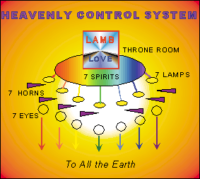
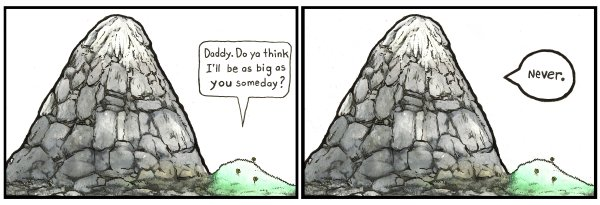
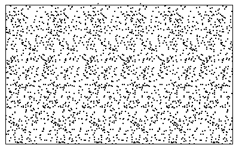
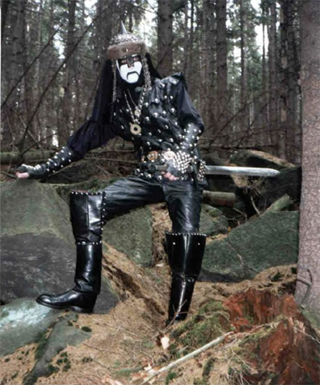

#45386 201 2005-01-10T23:14:22Z stepself Also, I'm somewhat suspicious of that new top rated guy. May want to look into that while you're there. . .
If you're implying that I have rigged the scoring system, I have not. Take my word for it.
#47591 4 2005-01-23T22:19:11Z stepself I'm illiterate. But I'm also right-handed.
Oh god which do I choose?!
#47594 7 2005-01-23T22:27:02Z stepself Being illiterate doesnt make you not right or left handed. It just means you can't read/write.
Haha, thanks. I was joking. And you're still handed regardless or whether you can read or write.
#1913 1 2005-01-27T16:09:17Z stepself New level here, but it's different from my normal style. For one, there are more objects than I'm accustomed to. So the load time's a little longer, but not obscene by any means. Also, it's not so much action than it is precision jumping.
Anyway, a completion demo is included, but completion is not the challenge. All-gold's a little harder.
If you like this level, tell me so. If I get a positive response, I'll make more and submit to numa. If not.... well, I'll stick to what I know, and keep these types of levels to myself.

Enjoy
Attachment (lost): post-10-1106842157.txt
#48265 6 2005-01-28T00:07:43Z stepself Thanks for the comments guys! If you have anything else to say, direct it to
this NUMA link#48898 6 2005-02-01T02:48:08Z stepself If you could stick hatred in level form, you would come up with this.
That was the most irritating level I have ever played. Well done!!
#49684 8 2005-02-08T05:37:08Z stepself Just to piss off the spammer, you could try baiting them...
Link!
Clicking through on a link brings you to a set of emails between one Brad Christensen and a hapless spammer. Some are quite funny...
#49688 1391 2005-02-08T06:45:30Z stepself Some kind of base
#49775 4 2005-02-09T02:09:34Z stepself Have you been reading "Darwin's Black Box" by Behe, Keron? Your arguments of irreducible complexities sound reminiscent of that book. Behe makes some rather convincing points, and his position as a microbiologist gives him some credibility on the matter. However, microbiologists have shown that irreducible complexity is not only possible within evolution, it almost
always does occur in higher organisms. The layman's description, as I understand it, is that an organism may evolve a certain attribute, that, as time passes and more evolution occurs, becomes essential to that organism's function. Initially, the change was something extra, something the organism didn't necessarily need. Eventually though, that change became an integral part of it's biofunction.
If you want to read more on the subject, see
this link, but beware: it's a hefty read.
[EDIT] Also of interest, is
this site which shows how a computer model successfully produced the basic design for an eye (another irreducibly complex system) by using evolutionary methods.
#49830 19 2005-02-09T21:16:09Z stepself Doesn't matter what theories you come up with, all physical stuff (for want of a better word) must come from somewhere. This means that someone - or something - not bound by space and time must have started it.
That's one way of looking at it. And I can certainly see the appeal of using religion in order to justify this. It gives humanity, well, all of existence, some sort of importance.
On the other hand, getting something from nothing isn't so implausible as it first may seem, especially when you think of the big picture. Take math, for instance. Negative one plus positive one. -1 + 1 = 0. Overall, the net sum is zero. Nothing. But it is made up of components of different signs.
Consider this: theoretical physicists have postulated that virtual particle pairs are created all the time, each particle having a different phase (or sign, so to speak). These virtual particles (so named because we cannot detect them directly) exist only briefly before colliding into one another, annihilating each other.
I'm sure you've heard of anti-matter before. It's just like ordianry matter, but if it were ever to come into contact with it, both the antimatter and regular matter particles would be destroyed. This is like a slightly more familiar version of the virtual particle example. The antimatter is said to be in an opposite phase (or sign) than matter.
Enough of this rambling... My point is that, when the universe is looked at as a sum of parts, I believe that it is quite possible that the net total of all matter is zero. It makes sense to me, at least.
Sorry if I confused anyone

#49908 41 2005-02-10T03:07:59Z stepself For further consideration
The Miller/Urey experiment involved putting an electric current through a sample of gases believed to be in Early Earth's atmosphere (methane, water, ammonia, etc...). The electricity was supposed to simulate electrical storms which would have been more common in the early stages of the Earth's development. After only
one week, 10% of the carbon was in the form of organic compounds, and 2% was in the form of amino acids, the building blocks of proteins, cells, and life itself.
If you scroll down further, there are some oppositions to this experiment, just to show both sides.
[EDIT] Daddaluma, cool it. Evolution has not been proven true. There are precious few "truths" in science. There are only theories, some of which are more supportable (like, say, gravity) than others (like evolution). Debate is the foundation of progress, and dismissing someone's opinion out of hand isn't going to help.
#49914 9 2005-02-10T03:26:16Z stepself I thought determinism had been 'proven' wrong. Quantum mechanics messes the whole deal up. Uncertainty in particles means you will never know how they will act at any point in time, regardless of the past and Newton's laws.
#49918 12 2005-02-10T03:46:38Z stepself Clearly, I'm out of my league.
Here's a question though. Assuming we're operating under a deterministic universe, of course. What happened at time zero? At the creation of everything, the Big Bang? What determined initial position, velocity, etc., if quantum mechanics isn't to be considered.
#49925 15 2005-02-10T04:06:31Z stepself This thread isn't meant for discussing the Big Bang, just the events that came after it. Nobody can tell you what determined things like initial position and velocity, so it's really not worth arguing about.
My mistake
#50466 52 2005-02-15T06:44:46Z stepself Shelter
Pulvonary
My submissions for NC6
#51619 3 2005-02-25T23:41:52Z stepself Heh. Even the dude on side of the box looks like he wants a piece of that tasty, tasty CD.
#52170 2 2005-03-02T02:25:54Z stepself I have a mac, and I had this problem. I never figured out how to fix it (it went away on its own after a bit).
I did find a temporary solution. If I right-clicked on the screen and chose "about macromedia flash...", it started working again, but only until I restarted it.
#52175 5 2005-03-02T02:52:21Z stepself It didn't take long to start working again, but I have no idea what I did to fix it. Are you even on a mac?
#52280 3 2005-03-03T02:51:53Z stepself *is impressed*
You run laps around what I could accomplish! Kudos.
#52281 29 2005-03-03T03:03:47Z stepself Heh heh. It took me a while to actually find the ninja.
I'm swift.
#52283 2 2005-03-03T03:19:56Z stepself Oh plate techtonics.
Looks like you've divorced yourself from reality

You should try getting rid of the game for a bit! I had to delete the game from my computer for a while so that I could get work done.
#52315 3 2005-03-03T04:27:14Z stepself #52465 1525 2005-03-04T00:27:35Z stepself Ginkgo biloba helps her remember where it is
#52517 8 2005-03-04T06:25:24Z stepself This is one of my scariest dreams
I don't remember many dreams from my childhood, but I vividly remember a nightmare I had just a few days ago. It was over really quick. Anyway, there was this puppet in front of me, dressed like a clown. It looked pretty menacing, even the eyes were drawn as slits. And it was moving on its own. I tried to push it away, but I realized that it was somehow attached to me, at the stomach, like it was stitched to me, or something like that.
At this point, I was freaked out, so I just tore at it to get it to stop moving. There were small pillows inside the puppet as stuffing. That's it. It stopped moving. It was just any other puppet.
Then for some reason, I decided to keep tearing it open. The fabric ripped right up to my stomach... and kept going. I saw what I was doing, but I couldn't stop. And the weirdest part was that I was full of those small pillows too, just like the puppet. I tore all the way up to my neck and collapsed, feeling the pillows slid down across my arms. I realized that that was all I was made of. I couldn't move.
Then I woke up.
Seriosuly the most f*cked up dream I've ever had.
Besides that, I haven't got much to add!!
#52528 1532 2005-03-04T08:08:56Z stepself Unfortunately, NASA's misunderstanding of the difference between metric and English engineering units would send the rocket off course.
#52714 2 2005-03-05T17:05:35Z stepself *marks calendar*
Good luck at IGF!!
#52786 1555 2005-03-05T20:10:17Z stepself A lack of oxygen and moisture in the atmosphere thwarts the pesky rust monster
#52930 4 2005-03-06T22:34:40Z stepself My Winamp tends to just stop entirely after a song is finished playing while in N. Sometimes it starts up again, sometimes not. It's kind of irritating.
#52959 8 2005-03-07T00:41:35Z stepself bananakid:
All versions of Windows Media Player come with the "Classic" version, version 6 I think. It's in the program folder. It runs so much quicker than the newer versions, and works for just about everything I'd need.
But you're right. Winamp is far, far superior!
#52987 12 2005-03-07T03:50:21Z stepself Keron Cyst:
The newest Winamp (5.02, I think) *does* have have "helpful pop ups" for the buttons. As for the radio box, I don't know what you mean.
#52991 14 2005-03-07T04:01:12Z stepself 5.02 is the latest? Dude, I have 5.08d.
Hmm.
*updates*
#53002 32 2005-03-07T04:22:54Z stepself I think the plot as it stands now isn't that bad. I mean, who says you can't have a story that's told all in flashback? Maybe it's the protagonists life that's worth telling, not how he dies.
Just my $0.02
#2157 1 2005-03-07T07:45:52Z stepself Since there's no decent music thread here (that I can find), I've created a forum over at
Audioscrobbler. You can join the forum at the following link:
Link to forum!
First you'll have to sign up. Audioscrobbler works by tracking the songs you listen to, and keeping a tally. It's all on their site, so check it out!
#53045 4 2005-03-07T15:45:48Z stepself Pah! How did I miss that?
Well, Audioscrobbler's still a great way to share music. Everyone should still check it out, despite my obvious searching deficiencies.
#53047 5 2005-03-07T16:36:19Z stepself These are the lyrics to the song:
We're calling all bed-wetters and ambulance chasers.
Poor pick-pockets, bring 'em in.
Come join the Youth and Beauty Brigade.
We're lining up the light loafer'd, and the bored bench-warmers.
Castaways and cut-outs, fill it up.
Come join the Youth and Beauty Brigade.
Nothing will stand in our way.
I figured I had paid my debt to society
by paying my overdue fines at the Multnomah County Library.
At the library, they said, "Son, go join up.
Go join the Youth and Beauty Brigade."
Nothing will stand in our way.
The sub-forum is definitely referencing it: "Nothing will stand in our way"
#2194 1 2005-03-12T06:58:55Z stepself I made this map awhile ago, but forgot about it until I saw blue_tetris'
Cube on NUMA. Anyway, I think this one is pretty hard, but for different reasons. It's a 2-code map, so remember: load Code 1 first, then load Code 2. It's simple! Also, if you find it too hard or just want to cheat, just load code 2, but make sure to clear the screen first.
Enjoy
Attachment (lost): post-10-1110610735.txt
#53938 6 2005-03-12T22:45:40Z stepself Shmeh. Well, it was one of my earliest maps. I guess I'll chalk that up to inexperience.
#53966 8 2005-03-13T00:06:39Z stepself You mean the ghost tiles I assume? If a character in the tile code is replaced by something it can't read (I used "-"), then the program doesn't draw a tile, but it also doesn't draw over whatever was previously loaded. The result is a tile you can walk through.
I have another (old) map that uses this technique to limited success. It's not my favorite because the end is too hard, but it's fun nonetheless.
http://metanet.2.forumer.com/index.php?showtopic=848&hl=#54438 9 2005-03-16T21:21:01Z stepself Got it! I knew he looked like Thom Yorke, I just couldn't place the video.
Radiohead - No Surprises
#54456 11 2005-03-17T00:57:46Z stepself Here's mine.

#54613 5 2005-03-18T01:51:46Z stepself #54617 7 2005-03-18T03:00:28Z stepself Quote: so_what?, Mar 17 2005, 09:28 PM
Tied with Monkey island!
Never heard of that one... but right now, I don't need any additional distractions than I already have!! I'll check it out some other time.
#54719 29 2005-03-19T00:43:12Z stepself I just saw The Ring 2... Total crap.
Really? I was so looking forward to that too...
And speaking of remakes of J-horror films... the original "Dark Water" was a fantastic movie. The remake with Jennifer Connelly is coming out soon I think, but I fear Hollywood may bung it up.
#55148 1824 2005-03-21T10:18:41Z stepself An article on thermodynamics shows you that absolute zero is a practical impossibility.
#55199 10 2005-03-21T18:19:06Z stepself Well, for what it's worth now...
All four ran about as fast as v1.3 on my computer... n_a was actually faster at times.
n_a: 20-25 ms/f (this one asked me to increase memory allotment to the Flash player)
n_b: 20-40 ms/f
n_c: 20-30 ms/f
n_d: 30-40 ms/f
n_v1.3: 20-25 ms/f
All on 00-0.
2.41 GHz, 512 MB RAM
#55202 12 2005-03-21T19:27:44Z stepself Regarding smoothness (and this is entirely subjective, as the differences were small and variable)
Compared to n_v1.3
n_a: more smooth
n_b: less smooth
n_c: less smooth (better than b though)
n_d: about the same
If you asked me again some other time, you might get different answers

But I still think n_a is better, if only slightly. I think I'm in the minority on that one though.
#55229 2 2005-03-22T01:54:41Z stepself Seems like they wouldn't be hard to avoid unless you were in a confined area.
Besides, I love the rockets as they are now

#55242 57 2005-03-22T02:47:25Z stepself Seconded. That is, if Mare and Raigan are even going to showcase bug maps.
What I like about that map, LV, is the simplicity of it. Almost every (if not all) teleport map is overdone to the point of confusion. They're maps for the sake of the bug. On your map, they're merely a nice touch.
#55249 8 2005-03-22T03:19:42Z stepself I think rockets are a bit annoying. I think they should fly for about 5 sec or so, then they run out of fuel and drop to the ground.
Nooo! Rockets are probably my favourite weapon. I can understand a lot of people's frustration though. I used to be terrible at dealing with them.
I'd have to say that the seeker drone is my least favourite enemy. You will never ever see one in my maps... unless I get better at dealing with them.
#55293 1835 2005-03-22T06:40:13Z stepself A crew of space miners lead by Bruce Willis blow up the meteor.
#55362 17 2005-03-22T17:57:50Z stepself There is already an
N wiki concerning general gameplay. I suppose it can be expanded to cover level editing as well, and possibly the hall of fame idea.
#55522 1858 2005-03-23T16:04:43Z stepself Poisonous too, so we'd be right back to "poisonous air". Regardless...
A barrel of gasoline and a match effectively removes oxygen.
#55645 5 2005-03-24T02:02:55Z stepself I think brickman's right actually. There are a few levels on NUMA (Lucidium's "You're not done yet" comes to mind) that use jump pads to let you regain control of the ninja after passing through the exit. The demo always keeps recording for those levels.
[edit] Wrong map name
#56348 1915 2005-03-27T02:07:44Z stepself Imagine the mess that would cause...
An underground bunker for Eli to hide in
#56358 3 2005-03-27T03:10:09Z stepself The only hard part for me is getting the trap door switch... so_what, that's what you may be missing. It's hard to spot
#56403 44 2005-03-27T05:59:41Z stepself Ciao, maximo.
I'm disappointed that I don't know you any more than I do now. I hope you find what you're looking for in life, and that you'll come back some day. It's obvious that you will be missed.
#56414 209 2005-03-27T07:33:50Z stepself What was wrong with the other thread again? The last post was two days ago.
#56482 3 2005-03-27T16:31:41Z stepself It's also
National "Joe" Day (in the States, I assume). Do you hate your name? Today you can ask to be called "Joe" instead.
But yes. Happy Easter to all!
#56487 2 2005-03-27T16:57:16Z stepself Heh. This is the same guy who came up with
the Grizzly suit for dealing with bears. Seems a little too unbelievable for me, though
#56490 4 2005-03-27T17:10:15Z stepself Hmm. He's also the inventor of a firepaste that withstands temperatures of at least 2000 degrees Celsius.
Link here.
He has quite the resume....
#56519 38 2005-03-27T20:47:15Z stepself I think you have a reset error, syntax
[EDIT] It's still acting weird for me. You jump around aimlessly for a bit, then hop onto a mine.
#56653 11 2005-03-28T06:15:50Z stepself So does the fireproof paste thing.
There is video proof of it.
Daily Planet interview (click the first link, embedded WMP)
#56657 22 2005-03-28T06:26:11Z stepself Electromatgetic waves would be correct, if anyone cares.
I care. I was going to say something, but decided not to.

#56660 24 2005-03-28T06:32:00Z stepself To be precise, light is a form of electromagnetic radiation
#56690 13 2005-03-28T13:11:28Z stepself Yeah that happened to me too. I had to go to fullscreen to get a picture.
#56696 3 2005-03-28T15:15:51Z stepself #56868 1950 2005-03-29T02:22:17Z stepself Anyway, paranoia...
Massive state-wide doses of the drug haloperidol eliminate feelings of paranoia.
#2345 1 2005-03-29T03:12:13Z stepself From the new Chemical Brothers video "Believe".
Click me! You need WMP or Real player. You can use the flash version, but it was choppy for me.
#56987 9 2005-03-29T20:09:50Z stepself Quote: Mare, Mar 29 2005, 11:37 AM
It seems that 1.4 won't be out for a while, so i thought i could ask this.
I've been playing with Ned for a while, but its so.... torso.
so what new does 1.4 bring to Ned?
what does torso mean?
According to
Dictionary.com, he might mean "a truncated or unfinished thing"... in which case he would be right.
#56988 2 2005-03-29T20:48:30Z stepself Check out the highscores for that level. Watch how other people do it, then try again.
The toughest part (IMO) is coming back after getting the terminal switch. I usually have to turn around right away, before the thwumps have even stopped moving. Since you won't have much speed built up, you need all the extra time you can get.
If that's confusing, I apologize, it's hard to describe.
#57034 5 2005-03-29T22:53:55Z stepself I got this one a while ago... Pulp Fiction. Butch's French girlfriend says it when they're at the motel.
Here's mine: (a movie)
Quote
I haven't eaten since later this afternoon.
#57130 8 2005-03-30T16:26:06Z stepself Damn! Google knows?
...
So it does. I should really double-check these.
#57138 2 2005-03-30T17:57:25Z stepself On the board index, your title reads something like "OMFG!!!LOLOLOLN1.4..."
I thought it was released! Thanks for getting my hopes up!

#57215 20 2005-03-31T01:45:06Z stepself too complicated. wut is linux version anyway? i've tried to downlaod it but it does nothing!
Zuh? Linux is an operating system. The Linux version won't work on your computer if you're using Windows or OSX.
Unless you were joking. I can't tell.
#57222 22 2005-03-31T02:10:57Z stepself but if u can't use windows or mac, wut the hell do u use to use it?
No, you see, Windows and OSX are operating systems. So is Linux. It isn't as popular as the first two, which is probably why you're confused. You can't run the Linux version without installing the Linux operating system. You probably don't want to do that. At any rate, the Linux version would be identical to the other versions. You're not missing out.
#57286 7 2005-03-31T05:32:17Z stepself You better believe that's a 'Hell Yeah'!
Japan?
#57297 25 2005-03-31T06:39:12Z stepself If you count servers (I do), linux is more popular than OSX, and nearly as popular as Windows.
Hmm. You learn something new everyday.
#57512 31 2005-04-01T06:32:56Z stepself Granted, but then you'd be removed off the face of this earth

I wish my favourite pen wouldn't run out of ink.
#57523 2 2005-04-01T07:45:01Z stepself Here's another.
Star Guitar, also by the Chemical Brothers (WMP or Real video). There's nothing in this video that doesn't in some way sync up with the music. Bloody brilliant.
It's directed by Michel Gondry, who's also done some fantastic videos for such groups as Daft Punk, Bjork, and the White Stripes.
#57583 95 2005-04-01T17:01:20Z stepself Excellent job on 1.4 so far, Mare and Raigan.
The second app works better for me.
#58351 34 2005-04-04T18:23:50Z stepself Sigur Rs - Flugufrelsarinn
#58413 13 2005-04-04T23:20:13Z stepself I forgot about this thread. If my still was too hard, here is the unedited version (not that different from the altered version...)

If no one can get it, I'll give my turn to someone else, or give hints... this video isn't totally unheard of; I've seen it on muchmusic (Canada's MTV) a couple of times in the past.
#58518 15 2005-04-05T13:17:26Z stepself Okay then, hints.
- It's by an Icelandic group
- They've gotten rave reviews from many sources, including Radiohead.
- The song for this video is the first track of one of their LPs.
If you really can't get it, check out
my Audioscrobbler. I'm pretty sure this band is among my top 10 artists.
#58529 53 2005-04-05T15:54:52Z stepself EDIT: why is the pic so small?
Photobucket resizes large pictures. I don't know how to circumvent it. Try a different storage website, like
this one.
#58587 4 2005-04-05T21:13:17Z stepself Not that bad as a puzzle-style map, but it couldn't hurt to throw in a few drones, for good measure. Also, it wasn't hard at all. This demo was my first try, and nearly all-gold (I decided to not go for the last square in case my route got blocked off).
Attachment (lost): post-10-1112735597.txt
#59708 2 2005-04-12T00:37:00Z stepself I really liked it -- there was a nice balance between difficulty and simplicity. Very old school. And you're right, the terrain was excellent, a nice change from your hacker maps.
Attachment (lost): post-10-1113266220.txt
#59762 7 2005-04-12T11:16:24Z stepself In reverse alpha order:
- Sendy (complexity)
- rrrobyp (flow)
- maximo (difficulty)
- Echarin (simplicity)
- Atramentis (also simplicity)
And others. Most of my favourites have already been mentioned.
#2515 1 2005-04-12T11:33:40Z stepself If this has been brought up before, I apologize. Anyway, I know it's frowned upon to delete low rated maps in order to boost ratings -- I've noticed people do it a few times and get verbal warnings.
My point is, lately I've been thinking about editing one of my
low rated maps because I always liked the concept, but I kind of flubbed the execution. Of course, it's rated, so I can't edit it. So what should I do? Submit my new version and keep the old one, or get rid of the old one. Or should I just post it here for the forum folks to try out? I would be satisfied with that, if nothing else.
#60005 82 2005-04-14T16:06:57Z stepself "ibogaine"
Yeah, I'm not sure either...
#60333 16 2005-04-17T03:40:55Z stepself Alright then. I really thought fans of Radiohead might get this one, but oh well.
It's by a group called Sigur Ros. The song is called "Untitled #1" in that it doesn't have a name, and is the first track off a CD in which none of the 8 tracks have names. If you want to see the video,
click here now (see below). The song is eerily beautiful, and easily one of my all-time favourites.
So... I guess next person who wants it can post their clip.
[EDIT] Here's a better link for the video:
Video.
#60415 2 2005-04-17T18:50:08Z stepself ... if I bring up the debug menu, press L to load it again, the ninja respawn's where he died...
Press R instead. R is for reset.
#60632 15 2005-04-19T00:41:57Z stepself I get three ads for drugs to help with schizophrenia, and other manic disorders. Probably from Maniac and trib4lmaniac's names.
#60636 18 2005-04-19T00:47:59Z stepself No, they're not american. They're from Iceland. And they're far from obscure. They're not as well known as, say, Britney Spears... but most everyone I know who likes Radiohead (specifically their later stuff) is into Sigur Ros as well. I just assumed someone would have seen that video. I was wrong. Whoops.
And someone still has to post a new video.
#60642 20 2005-04-19T01:02:57Z stepself Er... Radiohead's one of my greatest inspirations, yet I don't know them...
Then I suggest you listen to them. "Untitled #8" is a good place to start. Also, if you saw "The Life Aquatic with Steve Zissou", you might recognize "Starlfur" which plays near the end.
#60751 23 2005-04-19T20:03:44Z stepself Family Guy -- annoying and vulgar?
*head explodes*
#60857 3 2005-04-20T04:23:36Z stepself Fish. I've been fishing before, so I guess this has already happened.
PeTA now claims that fish feel pain (it's part of their latest campaign), but I'm not apt to begin believing them anytime soon.
#2607 1 2005-04-20T20:22:41Z stepself 
I couldn't stop laughing when I saw this picture. And so I share it.
That is all.
#61261 39 2005-04-22T01:52:12Z stepself My turn: Born and raised in Canada. While we're on the subject of stereotypes, I do not live in an igloo or own a dog-sled, but if I did there'd be nothing at all wrong with that
. Right now, I'm finishing my second year at university studying engineering chemistry (which is
not the same as chemical engineering, but don't get me started). I'll probably specialize in biochemistry when the time comes, and beyond that my life is not planned at all. Hell, my life as it stands now is pretty unorganized, and that suits me just fine. I used to actively play the trumpet and french horn before chemistry took over my life. I kind of miss that. I'm into a lot of different kinds of music (used to be just a Classical kind of guy but I've branched out heavily). I'd be willing to talk anyone's ear off about music. Oh yeah, and I had my "quarter-life crisis" just a while ago. 20 is such a large number. Sigh...
And that's all I have time for.
#61567 5 2005-04-23T17:12:18Z stepself Sendy, that reminds me of a sociological experiment I learned about a few years ago. In the experiment, you either have one person, or a group of people put inside a kind of waiting room. In the next room, behind a closed door that says something like "Staff only" on it, the sociologist starts playing a recorded track of someone yelling and screaming as though they hurt themselves badly. The people in the other room don't know that this is part of the experiment.
When the experiment is carried out with one person, that person invariably gets up and goes through the door to see if they can help. When it's carried out with a group of people, the odds of anyone helping fall dramatically.
#61702 32 2005-04-24T00:39:03Z stepself "I still don't know what YHYW is, or whatever..."
My google-fu must be better than yours.
Link#62586 10 2005-04-28T19:22:11Z stepself Ben Affleck? Ew. Brad Pitt, definitely.
Johnny Depp or Ewan McGregor.
#62706 3 2005-04-29T03:30:32Z stepself Another music video! More people here may find this interesting. It's for
16 Military Wives, the new Decemberists single, off their newest CD "Picaresque". It's quite good fun, and seems to be a parody of the movie "Rushmore".
#62857 3 2005-04-30T01:12:21Z stepself But then... anyone giving a cursory glance to the NUMA page would have no idea what consitutes a good map. You're forcing people into doing something they might not have time for, especially if they're browsing for high-rated maps. Interesting idea though.
#63489 7 2005-05-03T01:41:40Z stepself My top ten bands are:
Radiohead
Sufjan Stevens (that's him in my avatar!)
The Go! Team
Bloc Party
The Weakerthans
Sigur Ros
The Fiery Furnaces
Interpol
The Arcade Fire
Elliot Smith
Oh, and the Coral rock. Shame their last album was so short. If you like them, you'd also like the Zutons. Similar (if not identical) sound.
#63510 15 2005-05-03T02:07:45Z stepself <off-topic>
The only story I have on my computer is one I co-authored with a few friends. It was written specifically to be all but unreadable, full of grammar errors, spelling mistakes, etc. We tried not to use the delete key at all. Anyway, it turned out pretty funny. Here's an excerpt.
Quote
It seemed like the destruction would never end, until finally, Sammy caught sight of his green flesh and bloody hand in a broken shard of mirror that represented the broken shards Sammys life had become ever since the incident in the funhouse when Sammy had gotten switched with mirror Sammy because of the gypsy curse that had befallen him. No one noticed, except for the fact that the new Sammy was evil and had a mole on the wrong side. Ever notice that Sammys been differenet, theyd say. Yeah, theyd say. His mole changed sides. Oh, and hes evil. But mirror Sammy now looked in the broken shards of mirror (or life) at his own reflection, both in a literal and metaphorical Im a reflection of your life and soul! sense. You may ask how a shard of ones life can reflect someones soul, but I may shoot you.
It goes on in this vein for 14 pages.
#63588 9 2005-05-03T15:56:00Z stepself Most of my favourite maps made it in... perhaps I'll browse NUMA for other people's maps. People who aren't likely to respond to this post.
#63696 3 2005-05-04T05:38:22Z stepself Keron, you're insane. And when I say "insane" I mean "sane", of course.
#63837 6 2005-05-05T15:17:40Z stepself I'm with seifer on this one. Pink. And that has nothing to do with the fact that pink is the only colour I can access right now
#2776 1 2005-05-07T23:58:42Z stepself Anyway, NUMA's down as of right now. So check out this new map of mine. I'll resubmit it when NUMA's back up, but for now suggestions are welcome.
Completion's all well and good here, but all-gold would be fantastic. I know every piece is possible to get, it's just tough for me to do it all at once. Most people though are better at this game than I
So... go to!
I can post a completion, but I'll do that later if anyone needs it. I doubt that'll happen though.
Attachment (lost): post-10-1115510322.txt
#64276 4 2005-05-08T07:57:07Z stepself Nevermore exploits one method, but there is another. The map is now on NUMA, check out my maps to find it (
link here). All-gold anyone?
#64364 7 2005-05-08T18:02:37Z stepself Homing zap drones, without a doubt. I don't know why, I just can't seem to deal with them. You have no idea how long it took me to complete 01-0 (I think it's called cavern) because of that one seeker drone! God, that was so frustrating.
Oh yeah, and stupid level design sucks too. Doesn't frustrate me as much I think.
#65335 17 2005-05-13T02:55:07Z stepself sforzando
#65439 59 2005-05-13T16:15:43Z stepself Its really stupid how the word 'Gay' is used that way. I mean, everyones entitled to their own opinion, but its only used as an insult mostly by kids who dont have anything against homosexuals, but just hear it being used that way from a young age.
What pisses me off is that when these kids grow up and learn the other meaning of the word "gay" (ie. homosexual), they'll have that negative connotation already inbred. They'll be predisposed to bigotry. It's up to everyone else (teachers, parents, peers) to change that attitude.
#67028 61 2005-05-16T03:11:37Z stepself Blind: q529q2ir (Mavis Beacon taught me nothing!
)
Nose: wt5340-ws34or
Ear: zwazjzdm
Elbow: stepself
Mouth: stepself
Chin: zsgfds;lszsw,lfd
When I'm off, I'm way off.
#2882 1 2005-05-16T17:56:34Z stepself Never again will I have a #0 high score. So yay!
#67613 10 2005-05-18T04:17:14Z stepself I often find myself wishing I had these tiles to work with, as well as their inverses:
[Edit] Yuck. Sorry 'bout the large attachment. I don't have a photo editor that can crop
LV's Edit: CROPP'D! Attachment (lost): post-8-1116394706.jpg
#67714 16 2005-05-18T19:07:24Z stepself i'm not sure.. it would quadruple the number of cells in the grid, and thus the "size" of the grid in memory, but.. i always assumed that 200x200 was twice the resolution of 100x100...
200x200 = 40000 pixels
100x100 = 10000 pixels
200x200 is four times the resolution of 100x100, as I understand it.
And also, I wasn't really complaining about the tiles. I can avoid getting into situation where I'd need them with forethought, usually. I just hate forethought
#67968 6 2005-05-19T19:48:38Z stepself Hey, welcome back Mare!
Not quite sure what _exactly_ e3 is, but I'm sure it was great.
I think the words "electronic" and "expo" are in there somewhere.
#69044 21 2005-05-24T00:31:58Z stepself I'm planning on being some sort of engineer type. Or a mathematician. Or, possibly, a grizzly bear.
LV, here's a comic for you:
Bear boy.
I'm going to be an engineering chemist. Kind of like a less practical chemical engineer, but hey, this is the life I chose
.
#69167 6 2005-05-24T18:37:10Z stepself I forgot to post saying I beat your time on Apple-o. But you took it back already! Grah, and such.
[EDIT] Oh yeah, and did anyone catch the music reference on this map? The tiles kind of resemble the album cover from a band I like. There seem to be a lot of music tribute maps these days...
#69193 6 2005-05-24T21:28:09Z stepself http://numa.notdot.net/map/7840
It's an album title.
And Sendy... I approve of your taste in music, the ones I recognize anyway
. I always thought that Floex was the name of a prescription drug though.
#69201 20 2005-05-24T21:58:10Z stepself Also, the giant nose statue in Humma Kavula's church is a recreation of Adams'.
And his face is visible as a planet in the Magrathean factory.
And his face is the last image that flashes before the credits roll.
I thought the movie was fantastic. A perfect adaptation of the novel would have made for a terrible movie. I think they did the best they could, while retaining a lot of Adams' wit.
#69223 3 2005-05-24T23:01:19Z stepself DDC stands for Dewey Decimal Classification as well as
a whole host of other phrases.
But I think you may have meant DDA. Don't Do Anything, ie. hit the play button, and watch the level happen.
#3016 1 2005-05-26T20:32:54Z stepself Here are my first eight episodes. Hopefully I can get around to making more in the future.
Attachment (lost): post-10-1137959021.txt
#69747 13 2005-05-26T21:57:55Z stepself #69861 9 2005-05-27T04:44:45Z stepself It's 94-2. Fun level too, but nothing like mine.
#71847 7 2005-06-02T23:43:17Z stepself Even if it is total garbage, I'll try it out... unless there are too many objects. Like those maps that are completely covered in 1/4 snap gold, or 129023 locked doors on top of one another. Those are automatic zeros.
#71908 11 2005-06-03T06:17:28Z stepself That was hilarious. Where did you find it?
I remember seeing this a while ago in the Something Awful forums, along with dozens of other similar animations. A quick search turns up nothing though...
#72184 3 2005-06-04T13:08:41Z stepself If I had to choose one of the above? Smashing Pumpkins
If I didn't, then none of those bands would even be on my top 50.
#72185 2 2005-06-04T13:13:11Z stepself My first gaming memory was SkyRoads. It was a simple little DOS game that fooled around with perspective and 3D. In the game, you had to jump around on platforms, always heading forward (but you could drift left and right), trying to avoid hitting walls or falling off the platforms. You only had a limited amount of oxygen, and fuel, both of which could be replenished by landing on the right tiles. I seem to remember there was a SkyRoads Xmas Edition as well...
That was probably the first game I ever became obsessed with.
#72374 37 2005-06-05T00:47:43Z stepself Secret Mommy - The Food
#72448 5 2005-06-05T06:07:22Z stepself Umm, what on earth was the "palm tree" category for?
He means N. He kinda looks like a palm tree when he's in the upward arc of a jump. At least, I see it.
#72454 41 2005-06-05T06:16:14Z stepself Feel Good Inc. - The Gorillaz
I love that song. It's great. What's not to like?
By the way, does no one want to guess my music video in the long dead music video thread?
Great song that... you should check out the mash-up of that song with Cake's "Never There". It can be found
here.
Also, I believe Kablizzy guessed your video, and got it right.
#72467 13 2005-06-05T06:30:22Z stepself Right now, I have one partition for my music files, but what I really need is a bigger hard drive. I don't think I would ever need as many drives as you have.
#72661 12 2005-06-06T00:15:46Z stepself For the record, virtually all of my levels rated 4 or higher have been rated down buy one or two people. No comments were ever left. And none of my lower ranked levels were touched.
#72676 14 2005-06-06T00:37:11Z stepself Huh. Thanks! Frankly, a lot (but not all) of my lower maps deserve the rating they got, in my mind. It's just when people lower them without explaining why that I get a little irked.
#72685 2 2005-06-06T01:02:17Z stepself The first one. By which I mean, the fourth episode. I never could take Yoda seriously, especially in the prequels.
#72767 18 2005-06-06T13:39:30Z stepself Hmm... You know what? I think someone's rating all of my maps up.
I feel like all of my maps have recieved two very high votes recently.
*winces, ready for my ratings to go down...*
I just rated all your maps zeros. Hmm. I probably shouldn't joke about that, I think.
I actually have rated all of your recent maps. Most have been 4, a few 5, and rarely 3. You're one of the more consistent mapmakers out there.
[edit] consistently good, that is
#72916 2 2005-06-07T02:39:31Z stepself >What about you?
Similar to you, but I also listen to some electronica (anything glitchy), jazz (especially acid jazz), ambient, trip hop, math rock, britpop, alt-country, lo-fi, twee, some trance... I really have trouble categorizing most of my music.
#72937 10 2005-06-07T03:41:15Z stepself Next batch! Two more episodes. The second of the two is a collection of thwump-based puzzles and action levels. Out of both, I'm most fond of "Recrystallize", "Circuit", and "Stave".
Anyway, enjoy!
Attachment (lost): post-10-1118115675.txt
#73005 66 2005-06-07T13:05:55Z stepself Sufjan Stevens - Come On! Feel The Illinoise!
nevermore, did you ever get a chance to listen to that mash-up?
#73011 6 2005-06-07T13:29:32Z stepself Emo is the saddest excuse for a style of music, in my opinion. Really.
Hey now! Not all emo is terrible (though a lot really is). The Arcade Fire could be considered emo, and I wouldn't say they're music is awful by any stretch of the imagination
#73114 13 2005-06-07T23:25:04Z stepself Pshaw. Men, all the way.
#73157 2 2005-06-08T05:37:46Z stepself I know this has been asked before. Search 'pitcher plant' in the forums. As I recall, the advice was (as usual), watch the highscores. You'll no doubt find something you can reproduce.
#73314 87 2005-06-08T21:50:40Z stepself Electric Six - Danger (High Voltage)
pariah, I just listened to the new coldplay a while ago. I'm really digging it, but I think I liked their last album more.
#73328 2 2005-06-08T23:39:38Z stepself Damn it! I just got off that game, too!
*goes back to game*
#73361 18 2005-06-09T02:55:30Z stepself Oh- has anyone heard 'goodnight goodnight' by 'hot hot heat'? I think that's- please correct me if I'm wrong, which I'm fairly sure I am- acid/alternative. With a flute.
I saw the video for that song a while ago. It was an okay song, but a helluva lot more "pop" than their older stuff. I would just classify them as indie rock. Anyway, I like their songs "No Not Now" and "Get In or Get Out" much more.
#73616 3 2005-06-09T22:22:45Z stepself I haven't gotten past 55-0 yet...

#73619 97 2005-06-09T22:26:02Z stepself The Tragically Hip - Wheat Kings
#73695 101 2005-06-10T12:23:38Z stepself DJ Shadow - You Can't Go Home Again
#73797 109 2005-06-10T22:54:14Z stepself The Weakerthans - Our Retired Explorer (Dines With Michael Foucault in Paris, 1961)
#73800 40 2005-06-10T23:08:49Z stepself You may have almost beat SkyRoads... but have you almost beaten
SkyRoads Xmas Edition? It's like SkyRoads, but with snowy landscapes and presents. And Santa, I think.
[Edit] Okay, so two people have linked to the Bluemoon site already. Oh well...
#73971 5 2005-06-11T15:24:01Z stepself The only one I recognize is "Are You Afraid Of The Dark?", but I did like that show. I really wanted to form my own Midnight Society, and all that! Ah, youth.
My favourite show, as I recall, was "The Smoggies". You know... the show with the suntots, and they always foil the evil and polluting smoggies by using stuff like solar power. And we all learn a valuable lesson about the environment. That show. I loved that show.
#74329 27 2005-06-13T02:45:18Z stepself I say "gows".
I always thought it was called a gauss turret because the speed at which the crosshairs seek you out seems to follow a gaussian type of distribution. I might be wrong though.
#74330 117 2005-06-13T02:50:13Z stepself Sufjan Stevens - Casimir Pulaski Day
#74434 13 2005-06-13T13:50:25Z stepself ... I'm pretty sure that smoking cannabis gives you a higher chance of heart disease, a higher chance of lung cancer (both increaces are worse that that from ciggerettes)...
From what I understand, yes, marijuana is worse for your lungs than cigarettes. But honestly, look at smoking habits. Cigarette smokers can go through a couple packs a day. And generally, they smoke their cigarettes by themselves (ie. no sharing). But when you smoke a joint, it's generally with a group of people. And (at least in my circle) you don't smoke a couple of packs worth of joints in a day. Maybe one or two. And that would be one or two per week, or even per month for a lot of people (like me). Regardless, the total amount is much lower that cigarette smokers.
Every other credible complaint against marijuana that I can think of can also be applied to alcohol. Dependency. Risks of car accidents (much higher for alcohol by the way). Fetal death. How can the government maintain that one is legal and one isn't? Besides, the so-called war on drugs has been a total failure. Anyone remember Prohibition? That didn't really work out either...
#74557 28 2005-06-13T23:11:13Z stepself lol i have to say that smoking cannabis could be better solcially in certain circumstances. for example. if a bunch of lads got together and got pissed then there stands a good chance that they could turn agressive and maybe go start fights and cause damage e.t.c
whereas if a group were to get together and get high then they would probably just sit around and talk shit for a few hours. i can honestly say that ive never seen canabbis turn anyone agressive or negative in any way. it only seems to chill people out and make them more spaced out lol
Heh. Ever heard "The Irony Of It All" by the Streets? Do it now, if you haven't.
#75087 3 2005-06-16T01:02:20Z stepself A few months ago I got a lot of good feedback from the voting system and it helped me grow as a mapper but these days, pah... 
My ratings have usually been a reflection of the comments... or the other way around. Anyway, most all of the good advice I've gotten has come from the comments. Ratings don't really tell you much, especially on NUMA.
#75097 9 2005-06-16T01:24:25Z stepself I'll probably carry on using NUMA and try fighting the good fight.
I came to the same conclusion a while ago. While I find myself playing fewer maps from NUMA these days, I still try to submit maps every now and again (and I've been getting a bit more frequent lately). I can't complain about the quality if I don't try to raise it myself.
#75126 26 2005-06-16T02:30:03Z stepself Eldrial:
My favourite was Wrench. The first one seemed sorely misplaced (it was the hardest of the bunch), and it didn't fit with your theme (small cavern-ish levels). 'Sides that, there were a few bugs (one-way stuff, and exit door stuff). But overall they were very well done. I really liked the jumppad against the wall to give you a quick turnaround.
#75144 17 2005-06-16T02:49:32Z stepself I don't know that an "elite members lounge" is such a good idea. I mean, do cliques ever work? It'd probably just frustrate newcomers who aren't allowed in. And, personally, I'd probably never visit the regular front page. What would be the point? All the maps I know I'd like would already be somewhere else.
#75327 35 2005-06-16T13:43:45Z stepself I had another idea wich could maybe work. We have an elite members lounge ")
Okay, if people like this sort of idea, how about this alternative (which has probably already been suggested, but I'll repeat anyway). Custom user filters. I could log into my account and set exactly whose maps I want to see given a list of all users registered on NUMA. That would give you what the "elite lounge" would, but it would be customizable.
#75596 20 2005-06-17T03:48:12Z stepself This is actually a pretty good idea if you ask me. Sort of like on download sites where you get comments/ratings from the public and also comments/ratings from the 'pro critics' as it were. This could possibly save the ship from going down, if it could be implemented right.
Bold added. I'm still weary of this idea, but everyone else seems to like it. It does have a lot of redeeming qualities -- I just hope it doesn't backfire somehow. If it ever gets implemented that is.
#75693 2 2005-06-17T13:40:39Z stepself My mouse is fucked too! It will randomly and inexplicably move very quickly to one of the corners of the screen every 30 seconds or so. Sometimes, I catch the cursor as it starts to move, and I can try to move it rapidly in the other direction so that it stays in almost the same spot. Kinda frustrating.
And to answer your question, no. Did your mouse come with software? The software that came with an old mouse of mine let you change what each button did... Maybe "disable" is an option too?
#75706 6 2005-06-17T14:48:47Z stepself I love the "I am from <insert European country here>! I didn't know!" excuse. Good times.
#75707 2 2005-06-17T14:50:34Z stepself Short answer, have a look at the Read Me file in your N folder.
Long answer, make sure the level has been loaded, and paste your demo data in the box below the level data box. Hit 3 then Q. Then hit P.
#75718 512 2005-06-17T15:29:28Z stepself Bleach - yours gets 4 from me. I disliked the same thing Hellheart disliked. 'Sides that, it was fantastic.
X-325 - yours got a 4 from me, for reasons in the comment I left. Why it's now a 3, I have no idea... probably because of manwithboobs
#76554 128 2005-06-19T22:10:33Z stepself Edit: and now Dreaming of You, by a band I can't remember.
Spoon - The Way We Get By
nevermore, was that The Coral perhaps?
#76611 20 2005-06-20T06:23:06Z stepself M!
#77100 141 2005-06-21T21:40:52Z stepself The White Stripes - Blue Orchid
Link goes to an mpg video. The song is quite rocking though
#77265 63 2005-06-22T13:16:09Z stepself Any listing of 'maps with most favorites' will be biased towards maps that have been around for longer. This'll make new maps getting in rather hard. I'm not sure how to get around this one.
...
What do people think of this idea as a possible voting replacement, or supplement? I'm wary of having too many different systems in place.
For the first part, what about having two sections: "Maps with most favourites since day 0" and "Maps with most favourites since last week". Or make the amount of time you want to search within a variable, so you can look at any time period. How does that sound?
If the favourites idea works as it should, and bias towards older maps doesn't occur, I don't see why there should be a voting system. But you could go either way, I guess.
#77483 65 2005-06-22T22:49:34Z stepself For the first part, what about having two sections: "Maps with most favourites since day 0" and "Maps with most favourites since last week". Or make the amount of time you want to search within a variable, so you can look at any time period. How does that sound?
If the favourites idea works as it should, and bias towards older maps doesn't occur, I don't see why there should be a voting system. But you could go either way, I guess.
Actually, I retract the last part of that. If the favourites thing goes through,
keep the rating system. Just because someone's map doesn't make it into my favourites doesn't mean I don't want to give them a rating. That's the only way they could get feedback... well, that, and comments.
#77570 12 2005-06-23T04:25:09Z stepself Even more! Just one episode this time though.
Attachment (lost): post-10-1119500709.txt
#77979 15 2005-06-24T12:53:54Z stepself Here is a partial demo for that level. It gets past the trickiest part (then I blow up)
Attachment (lost): post-10-1119617634.txt
#78170 148 2005-06-24T21:19:14Z stepself Manitoba - Every Time She Turns Around It's Her Birthday
#78280 3 2005-06-25T02:47:42Z stepself And then perhaps me?
#78291 19 2005-06-25T03:11:57Z stepself Thanks for the praise! I'm glad you liked them...
I'm already working on the next set, but it will be slow going, seeing as how my keyboard and mouse are broken. So yeah.
#78299 323 2005-06-25T03:48:48Z stepself That looks like the same avatar you've always used...

#78303 325 2005-06-25T04:06:41Z stepself Odd... Your attached image and your avatar are identical
[Edit] Mental note: the refresh button is your friend.

Your new avatar is pretty good. I liked the old one better though... it was more ninja-y.
#79125 11 2005-06-28T02:35:23Z stepself Well I've never submitted a level to numa but this is the only level I have ever made. What do you guys think of it?
Not bad at all for a first level. It looks unfinished though, as in, there are a lot of rough edges.
I've long since lost my first level, which I never submitted (for one, it was pre-NUMA). Below is my attempt at recreating it. Yeah, it's pretty bad. I remember really liking this level too.
Attachment (lost): post-10-1119926145.txt
#3490 1 2005-06-28T13:15:51Z stepself This level is somewhat of a tribute to rrrobyp's maps, specifically his "x laps to go" maps. However, so much of my own style got in there, it's not even funny. I'm gonna try again, hopefully with more accurate results. But this, I think, is worth a play. It's short and simple -- as long as you go as fast as you can. Enjoy!
Attachment (lost): post-10-1119964551.txt
#79351 27 2005-06-28T20:50:07Z stepself jetcombo - You're like the third person I've seen with an explodingdog avatar. They're everywhere! Ahem...
http://www.audioscrobbler.com/user/stepself/#79356 158 2005-06-28T20:55:19Z stepself Death From Above, 1979 - Blood On Our Hands (
WM video)
#79636 25 2005-06-29T16:20:20Z stepself Currently using N v1.3, so none.
#79637 19 2005-06-29T16:23:18Z stepself Go New Zealand (Before you ask, it's not part of Canada, and it's not part of Australia).
People actually think New Zealand is a part of Canada?! I know some people are bad at geography, but come on... they're on opposite sides of the planet!
I'm from Canada, by the way.
#79638 6 2005-06-29T16:27:51Z stepself I never had a problem seeing them. Just don't focus on the picture. It's easy after that.
Quote
Oh, sorry Simpson, but youll have to do the course over again. I was trying to get this magic eye thing to work oh look, a pony!
#79719 28 2005-06-29T20:46:35Z stepself Huh? How come? 
Well, I'm resigned to the fact that I'll probably never beat the whole game (or, it would take me a long long time), so I've focused on map-making. And I haven't needed the new features in 1.4 yet. Plus, I'm not using my own computer.
#79840 2 2005-06-30T04:44:17Z stepself 1. Your english is better than most I've seen
2. Make sure that the Caps Lock is turned on. Otherwise you can only advance frame-by-frame by clicking the mouse button.
Objects on the border means that you've NaN'ed the source code for that object. You need to remove the code manually. Try searching for a help topic on NaN (which means Not a Number) for how to do that, as there have been many.
#79841 4 2005-06-30T04:50:18Z stepself There are also Windows emulators that would be able to run exe's, but I haven't found one yet that's both efficient in memory usage and free. I probably won't, either.
#79843 16 2005-06-30T05:09:14Z stepself There's one thing I never understood about ms/f...
This is probably just a stupid comment, and I'm missing something obvious, but, if one person recorded a demo at 30 ms/f, and another recorded the exact same demo at 10 ms/f, shouldn't the 30 ms/f person get a lower frame count in the demo data than the other person, even though the demos are the same? Does this make sense to anyone else?
#79844 490 2005-06-30T05:13:23Z stepself I would have picked a different quote. Like the one that goes something like "In the beginning God created the universe. This has caused much anger and has been widely regarded as a bad move..." etc. But then, there are so many memorable ones.
... And the next person can skip my signature, and do aAaAlLELllExxX's
#80039 19 2005-06-30T19:17:55Z stepself I think ms/f is more "how often the screen gets refreshed to show the current state of the game."
So, really, ms/f is just the refresh rate (well, inverse refresh rate I guess), and the frame count in the demo data is totally separate? Because on a slow computer, the game doesn't run any slower... it's just choppier. And it varies. But the demo data doesn't. So yeah. I think I just answered my own question
#80044 3 2005-06-30T19:32:41Z stepself That's one fantastic level. It'd get 4.5 from me.
I'd call it "Symptomatic". It's the first word I turned to in the dictionary, because I couldn't think of anything better.
#80095 8 2005-06-30T21:28:36Z stepself Nice suggestions there Kablizzy! hmmm....im tempted to use one of those titles for my next map....how about this! The next title suggestion will be the title of my next map! meh i suck with titles anyway
"Whiskey Tango Foxtrot"
#80109 312 2005-06-30T22:15:18Z stepself Ypsilon is also a greek letter. You can also write it as upsilon.
#80242 6 2005-07-01T14:25:29Z stepself Amelie
Evil Dead 2
Fight Club
Eternal Sunshine of the Spotless Mind
Mononoke-hime
Pulp Fiction
The Wrong Guy
... and others.
[Edit] I just saw "The Motorcycle Diaries" last night. It was very good. I also saw "Bewitched" last night. It was of lower quality.
#80268 12 2005-07-01T15:12:16Z stepself Constantine - Serious? This got bagged so hard, that I couldn't help not seeing it. Should I?
No. In general , Keanu Reaves != good movie. Matrix 1 was a good movie, but that's an exception.
#80282 3 2005-07-01T15:40:56Z stepself Okay, here's another aborted attempt. It's even shorter than the last, but it looks kinda neat. And it's still not right.
Attachment (lost): post-10-1120232483.txt
#80440 21 2005-07-02T03:53:56Z stepself I usually do listen to music (anything really) while playing N, but the lag doesn't bother me at all. I think that the Flash player slows down Winamp though... it sometimes freezes up for a minute or two between songs.
#80538 6 2005-07-02T13:20:19Z stepself Same problem with the launch pads, and this time they deposit you right into a mine if you're not careful. Of course this can be avoided, but I think you should be able to use any of the launch pads without dying or having to backtrack to get the exit switch.
Bold added. I think a little bit of challenge was needed to make the level more interesting. Maybe it just adds frustration...
#80562 38 2005-07-02T14:39:42Z stepself The Princess Bride: What this hell is this. Is it a chick flick? Why do people keep mentioning this!
Please tell me you are not serious. See this movie now, if you haven't.
#80563 4 2005-07-02T14:41:06Z stepself One thing about suggestions is that it suggests stuff I already have on my favourites.
It also suggests a lot of my own maps... perhaps you could filter those out?
#80566 569 2005-07-02T14:53:55Z stepself Eat This - 2.5
Thoughts - 3
General Comments: Both weren't terribly focused, and were lacking polish. But the ideas you had in place (especially for Thoughts) were nice.
Mine Blowingly Difficult - 4
Fractions of Subreality - 4.5
General comments: Both well-thought out. The first is a little lower because my frustration won out. I really liked the second because it was very minimal.
Freak - 3.5
Comments: Not bad. The thumbnail looked better than the map itself. To your credit, it wasn't generated by a program, and I respect that.
tk^3... Thanks for putting those maps up for me. I just guessed that if it wasn't rated, people didn't like it as much, so why bother forcing them to do so?
#80567 40 2005-07-02T14:55:42Z stepself Yeah, it was sometime in the 80's... it has quite the cult following.
#80917 13 2005-07-03T23:52:16Z stepself Are we becoming elitist bastards, afraid to let newcomers into our closeknit circle of bastards?
If so, can I still be in? I just want to be accepted.
You, sir, make me laugh. Now, to add the appropriate emoticon. Ah yes. This one.
#80919 34 2005-07-03T23:55:26Z stepself Huh? How come?
Well, I'm resigned to the fact that I'll probably never beat the whole game (or, it would take me a long long time), so I've focused on map-making. And I haven't needed the new features in 1.4 yet. Plus, I'm not using my own computer.
There's an improved Ned you know
Shmeh. The only thing I miss right now is the copy/paste function. And not that much, either.
For the longest time I thought that the shift key feature (in tile editing) in Ned v1.1 was new. But it isn't. I had just never noticed it. It's quite useful!
#81109 6 2005-07-04T22:42:38Z stepself Gauss.  They're much more predictable and tend to land me fewer deaths than rockets.
They're much more predictable and tend to land me fewer deaths than rockets.
I couldn't disagree more. I find gausses really random at times (in the timing of their firing). I really enjoy evading rockets while on bounceblocks or oneways. Can't do that with gausses!
#81115 107 2005-07-04T23:18:41Z stepself Got fastest on #14! Let's see how long it lasts...
#81172 14 2005-07-05T03:05:36Z stepself Done mine! And I've sent it off to great_sea, as per the order that people have replied to this topic.
Attachment (lost): post-10-1120532757.png
#81254 18 2005-07-05T13:51:41Z stepself Oops. Sorry TDL. I completely missed your post. To be honest, I really was paying more attention to who had posted after me, not before. Anyway, great_sea might want to send it to TDL after he's done.
Oh, Red Reamer... Maniac's been editing his post to reflect who's gone so far. There was no list there before...
#81323 11 2005-07-05T22:29:06Z stepself My favourites
I wish there were an easier way to access other people's favourites... such as using their username instead of an ID number? As an added bonus, it would make sure that no one would know how painfully high my ID number is.
#81332 4 2005-07-05T23:41:37Z stepself Here's where you can find out how sane you really are:Insanity Test
Here's another
Insanity Test that should prove accurate.
Medical definitions abound for insanity. As has been said, we understand so little about our minds, it's very difficult to say why one person is sane and another isn't, or what drives one to insanity. In my opinion, insanity exists only as a human invention, a way for us to explain behaviour we don't understand.
#81340 6 2005-07-06T00:02:39Z stepself *shrug*
To each his own.
#81483 354 2005-07-06T14:29:05Z stepself spect, I've seen that avatar before... but I can't remember whose it was. Where did you get it from? 8/10 I guess...
#81821 21 2005-07-07T23:45:46Z stepself One more episode! While there's no real theme going on here, I'm quite proud of this set. They'd make good stand-alones, I think. Maybe that could be the theme
Attachment (lost): post-10-1120788202.txt
#81862 3 2005-07-08T01:44:23Z stepself I had typed up something else, but I deleted it, because I was rambling.
Suffice it to say, if you feel the need for slicing and dicing your enemies, this game is not for you. There are plenty of games out there that would satisfy you, though. In fact, there are whole genres catered to it.
[edit] Ditto LV
#82062 7 2005-07-08T21:35:12Z stepself I saw it before. But I never clicked it.
#82067 205 2005-07-08T21:38:41Z stepself I thought these cards were suppose to be insults?
#82069 170 2005-07-08T21:40:46Z stepself Baby Shambles - Killamangiro
#82093 24 2005-07-08T22:43:58Z stepself Alright... so great_sea is unable to complete his section of the map due to real-life stuff. I'm still skipping TDL, I guess. So I'm sending it to the next person in line, nevermore. Huzzah!
#82371 597 2005-07-09T17:27:11Z stepself It takes a lot these days. Nothing gets rated anymore...
Yours, Sendy, gets a 4.5. It was a lot of fun, very stylish, and only slighty irritating due to the chainguns...
Here's a few of my latest that have been passed over:
Caribou
Rock 'em Block 'em Blockbots
Navidad#82495 34 2005-07-10T05:44:36Z stepself I really liked levels 0 and 1. A lot. Like, really a lot. They were so simple in design and execution. Level 1 almost seemed like something I could have made...
Level 2 was not as great, in my opinion. Others will like it, no doubt, but it was too much for me. But it was well thought out, I could tell that after trying it a few times.
Level 3 had some fantastic tiles, but the gameplay didn't do it for me. I'm not sure why; it may have just been mine placement.
The last one was really tough. I liked how simple you kept it (as well as the option of climbing all the way up or not), but I felt I needed more than the 90 seconds to even get started! Of course, with practice, I'm sure that wouldn't have been an issue.
Overall, a great start! Make more, now. Go!
#82698 3 2005-07-11T12:43:53Z stepself I remember that map from my lurking days. I also remember not being able to beat the first room, let alone finish it.
#82699 177 2005-07-11T12:47:28Z stepself @ LV -- I <3 that song.
Yann Tiersen - La valse d'Amlie (orchestre)
#82700 28 2005-07-11T12:49:25Z stepself LOL? LOL? I HATE THAT WORD.
Erm, I was only pointing out the logistics of it, as you questioned them - reasonable, yes?
Oh, sweep. You make me lol.
#82702 26 2005-07-11T12:51:02Z stepself Okay, seeing as how I don't know who's here and who isn't...
I think iangb is next. Is he actually going to be able to do it?
#82707 26 2005-07-11T13:30:35Z stepself Would you be able to rate my latest three?
Caribou
Rock 'em Block 'em Blockbots
Navidad
Thanks!
#82711 29 2005-07-11T13:44:24Z stepself Okay, according to iangb's last few posts, he's in Turkey...
So, if it's all the same to everyone else, I'm going to send this to Sendy (because I know she's here), and nevermore and iangb can post in this thread when they get back so they can queue up again. Good? Good.
#83041 181 2005-07-12T21:53:56Z stepself Maximo Park - Apply Some Pressure
#83042 15 2005-07-12T21:57:30Z stepself I just lost a lot of respect for you, Keron.
#83069 7 2005-07-13T00:50:10Z stepself Here's my final attempt. I like this one the best, in that it most looks like the "x laps" maps. Enjoy!
Attachment (lost): post-10-1121215810.txt
#83074 2 2005-07-13T01:13:21Z stepself It's okay, we all have off days. Besides, I overreacted as well. What bothered me so much wasn't your bickering over the other forum (although that was part of it), but the language you used. And the fact that you just have to post insulting words in larger font. I mean, come on. You're just being offensive when you do that.
#83179 184 2005-07-13T13:00:41Z stepself Futureheads - Hounds of Love (Phones remix)
#83350 9 2005-07-14T06:05:22Z stepself I like the idea of the indicators, but these are too... um, noticable? The red and green lettering sticks out terribly, IMO.
#83438 42 2005-07-14T17:40:52Z stepself So is it going up on NUMA anytime soon? I'd love to see it in its entirety!
#84215 198 2005-07-17T15:35:12Z stepself Ted Leo and the Pharmacists - The High Party
#84217 9 2005-07-17T15:37:21Z stepself There are a few 80s maps on the title screen. I can think of three off the top of my head, including one of my own.
#84219 17 2005-07-17T15:43:25Z stepself LOL! that is classic. but 3m isn't the opposite of me, it's the reflection of me. The opposite of me is you...
So then you mean OYOUYOUN'D?
Homing launchers, by the by.
#84226 6 2005-07-17T15:58:51Z stepself Those were the days...
Well, yeah, most glitches have been around since pre-NUMA times (yes, those days really existed, to those who don't believe it)
You just have to go back far enough in the Custom Levels section. It'd be harder to search for glitchy maps though. I don't think people advertised them as such. I remember I had one that used a bunch of bounce block tricks. It's
here. But that may have been post-NUMA.
#84733 9 2005-07-19T22:46:53Z stepself I've always wondered... When N hits a mine, he immediatelly explodes to pieces. But if dead N hits a mine, he sometimes remains in one piece?
Rigor mortis. Dead N is a lot stiffer than living N, and so he doesn't blow apart as easily.
How come multiple rockets don't just crash into one another when they cross paths. I mean, this is a 2D game, so they can't be on top of one another. But then, they can't occupy the same point in space simultaneously! Right?!
#85292 4 2005-07-22T15:27:52Z stepself He commented in nearly every map for a while, but didn't make any maps of his own (or very few, maybe). Someone even made him a dedication map for commenting so much. We need more people like him.
#85469 2 2005-07-22T23:56:12Z stepself I don't think many people liked them, but I really loved prodigal_cowboy's X-series. Here's one of my favourites:
X Series .09#85470 4 2005-07-23T00:01:51Z stepself I had a real long dream that felt completely real. Then I woke up.
That was the most riveting dream anyone has ever told me about. Ever.
#85484 7 2005-07-23T00:49:43Z stepself That's actually pretty funny, Razorstar
#85603 6 2005-07-23T16:06:17Z stepself I really like this idea, sweep. The Top Rated section is a great place to find good maps, but not every great map is on the first few pages, or even rated at all in some cases. And thanks for the comments on my map
Mexican Thwumps by Sendy. I've advertised this one before on NUMA, but I think it deserves another mention. It's completely innovative and unique, and one of my favourite thwump puzzles (and I love thwump puzzles).
#85623 3 2005-07-23T18:00:15Z stepself "Alternate" could have uses... I've never used it before though. "Quasi-random" seems a little useless, if it does the same thing each time the level is loaded.
#85625 23 2005-07-23T18:02:25Z stepself Brickman, yours is Quad Damage...29-4 I think. It's the last of a column, whichever it is.
Bah. I don't have an appropriate program to edit the level. Someone else take my turn.
#86175 28 2005-07-26T11:57:28Z stepself Bah. I don't have an appropriate program to edit the level. Someone else take my turn.
I hope people aren't waiting for me to post anything...
#86212 32 2005-07-26T18:31:32Z stepself I'm going to guess "Frogger".
#86215 21 2005-07-26T18:39:01Z stepself Maybe he should start. It's not that bad an idea I think. What about a warning system like we have on the forums? Would that be a lot of work for Arachnid? I'm guessing "probably", but it's worth a mention.
[Edit] Eh. That warning idea is no good, on further thinking. Voting is too subjective for that. Anyway, what about an alert system? Like a button you could press that would alert Arachnid to possible vote abuse.
#86222 34 2005-07-26T18:56:17Z stepself Yeah it is. Level 11-something. It just looked like he was showing the space between the oneways. Or, that's what it could be. I haven't checked...
#86278 15 2005-07-27T00:56:07Z stepself Those custom titles are given out from Keron (or Kablizzy - administrators) as acts of spontaneousness, if that's a real word.
I thought the right word was "spontaneity", but I wasn't sure. So I
Googlebattled them. My word wins. Can you tell I'm bored?
#86296 5 2005-07-27T02:53:31Z stepself I cannot for the life of me make it farther than the exit terminal. I have a nice little technique down, but I'm not skilled enough to make it work very often.
#86358 8 2005-07-27T14:52:02Z stepself No, I liked the thwumps. They kept me moving. I wold have liked a smaller loading time. For instance, all the interior oneways of each "vortex" don't really do anything. That's about it actually... And that gauss was frustrating at times. But you said I could delete it if I wanted.
#86427 6 2005-07-27T20:51:28Z stepself I'd also like to be able to copy/paste objects, as well as tiles. And yeah, WTF Razorstar?
#86502 2 2005-07-28T04:57:51Z stepself I'd seen the movie, and thought it was fantastic (if incredibly confusing and random at points). One of my favourite parts is when the camp counselor moves in to shake David Hyde Pierce's character's hand, but he hands her a garden trough instead. Yeah, that doesn't sound funny, but I couldn't stop laughing. Anyway, I didn't know a comedy troupe was behind it. I should check them out...
#86645 5 2005-07-28T20:38:02Z stepself "You taste like a burger. I don't like you anymore."
Yeah, that one was good too.
#86687 6 2005-07-28T22:54:21Z stepself Those who were around when it started didn't know what it was. The Y&BB forum just appeared, and it was locked at that time, unless you knew the password. Someone (can't remember who) just started a topic (probably in the This Forum section) to try and figure out what it was about.
#86934 7 2005-07-29T17:42:07Z stepself Oh geez. I'm gonna miss you guys!
#86938 27 2005-07-29T18:02:52Z stepself Eight?!
Personally, I like traffic lights.
But only when they're green.
#86944 30 2005-07-29T18:11:52Z stepself You make an excellent point, maniac. But then, so does glenno! I'm in way over my head.
#3868 1 2005-07-29T21:59:20Z stepself http://www.sysadminday.com/
Celebrated on the last Friday of July for the past 6 years, System Administrator Appreciation Day gives us all a chance to acknowledge the commitment our administrators have had throughout the year. For us, that would be Keron Cyst, Kablizzy, and of course, M&R. Congrats! Enjoy your day.
#86964 8 2005-07-29T22:04:27Z stepself Sendy, that's not fair. But don't worry, sweep. I created ten new accounts, and I'm rating your map 5 on each!
I'm pretty sure she was joking, fellas.
#87005 35 2005-07-30T01:18:00Z stepself And why don't either of you groups offer anything as benefit of membership? Why would anyone join your groups as is? Open membership with no benefits; seems like it could use some work.
Yeah, clearly we all need a lesson in "incentives". People respond to incentives. What can you offer me that the competitor can't? You need to give me a reason to to join.
You know, I don't even remember the options. It's traffic lights, roundabouts, or entities, right? Right?!
#87007 2 2005-07-30T01:37:22Z stepself If you had searched the forums for "teleporter", this would have been the second result:
Teleporter Tutorial
Try to use the search function next time. It's up near the top, under the ninja's arm, next to the magnifying glass. It even says "Search", avoiding any/all confusion.
#87012 21 2005-07-30T01:49:57Z stepself I find flasks quite exciting.
#87144 10 2005-07-30T16:05:21Z stepself Ahh! Arachnid! How could I forget about you?
Happy belated System Administrator Appreciation Day to you too!

#87240 106 2005-07-31T03:21:54Z stepself Hmm. Someone want to summarize what's going on for me?
#87242 26 2005-07-31T03:25:44Z stepself These are all hilarious. Makes me wish I had Photoshop... Keep up the good work!
#87506 292 2005-08-01T17:55:37Z stepself If you're short on judges for the next one, I can lend my services. Keep it in mind, whoever is in charge.
I like the idea of a minimal amount of objects. What if we try keeping the object count down to one or two bars. Or have a set number of objects that can be used.
#87508 5 2005-08-01T17:56:50Z stepself LV mentioned it somewhere that he made him a mod. Can't remember where...
#87649 202 2005-08-02T03:32:52Z stepself The Weakerthans - (Hospital Vespers)
#87764 4 2005-08-02T21:29:06Z stepself Razorstar - someone ran a contest like that a few months back. Four section on a map, each with slight differences, and you need to include a demo that would beat all four. Can't remember who did it though, my memory's not what it used to be...
#87777 6 2005-08-02T22:03:39Z stepself Well, it was one map divided into quarters... I'm going to try to find it now.
[Edit] Can't find it

#87820 204 2005-08-03T05:09:07Z stepself Sufjan Stevens - The Predatory Wasp of the Palisades Is Out to Get Us!
#88021 2 2005-08-03T19:30:45Z stepself I think that this is mentioned in the readme. At the very least, it's in the player help section of the game, under "falling". I'd be surprised if there was anyone on this forum that doesn't know this trick.
For the record, impact from a fall is measured perpendicular to the surface you hit. That means you have a better chance of surviving falling onto a steep slope (if you're falling straight down). It also means that you increase the chance of dying if you fall towards a slope (ie. in the perpendicular direction)
#88023 42 2005-08-03T19:33:58Z stepself That's "N-tropy" I believe.
#88042 44 2005-08-03T20:10:44Z stepself Cool. Next one to reply can take my turn.
#88169 211 2005-08-04T05:26:55Z stepself Ah, that's not very interesting blackhawk!
Beck - Minus
#88170 5 2005-08-04T05:31:15Z stepself Heh. I saw this a few days ago on the Wedge, and loved it. The dancing is unexpectedly tight.
[Edit]
A thread I started with a few music videos in it.
#88238 8 2005-08-04T15:10:31Z stepself Or just be thankful for the comments. A lot of people don't even get those. You're right, the ones who've been around longer get more ratings, but if you manage to really impress people, you'll get some too. It might take time, but the best maps always* get rated.
* read: usually
#88623 4 2005-08-05T18:20:07Z stepself I made a post about this when I wanted to edit my lowest rated map. I ended up keeping it, and just submitting a new version of it (Bottleneck and Bottleneck-B, for those who want to look them up on NUMA). I don't intend on deleting my older maps, no matter how bad they are. But if someone chose to do this, I wouldn't care.
#88631 45 2005-08-05T19:24:25Z stepself Sendy, similar stuff happens on my maps from time to time. The way I see it, I don't care about rating-climbing either, so why complain? 4/5 is decent, at any rate. Besides, I know certain people will like my maps, no matter how far they fall in the ratings... And I know it's the same with you too.
#3947 1 2005-08-05T21:09:22Z stepself Disclaimer: A search turned up nothing on this.
How about a link to the next and the previous maps at the bottom and/or top of each map page, along with the title/author of the map. I, personally, dislike having to use the back button to get back to a map listing, especially since my browser takes a lot longer to load map listings than just the map. It's really a minor grievance, but I don't think it would be tough to implement
#88701 148 2005-08-06T02:12:33Z stepself Fly Park is my skatepark. Play it, and love it. Or don't.
But try to.
#88776 20 2005-08-06T17:00:54Z stepself Some players might post maps they wouldn't want to be deleted no matter what though. You should have the option to turn the auto deletion on or off, surely?
But... who would turn it on, if given the choice?
#89270 2 2005-08-08T19:10:55Z stepself Work hard, play hard. But play first.
#89378 18 2005-08-09T01:48:19Z stepself ...
Since when do you post outside the Meteor thread?
Anyway, yes, congrats, etc!
#89410 22 2005-08-09T04:58:10Z stepself Starcrossed: No.
Funny you should say that. She's just replied "hypothetical question" thread.
#89474 7 2005-08-09T13:01:18Z stepself Ugh. That post is mine.
#89634 28 2005-08-10T05:15:18Z stepself LV: I think that could work out!
#89635 18 2005-08-10T05:21:37Z stepself *agrees with Sendy*
For those who like pointless flash games, nothing is more pointless, or more satisfying, than
Virtual Bubble Wrap#89715 8 2005-08-10T18:17:51Z stepself The Sims
I've always wanted to pretend I was in a simulation of real life.
#90160 3 2005-08-12T13:31:34Z stepself You're not alone, this happens all the time. But it's not worth getting all worked up over it. It really isn't.
#90161 2 2005-08-12T13:33:04Z stepself Nice song! What are you apologizing for?
/oblivious
#90769 25 2005-08-14T03:15:37Z stepself Ortia - 4 - Nice and simple stuff. Excellent flow, too. It looked like it would be harder than it actually was. Can't say I liked the stacks and stacks of jump pads, but that's really minor.
Pipe Peril - a low 4 - The jumps were a lot of fun, but I think I could have figured them out without the gold trails. And the middle gauss was slightly annoying.
Pagoda - 3 - Eh. The tiles were okay, the gameplay very tough and not entirely satisfying. Those drones were used very effectively though... they always seemed to be where I wanted to go!
Turretunnels - 3.5 - Fairly good flow, but going too fast always resulted in death by rocket for me. And why did you change the gold placement pattern in that one section? It made all-gold difficult, and not flow-y. I liked how you used the squeeze-effect to force the ninja to keep his speed up.
Pyramid 51 - 3 - I really liked the top structure, with the thwumps and mines. But I don't think it was used very effectively. The bottom (the pyramid) was just a too boring. Getting the gold was fun though, and tough.
#91317 13 2005-08-15T15:04:29Z stepself I don't understand how jak25 can only have 7 posts... I'm sure I've seen like 10 threads started by him.
#91319 4 2005-08-15T15:07:07Z stepself I'm doing well, thanks, how do you do?
Huh?
What?.... oh. Never mind.
Heh. That's what I thought too, but the interrobang made me think he was screaming it.
"HOW DO YOU DO?!"
"Fine! Great! Stop yelling."
Et cetera.
#91769 9 2005-08-17T00:14:24Z stepself Incredible.
These levels are miles harder than your last set, but that doesn't bother me. If I have one complaint, it's that they're nearly all puzzles. But I did something similar once, and I don't want to come off sounding hypocritical...
The designs are all elegant, simple, creative... and they're all so different. That's what's really impressive. I'm interested to see what else you come up with.
I don't know how I missed these on NUMA. They all get 4.5 or 5, with the exception of "Minepox", which gets 4 (despite how cool it looked, it's an old trick, and overshadowed by the rest of your levels). And while "Symbolic" looked and played a lot like Atramentis' "Cling", it expanded on the concept with some new moves, so it gets 4.5.
Keep up the good work!
#91972 36 2005-08-17T18:52:30Z stepself Insomnia Redux: The Return of the Erotic Mailman - 3.5 - Eh. A little spartan. You also got a NaN gold in there. I speed demo'd it before reading the description (D'oh!). It would make an interesting challenge, but not the type I personally enjoy.
4 - Squared - 3 - Not a particularily satisfying mine-jumper. I dislike jumping on those 45 degree angle tiles though, because of the frequent "stuttering" that I can't shake. To your credit, a lot of the map is optional. I was glad about that.
drunk like pinball - 4 - When it works, it works very well. Loved the flow, but I found it very veryhard to nail down. That's exactly how it should be, though.
Juxtapose - 4.5 - Wowza. Korbachev, you keep impressing me. This reminds me of a lot of loop type maps that end up being very linear races. But you've fused these loops together, giving the player so many options. Makes for some interesting runs!
For Jeffkillian - a high 3.5 - Fun little level. Getting up from the bottom part was trickier than I thought for such a simple map.
#91973 47 2005-08-17T18:59:34Z stepself *bump*
Hey now, let's get this thing posted. I'm curious!
#91977 23 2005-08-17T19:06:00Z stepself Coagulation by Lancer0. Not his best work, but it was a very decent map that got a lower rating than I felt it deserved. The level itself feels like a race almost, but doesn't look like one at all.
#91978 3 2005-08-17T19:09:46Z stepself Go to the Macromedia website and download the Flash player (
link). But I don't know if that will help...
#91983 3 2005-08-17T19:20:58Z stepself Now, for a Christian assault on the evolution-/nihilists' theories. The chances are astronomical that everything, from the positioning of the planets to the properties of water, will be perfectly set to generate life, but there still lies that chance in the first place. As long as the evolution-/nihilists have that foothold the theory still stands
Exactly. Weak anthropic principal, I think. Things in the universe are the way they are, because if they weren't, we wouldn't be here to observe them. Kind of a lame cop-out principal, but it's true.
As for the 11-dimensional space-time you mentioned... I know there are some who would say that believing in an omnipresent supreme being that has always existed is as "improbable" as believing in string theory (where the 11-space junk comes from). Who knows? Maybe science is right, maybe Christians are. Then again, maybe it really is turtles all the way down, and neither side is right. It all comes down to belief, because no one can know for sure. Realizing that, I don't know why we all can't just get along.
#92202 218 2005-08-18T17:32:29Z stepself Buck 65 - Le 65isme
#92383 147 2005-08-19T05:19:11Z stepself If I have infinite marbles and give you half of them; infinity/2=infinity
Your maths isn't quite right. Infinity is not a number. It is a concept that can be used in maths, but not in the same way that normal numbers can (like imaginary number i). So for the 'infinity' numbers system, it is completely possible for half of infinity to equal infinity, because you cannot treat infinity as a normal number.
roughly, infinity * x = infinity, unless x = 0, in which case infinity * 0 = 0. As division is simply multiplying by 1/x the same is true for that. Adding anything other than -infinity to infinity = infinity, but infinity - infinity = 0.
You cannot have half an infinite number of marbles.
For the sake of accuracy: "infinity - infinity = 0" is not necessarily true. In practical application, it rarely is. As you said, inifinty is not a number, so we can't treat it as such. We can look at how numbers
tend as independent variables increase without bound. Consider this example: y=x/2 and y=x/3. For large values of x, both functions tend toward infinity. But the former tends toward infinity faster than the latter. For a large value of x (essentially infinite, let's say), y=x/2 will still be larger than y=x/3. Their difference will be a non-zero number. Thus, infinity - infinity != 0
This really has little to do with anything, but I find it fascinating nonetheless.
#92521 1462 2005-08-19T19:50:21Z stepself It's not Zork is it? That the only text-based game I'm familiar with.
#92525 1464 2005-08-19T20:36:01Z stepself You know what brickman? You take my turn. I don't have any photo editing software on my computer at the moment.
#92531 222 2005-08-19T20:53:18Z stepself The Coral - Arabian Sand
#92576 1467 2005-08-19T23:20:09Z stepself To be fair, Lucidium, I completely guessed. But you chose a very well-known text game, and I think someone else would have gotten it if I hadn't.
#92577 285 2005-08-19T23:22:58Z stepself The Hilton = Hint: Hotel
/off-topic
Is it true that pearls bring sadness?
#92595 6 2005-08-20T02:27:58Z stepself The newest member, sk10, has a number of 1260. So this post is 260 members late!
#92597 225 2005-08-20T02:33:20Z stepself Sufjan Stevens - Concerning the UFO Sighting Near Highland, IL
#92735 232 2005-08-20T17:18:26Z stepself The Go! Team - The Power Is On!
#93151 17 2005-08-22T11:05:21Z stepself "Industry Requires a Sea Port"
That was my favourite game!! Like, 8 years ago.
#93607 6 2005-08-23T19:16:37Z stepself I realize this is a ressurect, but I started this thread (dag nabbit!), and I found another video I really like.
"Wraith Pinned to the Mist (and Other Games)" by Of Montreal. The video looks like it was done in flash, but it's just as fun and silly as the song itself. Enjoy!
#93809 236 2005-08-24T13:52:43Z stepself Feist - Inside Out
#94168 246 2005-08-26T02:17:13Z stepself Nice song, LV
Of Montreal - My Favorite Boxer
#94185 65 2005-08-26T03:06:55Z stepself Have any of you seen "The Aristocrats?"
I haven't, but I've heard the dirty joke in it.
It's really, really dirty. So much so that I'd like not to post it, but I suppose you _might_ be able to find it with a google search.
I saw the joke performed by Cartman from South Park (
link - NSFW, obviously). It's pretty hilarious, if you're not easily disgusted. And now there's a movie where the joke is told 100 times by different actors. I've heard Bob Saget's is particularily funny, but I've yet to see it.
#94188 67 2005-08-26T03:22:18Z stepself Yeah, that's the one, although the version I heard includes a dog.
The actual content of the joke changes each time it's told. It is an improvisation for the most part. Sometimes there's a dog, sometimes not. Basically, whoever tells the joke just has to sound disgusting, vile, etc... the specifics don't matter. The only part that never changes is the last bit, the name of the act.
#94380 13 2005-08-26T21:55:06Z stepself "Classical" is a time period, along with the likes of baroque, romantic, impressionist, and contemporary. There is no new classical music these days, as
those days are over. Presently, I think we'd be in post-modern, or maybe post-post modern? Do these names even have any meaning anymore? Oh yeah, and "classic" doesn't really mean anything, unless it's "classic rock", in which case it means "terrible music".
Anyway, I play the trumpet and the French horn. Or, I did two years ago
#94384 16 2005-08-26T22:01:00Z stepself 
This image is unnecessarily complicated and confusing. I love it.
cubic#94686 68 2005-08-27T19:07:14Z stepself The man in the black suit stared silently out the window of the train. Outside, picturesque hills and valleys roared by, their bright greens and yellows and blues blurring together. He could care less. He clutched at the briefcase on his lap without looking at it. Nervously, he checked his watch, and glanced about the passenger car. There were about a dozen people within sight, but only about two or three were awake. Having a mental lapse, the man in the suit checked his watch again. 6:00am. He wiped some sweat from his brow and adjusted his tie. It was becoming difficult to breathe, he thought, and fresh air was something he deperately needed.
Outside his window, the man in the suit noticed a patch of grey. A mountain. It was approaching very rapidly. Almost out of sight was a dark hole in the mountain. A tunnel. The tunnel, he thought. This must be it. He looked around the train car again, seeing only the same faces, some asleep, some half-asleep. Where is he? he thought. The man in the suit checked his watch again. 6:02am. He looked down at his briefcase. It was a brown leather attach case. A four-digit combination would unlock its contents. In five minutes, the man in the suit would likely never it again.
The mountain was very close now, and tunnel in plain sight. The man in the suit closed his eyes suddenly, covering his eyelids with his hands. Maybe if I can get my eyes adjusted to the dark... Suddenly, the car was plunged into darkness. The man in the suit could tell even through his closed eyes. Too late, he thought, It's too late.
The man in the suit opened his eyes and blinked. He couldn't see a thing. It would take several minutes before he would be able to make anything out. From the back of the car, footfalls. The man in the suit clutched at his briefcase in the dark. He didn't dare look behind him, even though he couldn't see a thing. The sound of footsteps came closer. He closed his eyes again.
The footsteps stopped next to the man in the suit. He felt a sharp point against his neck. The man who held the object made no sound at all.
"The briefcase, please," he said. The man in the suit hesitated. The tip of the object against his neck was pushed harder. He thought he felt sweat dripping down where it was applied, but it could have been blood. His mind swam, and he saw spots forming in his periphery. I'm going to faint! He couldn't let that happen.
"I insist," the assailant said from the shadows, "the briefcase, please." The man in the suit slowly passed the attach case over.
"The combination?"
"One-three-nine-two," the man in the suit said, his voice croaking.
The assailant lifted the briefcase. The man in the suit could hear it, but still couldn't see.
"Is everything in here?" the assailant asked.
"Yes. One million dollars. As we agreed." There was a pause. In that moment, the man in the suit was sure he would pass out.
"Excellent. You've done very well."
"And my wife?"
"She'll be waiting for you at the next station, unharmed. Goodbye."
The object was removed from his neck, and the man in the suit heard nothing more. The spots in his vision continued to get larger. I've done what was required. I did it. He laid back, thinking he would pass out, but instead the spots grew until they filled the entire train with light. He looked around, confused. Rolling pastures and wooded valleys streamed by. He was through the tunnel. He looked around quickly. About a dozen people, two or three of them awake, but none of them aware of what had just transpired. The man in the suit checked his watch. 6:06 am.
The train continued barreling down the tracks. At the next stop, two figures would embrace, a lifetime of worry and regret forgotten in a single instant.
#94694 12 2005-08-27T19:18:14Z stepself Your idea is probably right. It's pretty much what it sounds like.
#95007 249 2005-08-29T02:54:04Z stepself Yet another good song. Incidentally, the song was also used in one of the Lord of the Rings trailers, but it was never used in the movies.
Sigur Ros - Saeglopur
#95010 82 2005-08-29T03:38:51Z stepself Breakneck - 3.5 - Lots of fun stuff here. Too much, in fact. You should settle on a style, rather than throw around random challenges. For instance, I really enjoyed evading the floorguards with the jumppads. You could expand that into a whole level. But I didn't like the thwumps in the bottom left corner. Too hard, because of the lag.
Thwumps Revenge:3 - A high 3.5 - Seems very similar to the other "Thwumps revenge". You should have expanded on the theme somehow. However, it's very tight and well designed. I didn't like that the loading time was as high as it was. Do you really need all that gold delay? It's not like the ninja can go anywhere anyhow, until the thwumps come down.
Mission Impossible - 2 - Eh. Sorry. Not very fun. It was a chore to do. I can't do most of the level, but none of it seems impossible, just really improbable, like you'd need a lot of luck to do it (especially the first manoeuvre). Or maybe just more patience than I have. That's not why I rated it low though. It lacked polish. I didn't like the gold-writing. I did like the trapdoor-jumping at the bottom. That was kinda fun.
Claustrophobia3 - 5 - I wish And (and Holy Trinity in general) were around NUMA more often. They came up with some fantastic maps. This one, while not particularily unique, makes excellent use of timing and tension. I mean, I look at this map and I think it'll be impossible to do, what with all the drones. But everything flows so smoothly. Instant classic.
Lucidium's "Rush Job" levels have already been rated by me (at least fours, but I don't recall), but I like the second one much more than the first. I love thwump puzzles, and this one is so simple and so challenging. I can't believe it's rated so low.
#95018 73 2005-08-29T04:41:38Z stepself You're right nevermore, they are kind of similar in style and structure. I liked this part in yours: "Years ago, not a minute more..." Maybe you didn't mean it to be funny, but I thought it was. The first part is so imprecise, but then you say 'not a minute more'. I find things like that funny... STOP LAUGHING AT ME.
#95023 84 2005-08-29T04:46:34Z stepself Davian - I try to avoid rating maps based on lag, unless it's huge. It wasn't so in this case. Just by looking at the map, I might not have guessed it would lag at all. There aren't many moving objects. Perhaps it's my system that's at fault.
#95027 75 2005-08-29T04:52:20Z stepself No, no, I intended that. I wasn't sure if I worded it correctly so that people would understand it, but apparently I did.
*does a jig*
Rock on. I had thought, if you hadn't intended that passage to be funny, that my comment might've been construed as an insult. Not so, evidently.
*also does a jig*
By the way, this game is fun. When is the next topic decided?
#95114 78 2005-08-29T16:37:11Z stepself Shazam. The next topic shall be:
Lightning bolt
#95120 255 2005-08-29T17:20:52Z stepself Maximo Park - I Want You To Stay
#95168 13 2005-08-29T21:16:09Z stepself I agree with you. The last three are better (not to say that the first two are without merit). I dind't like Perfect Swarm as much as Medicinal Mechanical, which looked beautiful, and Trickle, which is my favourite so far. Or at least one of them. When they go up on NUMA, I'll provide some demos. Good work!
#95194 257 2005-08-29T22:43:51Z stepself The New Pornographers - The Bleeding Hearts Show
This is one of my favourite songs off their new album, Twin Cinema (if anyone cares!)
#95270 87 2005-08-30T02:04:36Z stepself stepself: I needed that gold because you can CHEAT without it.
Ask Maniak the cheater "I bork jooh levels!"
How can you cheat? If you try and go up, the thwumps will just kill you. You have to wait for them to come down first, which is what your having us do anyway, except with lots of gold. Tell me if I'm missing something...
#95275 7 2005-08-30T02:10:15Z stepself In all seriousness:
Bales of hay can spontaneously combust in moist, warm conditions. Bacteria can thrive in these conditions, and can produce enough thermal energy to start a fire. This has been documented. The same is thought to happen in spontaneous human combustion (if it exists), but this has yet to be shown.
[Edit] Heh.
Pyrotons.
#95407 91 2005-08-30T07:15:52Z stepself Demo+Data for userlevels replay as to how to cheat
Kinda annoying that I get rated down for an anticheat measure by the way.
Okay, I see how cheating is possible. But that method yields a necessarily higher frame count. Anyone who does it the "proper" way will do it faster. So it makes sense that anyone who wants the fastest time on this map would do it the proper way. Thus, the gold is not necessary.
#95586 263 2005-08-30T20:31:18Z stepself Buck 65 - Kennedy Killed the Hat
#96214 279 2005-09-01T16:48:53Z stepself ATM: I'm mostly listening to the album Funeral by the Arcade Fire
Nice. If I had to pick an album I'm really into right now, it'd be "Hearts of Oak" by Ted Leo and the Pharmacists.
#99655 29 2005-09-11T18:43:42Z stepself My submission:
Mathemagician
[edit]
And another. This one was made on September 1st. Does it still qualify?
Suction#99690 13 2005-09-11T20:05:02Z stepself This is a really cool idea. If it's on at the same time at night, I might not be around to listen though. I'll make some suggestions for songs when I hear it next.
#99791 37 2005-09-12T00:09:33Z stepself I'll take that as a compliment, barabajagal, but that map of yours is very very nice. I think it'll do well in this contest. Give yourself more credit!
#99819 316 2005-09-12T01:57:18Z stepself Broken Social Scene - Stars and Sons
#100275 321 2005-09-13T18:05:38Z stepself The New Pornographers - Use It
#100278 5 2005-09-13T18:10:46Z stepself What emotion do most people feel towards me? what?
Two tea bags and a sheet of wax paper
#100303 82 2005-09-13T19:26:18Z stepself This needs more participants! Flex your writing skills, people (for more than a minute, if you need to)
The thing about thunderstorms is you never expect to be caught in them at just the wrong time. I remember those classes back in grade school. Usually someone from the utilities commission would come in, and talk about lightning safety. As though the utilities commission had some authority over weather safety, or some nonsense like that. But when you're young, you'll listen to anything. And most of it sticks, whether you want it to or not. That's why I can still remember the advice I was given, as though it had been recited to me yesterday.
If you find yourself in an electrical storm:
Do find shelter in a house or car;
Do not seek shelter under a tree, or any other conductive surface;
Do not use an umbrella;
Do not stay in any open area such as a field or lake. If you must, hunker down and stay as close to the ground as possible.
As though anyone would follow these rules exactly. How often would you even find yourself in a situation where you couldn't follow even one of those directives anyway? Never, that's how often.
* * *
The clouds above me roil, a dark black and purple bruise upon the sky. These clouds are called cumulonimbus. That's what they tell you in school. Lightbolts trace their jagged paths between the ground and the sky, and thunder rolls and crashes though me. One of the other things they teach you school is that lightning sometimes goes up, not down. Years ago, people thought that gods threw lightning bolts down from the heavens. I guess that nowadays they'd have to believe that the gods were here on earth, tossing electricity up towards the sun or moon at the speed of light. I don't think they'd be able to believe that.
Right now, I can scarcely believe where I am. Looking down from the sky, I take stock of my own situation. For miles about me, sand. Spreading out as far I can see, the desert. Dunes, like waves frozen in time, surround me. I am utterly lost. They don't teach you how to handle situations like this in school.
Behind me, the wreckage of a single-engine plane is strewn across the sand. I was a passenger, and the only survivor. The crash and all that followed seem so distant though, compared to the immediacy of this storm.
In my hands I clutch a hunk of glass. I tripped over it earlier. Fulgurite (or so they say in school) is what it's called. When lightning strikes sands, it melts and fuses the dirt into a dark, glass-like substance, permanently saving the shape of the bolt at impact. When I look at the fulgurite, it's like looking at light, frozen. Stopped.
Another thunderclap, this one much closer. I shudder, as though the storm were stalking me, or some nonsense like that. It's foolishness really. All I can do for the moment is remember and apply what I've learned: hunker down, stay close to the ground. I do just that. I wonder to myself if I'll make it through the night. I wonder whether flesh is more conductive than sand. I wonder if anything I've ever learned is worth it. When it comes right down to it, the unexpected will always trump our knowledge. Maybe this desert has beaten me.
Silently, I close my eyes and pray.
#100548 3 2005-09-14T17:08:33Z stepself For sheer storytelling, this song is awesome.
Quote: Buck 65 - Achilles and the Tortoise
I wondered the fields and listen for the sound of drums
The colder the ground becomes the closer I get to home
The planets not fit to roam what with all the chaos
But, when I saw the savages I played the law of averages
And when the river splits in half, I start to lose my wits and laugh
And cry at the same time, there's nothing I can do about it
Even though I wouldn't doubt it, if the winds began to blow
And carry the sounds of my voice to the lands below
So I put my hands around my mouth and hollered to the sunken city
That wallows in the filth of its own drunken pity
And wait to see a signal but a signal is never seen
Eventually fatigue builds inside me exponentially and so I sleep
And dream that I'm able to fly! ( they will respect a man with wings!)
Later I awake, in agony and learn
That while I was sleeping the city had burned
Shrugging my shoulders, I paused and gathered thoughts
Think twice about staying put, then decide I rather not
So I press on in my agnostic pilgrimage
Knowing that I can swim deeper than the grim reaper
Ready for whatever sea creatures may abound
When the water swallows me and not the other way around
Survival saw me through the mechanical district
Starvation lays to bay cannibalistic
I have to rely on cons and silence and on talking quick
Defending myself with nothing but this walking stick
I've never had friends and no parental guidance
I'm wild at heart and weird on top, I'm feared nonstop
Even though my rage is worn out
My life's a book with several pages torn out
I just climb trees and look for rhythm everywhere
I used to be the town crier in a city of stone throwers
Until my soul was laid bare and displayed in the pearled square
Ignored, more than a lot, not less, no one understood my thought, process
I was gagged and bound over noise complaints
But, commanding the resolve that destroys constraints
I found my escape in a melding of memories
The next thing I know, I'm rowing this boat
And blowing this note on an old tarnished trumpet
Ever since then I've been wondering lots
Watching the sky and pondering thoughts
Strange angel, music box genie
Behind for sometime and now I'm blind in one eye
And how this happened exactly will never be known
My thoughts take the shape of the hang-mans house
Never fails in time traveling salesman visit
#100923 23 2005-09-16T01:44:17Z stepself Seconding nevermore
I can't get over how much I like Fantasy Check. It just... works. That's all I can say. And Cluster kind of reminded me of my "Holly"... except yours is better. And much harder.
#101036 5 2005-09-16T20:31:03Z stepself The "A tomato?" frame was funny in a bizarre, random sort of way. At least it's not about N.
#102127 20 2005-09-19T13:00:46Z stepself TDL: Explosions in the Sky can be some pretty moving stuff, kind of like Godspeed You! Black Emperor if you've heard of them, but I find I have to be in the right mood to listen to their music.
Here's another song I love:
Quote: Wilco - Theologians
Theologians
They don't know nothing
About my soul
About my soul
I'm an ocean
An abyss in motion
Slow motion
Slow motion
Inlitterati lumen fidei
God is with us everyday
That illiterate light
Is with us every night
Theologians
That don't know nothing
About my soul
Oh they don't know
They thin my heart with little things
And my life with change
Oh in so many ways
I find more missing every day
Theologians
I'm going away
Where you will look for me
Where I'm going you cannot come
No one's ever gonna take my life from me
I lay it down
A ghost is born
A ghost is born
A ghost is born
I'm a notion
I'm all emotion
I'm a cherry ghost
Cherry ghost
Hey I'm a cherry ghost
A cherry ghost
Of course, you gotta hear the music as well. The guitar break at the "I'm going away" part tears me down everytime I hear it.
#102144 215 2005-09-19T16:18:27Z stepself Here's two of me.
Me, two years ago.
Me, looking god-awful, but meeting Emily Haines, lead singer of Metric.
#102370 2 2005-09-20T14:48:27Z stepself Congratulations are in order
I, on the other hand, can't make it that far in the column to even attempt it!
#102374 26 2005-09-20T15:08:57Z stepself As a rule, I don't attempt to interpret SOAD. Or listen to their music. Or come within 100 meters of anyone who does. Was that too harsh, I wonder?
Anyway, the song seems to be a neo-progressive commentary on the plight of a proletarian workforce, and its inability to cope with the modern world. Ostensibly, at least.
One more song from me. With somewhat nonsense lyrics:
Quote: Beck - Lord Only Knows
AHHRRRRHHHH!!!
(spoken) Pull out the big one, too... Nice.
You only got one finger left,
And it's pointing at the door,
And your taking for granted,
What the lords laid on the floor,
So i'm picking up the pieces
And i'm puttin' them up for sale,
Throw your meal ticket out the window,
Put your skeletons in jail
Cause Lord only knows it's gettin' late
The senses are gone, so don't you hesistate,
Give yourself a call,
Letcha' bottom dollars fall
Throwin your two bit cares down the drain.
Invite me to the seven seas,
Watch some seasick man.
You'll do whatever you please,
And i'll do whatever i can.
Titanic fare thee well,
My eyes are turning pink
Don't call us when the new age,
Gets old enough to drink,
Cause Lord only knows it's getting late,
Your senses are gone so don't you hesitate,
Move on up the hill,
There's nothing there, left to kill,
Throwin' your two bit cares down the drain...
Yeah...
Odelay, odelay, odelay, odelay, odelay, odelay
Just passin' through...
Odelay, odelay, odelay, odelay...
Goin' back to Houston,
Do the hot dog dance,
Goin' back to Houston,
To get me some pants.............
#102550 12 2005-09-21T14:00:45Z stepself Acronyms of
Titles
Include
Lengthy and
Ludricrous
Articulations
#102575 16 2005-09-21T17:04:26Z stepself Many
Apple
Computers
Are
Doing
Dreadful
Internal
Computations...
Terrible!
#102676 3 2005-09-22T02:55:25Z stepself Jesus Christ.
I remember seeing this a few years ago. While I appreciate the message, it might've been prudent to link to those pictures, rather than post them directly. You'll probably get more comments like this.
When I first saw this set of pictures, I thought it might be a hoax. I've seen similar ones.
This is real though. More info can be found
here.
#102908 22 2005-09-22T22:39:14Z stepself It's been a while, hasn't it? A fresh new set here. A few of them borrow heavily from some of my favourite maps. "Quirkscrew" was inspired by a Lucidium map (Compartment), "Les Pillules Sont Tombes!" was inspired by a formica map (Glasshouse), and "Mr. Shadow" was inspired by another Lucidium map, or well, a few of his maps, since he has a lot of jumper puzzles. Anyway, enjoy!
Attachment (lost): post-10-1127428754.txt
#102960 25 2005-09-23T03:04:34Z stepself Thanks for the comments!
tk^3:
You have to go for the upper right gold first. You need to corner jump to get the left hand gold. I don't think there's any other way.
There is a degree of randomness in "Les Pillules", but I like that. You can either take risks, or choose to use the "safer" safe areas.
I agree about the trapdoor, but I liked how the tiles were laid out, and any other configuration didn't fit. The oneways were afterthoughts, really...
I placed A Merry Jig at the end because it was the hardest, in my mind. No other reason really. Once you get a good rhythm though, the tedium drops. I placed less gold at the top because I found that whenever I got that high, I was no longer concerned about the gold. The level is stressful enough without having to worry about gold at the top echelon.
#103493 29 2005-09-25T08:41:40Z stepself Barabajagal, I totally agree about Merry Jig being easy, once you find a pattern. But initially it's so daunting. That's why it's at the end.
[EDIT] tk^3: That's an excellent edit. I guess I just didn't want the last jump going right to be so easy. And I didn't really like starting in mid-air. That's why I added oneways. Very nice, nonetheless.
#103602 26 2005-09-25T20:50:48Z stepself Kind of clever, not very funny though. At least not "ha ha" funny. If you know what I mean
#103855 5 2005-09-26T16:19:01Z stepself I would like to reiterate that mine was accidental.
You seem kind of defensive about that, sweep
Anyway, yeah, warn kapkana. I don't think it'll do any good. He seemed intransigent when he was criticized before.
#103856 339 2005-09-26T16:22:18Z stepself Franz Ferdinand - Do You Want To
#4546 1 2005-09-27T19:31:38Z stepself Before I ever started submitting to NUMA (or to the forums even), I made levels and saved them in a text document, never to be seen by anyone besides myself. I thought I lost these levels, and I did lose most of them (through various reformattings, etc...) but I recently found the first few levels I ever made hiding in the depths of my hard drive.
Some of you may have seen some of these, but definitely not all of them. They're awful for the most part, full of NaN's and other bugs, but I find them hilarious to look at. To see how poor I was at this when I started.
Does anyone else have anything like this? Your first map, no matter how bad. I'd love to see them.
Attachment (lost): post-10-1127849498.txt
#104111 3 2005-09-27T21:30:15Z stepself Yeah, I even posted in that one, but people were just submitting their first NUMA map. I want to see people's first maps in general.
#104421 5 2005-09-29T13:37:08Z stepself Stylistically, I don't think that improper sentence structure is necessarily a bad thing, It just needs to be used properly. I frequently use sentence fragments in my writing. They often give a sense of urgency.
Also, first lines of stories are very important. Yours was "It was a day like any other". This seems rather clichd, and your story so far is filled with anything but clich. The first sentence really needs to hook the reader.
Oh yeah, and you should try to avoid starting sentences with 'it', unless absolutely necessary.
#104422 9 2005-09-29T13:45:02Z stepself Wow. Very impressive LV! *applause*
#104424 2 2005-09-29T13:51:12Z stepself Sexist stereotypes here? Well, if that's true, it's certainly because the forums are 99.99% male.
I know quite a few women who would take offense to the question: "When did women decide that they'd be the dainty ones?" There was no decision, obviously. We're all products of our own biology. Testosterone-driven males will naturally be less "dainty" (or, maybe less good-natured, more violent) than women. This, of course, is a vast generalization, and really shouldn't be taken too seriously.
"What would life be like if a guy was the dainty one?"... Well, I'm sure we'd all be pretty used to it, if that were the case.
#104442 8 2005-09-29T15:08:58Z stepself @stepself: I think structure is very important. It looks so much more professional, and flows so much better, when a story is well structered. It's okay to use unusual sentence structure - especially for dialogue - but it needs to done deliberately, and you have to be clear about the purpose. Readers will usually find the 'proper' structure easier to read, because they are used to it. Writing the whole narritive with odd structure generally just confuses people (although it is possible to pull it off well). The majority of a story should therefore be written with normal sentence structure, and the unusual bits saved for dramatic effect.
Oh, of course. I didn't mean to say that TTK should become lazy and sloppy in his writing. I just think that grammar can be flexible if it suits your needs, especially in fiction (well, only in fiction). A choice fragment here or there might really add to the story. In the end, it's up to the author I guess.
#104444 5 2005-09-29T15:13:11Z stepself At my university, the women's studies courses promote humanism, not feminism. Humanism not only encourages gender equality, but other forms as well, like racial or sexual. Unfortunately, the types of feminists you hear about in the news are frequently the militant type. I know one person who thinks the solution to rape is to castrate all men. That kind of sensational opinion is the kind that more people are apt to hear.
#104824 37 2005-10-01T23:00:31Z stepself I don't think it's your best set. I like Jagged Jeopardy (despite being insanely difficult -- it just looks cool) and Legend Lives On (for the same reason) a lot. The others didn't look as nice, but they did play well.
#104826 26 2005-10-01T23:13:45Z stepself Yeah, these are definitely not your style. The first was a good skill tester. Verge reminded me of one of my episode levels, Ascent. The fourth was a little long I thought. Plastacular seems more like a blue tetris map to me... but a little more complicated than he usually makes them. I liked the minefield in that one. Good stuff... but I wouldn't mind if you kept to your own style
#104957 13 2005-10-02T14:57:22Z stepself Atilla's got it, I think. We evolved out of the need for full-body fur because we developed the ability to clothe ourselves, to make fire, to find decent shelter, etc. The extra body fur became redundant, and was eventually eliminated. The hair we're left with is, most notably at least, is on our head (heat still escapes the most from your head, so it makes sense that there should still be "fur" there) and above our eyes (some evolutionary scientists suggest we have eyebrows to better communicate emotion). In fact, hair on heads is quickly becoming redundant too... baldness is commonplace because we've become smart enough to reduce the heat lost from our heads.
#104958 308 2005-10-02T15:06:16Z stepself Haha, that's great TDL! The original sticker it's parodying was pretty ill-conceived. I'm glad they removed them from textbooks. Here's another:
Attachment (lost): post-29-1128265576.gif
#105028 96 2005-10-02T21:58:51Z stepself I'm curious. How would people "graduate" into the higher section(s)?
#105029 17 2005-10-02T22:05:09Z stepself It's not more evolved to be bald. Like tk^3 said, it's microevolution. You're not a new species, no matter how bald you get. That sentence, out of context, makes virtually no sense...
Also, you get "baldness" for your mother's side apparently. Was your mother's father bald? If not, you have a chance!
#105032 17 2005-10-02T22:09:33Z stepself sweep, the end of that animation made me lol all over the place.
#105122 102 2005-10-03T03:35:42Z stepself An edit button on NUMA would be nice. That way, we wouldn't have to triple post if we keep doing better and better on a map every day.
Eh? There already is an edit button. You can't use it if your map is rated though. By that point you shouldn't need to anyway.
[EDIT] Ignore this. I was confuzzled
#105263 3 2005-10-03T18:57:22Z stepself Degrassi's basically a teen soap opera. Like most soap operas, if you come in mid-season, you're bound to be confused.
#105265 341 2005-10-03T19:13:02Z stepself The New Pornographers - From Blown Speakers (
.m3u clip)
#105280 6 2005-10-03T20:20:54Z stepself I'm with you on that one. I was always more of a Saved by the Bell man myself.
#105291 113 2005-10-03T21:30:45Z stepself Ooh, I love madlibs
#105408 2 2005-10-04T04:59:10Z stepself I found N via
Metafilter.
#105411 9 2005-10-04T05:06:23Z stepself Oh my. And Boy Meets World, The Wonder Years, Ready or Not... nostalgia overload!
#105413 27 2005-10-04T05:11:07Z stepself Things are easier to see naked right? If the neck has no fur it's easier to see and easier for predators to lunge for the jugular, the fur obscures the visible neck and the predator may focus on other parts...?
Interesting... but that doesn't explain why beards are still around. I mean, I'm at no higher a risk of jugular hemorrhaging due to my lack of a beard than the next man, these days at least. And what protection are women offered? None! There must be another explanation...
#105486 5 2005-10-04T14:48:52Z stepself Wait, you were pie are squared?! I had no idea. Why the name change?
#105511 10 2005-10-04T16:24:57Z stepself Here's some more videos!
The Go! Team - Bottle Rocket (wmp file) - I love this song so much, from the out-of-control brass section to Ninja's (the lead singer) non-stop rap. The video looks a lot like the song sounds, a kind of 60's-70's pastiche. The audio isn't so good, unfortunately... but that's what LimeWire is for.
Franz Ferdinand - Do You Want To (wmp file) - I have no idea if this is currently circulating the music video stations right now -- that's one of the disadvantages of living without a TV. If it isn't, it certainly should be. I'm not too sure what to make of the video... it seems to be the Franz Ferdinand crew messing about at a modren art exhibit. I think. But whatever, the song is so catchy that I don't care.
#105591 22 2005-10-04T21:36:24Z stepself Here's another "subway graffiti", this one at the Bayview station in Toronto:

(see the ladder from
a different angle)
#105731 116 2005-10-05T11:39:12Z stepself Oh, come on. Be a sport. What's the worst that happens if you get a low mark? It doesn't affect anything on NUMA.
Maybe it doesn't matter in the end. I doubt we'll ever see a final standing anyway...
#106201 36 2005-10-07T16:15:27Z stepself Liking it so far!
Requests: a few, since you may not have some of these.
Of Montreal - Disconnect the Dots
The New Pornographers - Use It
Metric - Combat Baby
Jamie Lidell - What's the Use
The Go! Team - The Power is On!
#106205 38 2005-10-07T16:36:41Z stepself Done and done.
And I mean done.
#106210 40 2005-10-07T16:54:30Z stepself Hahaha - I saw the Go! team live last night at warwick uni.
They were pretty good.
Some of my friends saw them a few months ago in Toronto... I haven't forgiven them for going without me

Of course, I was at work at the time... but still!
#106216 44 2005-10-07T17:04:20Z stepself Whee! Thanks, sweep.
#107622 22 2005-10-12T19:21:54Z stepself Someone modified the ragdoll slightly. I like it better now:
Click me!#4762 1 2005-10-14T04:18:41Z stepself I found this hiding in my hard drive from a few weeks back, and while it's not really up to NUMA snuff, it's worth a play. I was trying to emulate tktktk's jumper puzzles, where a shape is repeated. There are really only four jumps to speak of, some harder than others. There is a demo enclosed, but don't watch it right away; try it out for yourself first.
Attachment (lost): post-10-1129263521.txt
#108730 2 2005-10-16T16:31:43Z stepself Hey! Nice background!
I'll do some nominations this week. I might just edit this comment and then let you know via PM.
#4813 1 2005-10-20T13:34:52Z stepself In my last map on NUMA, I said that I wouldn't be returning to map-building until late December (after finals). I've reconsidered this. Now, I've decided just to give it up entirely. There are more important things going on in my life than this, and 'N' has continually shown itself to be a distraction (and an excellent tool for procrastination).
So. I have seven maps left that I had been working on. I'm going to submit them, one a day for a week. Then that's it.
I might come back sometime in the future, but as it stands, I don't want to name a date, because that date may never roll around. Thanks to all those who enjoyed my maps on NUMA...
-stepself
#134751 30 2006-01-22T19:44:39Z stepself So yeah. I'm back, but don't expect to see me on any sort of regular basis. Here, have an episode.
Attachment (lost): post-10-1137959079.txt
#135609 35 2006-01-25T00:58:24Z stepself 5-4, eh? I like that one too, but I always felt I could have worked on it a little more, especially the top corners. Anyway... Thanks all, for the kind words. I have one or two more levels. I'll submit them another day, when they're polished.
#133083 (forumer) 55 2006-01-30T21:53:00Z stepself I seem to recall replying in a thread like this many months ago...
Anyway, my name is the title of a
psychological case-study from the future. It's an interesting read.
#139030 4 2006-02-03T16:42:26Z stepself I don't know a few of the people on that list... but if they each have their own distinct style, then go for it! Of course, you could always try making a list of your favourite authors, not NUMA's favourites.
#140845 96 2006-02-08T15:53:33Z stepself Currently:
The Constantines - Love in Fear (
link)
All-time: Too many, so here's one:
Sparklehorse - Comfort Me#141058 11 2006-02-09T00:40:32Z stepself admin please hope me
Seriously, you can at least put levels in a txt file and attach them. That way my browser won't explode.
#141064 6 2006-02-09T00:50:15Z stepself A hilarious modified trailer for The Shining (only funny if you've seen the movie)
(
link)
And, shark vs. octopus. Guess who wins:
(
link)
#141720 7 2006-02-10T14:55:34Z stepself One of my friends is in his last year of paramedicine. An emotional distance from his work is absolutely necessary in order to perform adequately. He's told me some pretty fucked up stories involving deceased patients, most 2nd hand, but increasingly 1st hand. He usually jokes about it (his story about a veteran paramedic handing an unsuspecting new medic a plastic bag -- only for the newbie to freak out after discovering it has a human head inside -- he finds particularily hilarious)... but you have to understand that if he didn't joke about it, it would probably completely crush his spirit. The one thing he told me he would have trouble dealing with is children (no kidding, I said to him)...
So while I don't share your fascination, Tsukatu, I can completely understand where you're coming from, even if it is more intellectual than jocular. Are you studying (or going to be studying) medicine?
#141927 13 2006-02-11T00:20:45Z stepself *runs a search on shotacon*
...
*oh god, my eyes*
#142091 16 2006-02-11T05:19:21Z stepself Funny you should mention that.
Here is an account of such an experiment. Surpisingly, it has not been repeated. I did suggest it in my science practicals but unfortunately the guillotine was out of service for routine maintenance that week.
That site (http://www.metaphor.dk/guillotine/) is amazing. They have details of how to build a model guillotine and a special guillotine video for your iPod.
That's really an experiment in the loosest sense of the word. It's completely qualitative and anecdotal. Nothing short of raw data would convince me of a claim like this.
#142097 4 2006-02-11T05:50:59Z stepself I'll do something like Barabajagal's (out of 10)
Today: 8. This number will decrease linearly according to the function 8 - 2x, where x is the number of days from today, and 0<x<4.
Four days from now, I have a quantum mechanics midterm, and I'm absolutely positive that it will destroy me. Hence, 0/10
Overall though? I'd say 8.5. I don't have much to complain about.
#142931 4 2006-02-13T06:01:31Z stepself Yo momma's so fat she's on both sides of the family
Yo momma's so fat that she was annexed by a small network of militant rebels and is now known as the Republic of Yo Momma
Yo momma's so fat that the local restaurant has a maximum occupancy of 30 people or yo momma.
http://www.yourmom.com (it's catergorized and everything!)
#145019 2 2006-02-17T20:44:01Z stepself I think you're talking about jumppad modification, but I really can't tell. Run a search on the forums for "Manual Nediting". That the closest you can get to 'hacking' the editor.
#145328 924 2006-02-18T15:50:41Z stepself Wow, I missed a lot of this. These sleuthy things are fun to do.
If I might add something I noticed: You found the word Magnanimous by searching for "Legions in the Street".
Magnanimous is also the name of a Kablizzy map. It's map 8804. This is the same number that's used in one of the blue_tetris comics (the robot's pin number). This... probably doesn't help any. Oh well, now you know!
#146644 46 2006-02-21T17:15:56Z stepself Kung Fu Fighting
"Those cats were fast as lightning
In fact it was a little bit frightning
But they fought with expert timing"
[edit] Forgot an important part!!!
Due to the fact that this set of conditions such as metabolism, growth, death, reproduction, and movement, which are being satisfied is a melancholy, yet simultaneously saccharine confluence of melodies and harmonies of varying tonal quality.
#147490 1073 2006-02-23T14:45:50Z stepself Well, the word 'episode' jumps out at me.
Molder of episode?
Model for episode?
Episode fooled M&R?
Bah. How do you know when you're on the right track?
#147491 34 2006-02-23T14:50:11Z stepself I, for one, cannot wait for Snakes on a Plane.
Possibly the most brilliant movie title of the past few years.
(The X-Men 3 trailer looks great. As does POTC2)
#147691 1094 2006-02-24T00:52:31Z stepself Quote: kirby, Feb 23 2006, 06:38 PM
Folder is Redlof backwards. [/something useless but still a guess]
When I slam my head against the keyboard, the string "76yu56tt" appears. It's probably nothing, but I thought you should know.
#148129 24 2006-02-25T00:04:49Z stepself Wow, I can't believe this turned into its own thread
[Edit] My thwake: "76yu56tt"
#148449 1151 2006-02-25T16:06:54Z stepself IAS can do that too, you just need to go to the advanced section.
Other words:
Soldier, Freedom, Empire...
#149066 1170 2006-02-27T00:41:55Z stepself (Long-shot hunch)
Is the first word "Deep"?
#149098 3 2006-02-27T01:50:03Z stepself I'm very white too (I don't tan, I burn). I think I'm of Scottish descent, but I've never really verified this with my family members... Non-practicing Anglican, very liberal politically, and I'm gay.
If I had to guess, I would say that most people on these forums would have very similar backgrounds. I don't think I saw that thread on Sendy, so I don't really know.
#149523 1192 2006-02-28T02:41:29Z stepself Quote: Minitrue
~! @#@!$% ^&~
8.128(x^4) = *(@)#! @&-=*^$<> $*^(%%$;]#
@&# !#/] <
O.O;;;
That's.... coincidental.
No it's not. *(@)#! @&-=*^$<> $*^(%%$;]# = mother thwumping impossible.
Which means the post reads:
~R TETRIS PH~
8.128(x^4) = MOTHER THWUMPING IMPOSSIBLE
THE RE/L N
I'm going to guess that / = A, so the last part reads: THE REAL N. And the tildes? I don't know.
[edit] I picked up a 'Real N' connection awhile ago (8804 being a PIN number in the comic, as well as a Kablizzy map called Magnanimous), but blue_tetris said it was a coincidence then too... interesting.
#149535 1195 2006-02-28T02:58:42Z stepself Then it's:
DR TETRIS PHD
8.128(x^4) = MOTHER THWUMPING IMPOSSIBLE
THE REAL N
That makes more sense.
[edit]
TRN.4.10.15.19.21.22.23
And then this clearly refers to comics in the Real N series...
[another edit]
Which are all comics with Dr. Tetris in them. Somehow, I don't see this going anywhere...
#149561 1205 2006-02-28T03:28:46Z stepself It seems like this puzzle was just a big ad for The Real N... unless I'm missing something. I mean, all it does is implicate b_t.
#149584 1213 2006-02-28T04:14:02Z stepself Huh.
Earlier I asked if "Deep" was the first word, and I never got a response.
Another question. Is "prole" one of the words?
#150032 29 2006-03-01T01:33:11Z stepself Why did you have to drop this on me during midterms???
These levels are *fantastic*. I can really see each author's style mixed in there.
*goes to play more*
#151012 142 2006-03-03T03:23:23Z stepself Quote
I have to say, I'm a great fan of triangles
#151129 8 2006-03-03T15:50:11Z stepself A staff member will never post a virus link outside of the B&T.
And so, the staff will post viruses inside B&T? I have to be more careful what I click in there.
#151229 30 2006-03-03T20:12:53Z stepself Since we're on the topic of music in a musical topic, has anyone heard Sufjan Stevens' latest album, Illinois? I guess I can only really truly discuss it if anyone else here has heard it, but I mostly wanted to point out that it's really fantastic.
Agreed! If you liked the style of music in Illinois, you'd also like his other "state" album, Michigan. It's less theatrical (for lack of a better word), but all the stronger for it. My favourite of his albums. *points to avatar*
Right now, I'm really into the Flaming Lips forthcoming album, "At War With the Mystics". It's got a definite Yoshimi-vibe, which isn't a bad thing at all, seeing as how "Yoshimi Battles the Pink Robots" was probably their best album. Look for the songs 'The W.A.N.D (The Will Always Negates Defeat)' and the song 'Free Radicals (A Hallucination of the Christmas Skeleton Pleading With a Suicide Bomber)'. Their first single, 'Mr. Ambulance Driver' is already out, I believe. The video is
here. [Note: QT link, dancing]
I'm really looking forward to this album, as well as the Yeah Yeah Yeah's new album. I haven't been able to find any tracks, except for their first single, 'Gold Lion'. The video can be found
here. [Note: WMP link, guitar smashing]. It sounds less 'traditional' and a little more polished than their last LP, which I hope works out. I really want to like this album.
And I'll give you one more video by a band called Vitalic. This song is from last year's record, OK Cowboy. It's got some neat synth stuff, kinda dark. It's called 'Poney, Pt. 1', and the video is
here. [Note: QT link, dogs]. The video is compellingly odd; sinister music juxtaposed with cute dogs being filmed in reverse/slo-mo. If you liked that, check out their song 'My Friend Dario' which has one of the best danceable guitar choruses in recent memory.
[edit] Does anyone have any objections to me resurrecting my music video thread from aeons ago? I'll take silence as a negative
#151245 13 2006-03-03T20:56:17Z stepself I'm Italian-Canadian. I have a handful of other things in me, too. Just your general european array... etc
Your political/moral/ethical/whatever leanings sound like those of a lot of people I met in university. And I completely agree with you on the prostitution/marijuana points. I'm curious though: Pansexual in theory, but never been attracted to anyone but straight females. How would you identify as anything but straight?
Also, agreed. The abortion debate probably wouldn't be too constructive in this environment.
#151764 39 2006-03-05T03:06:28Z stepself ...
If you can, try and find a torrent for Calexico's upcoming album. I got one, and it's great.
I just did, as well as the Iron and Wine/Calexico joint venture which Last.fm has been recommending me for aaages. Thanks for the tip!
#152283 10 2006-03-06T17:03:51Z stepself I liked the first one a lot, the design especially. The second and third were standard fare I found, very good levels but not very unique (the chaingun run in the third was a little random at times).
The fourth was reminiscent of a Metanet level. I enjoyed it, but would have enjoyed it more if there were more gaps in the blocks. I never had any idea where the drones were, making it kind of unfair. Also it lagged, but you can't be blamed for that.
I loved the last one. Corner jumping is something I have a little trouble with, and this makes a great intro to the technique. And the stylistic approach to the switches was ingenious. Keep it up!
#152322 18 2006-03-06T18:40:13Z stepself I wouldn't mind 'Sparkle pony'. Actually I'd prefer 'Sparklehorse'. I mean, come on! Sparkle! *jazz hands*
/offtopic
#152498 3 2006-03-07T03:19:07Z stepself Oh, and a while ago- on the train- I heard somebody singing, with headphones in their ears,
Can you hear us, humping on your stereo?
That one amused me a lot.
But it doesn't even sound like 'humping' in the song! Besides, that phrase doesn't make a whole lot of sense. Some people, I tell ya.
This quote was from one of my profs, regarding a conference on engineering he went to a few years ago:
"Now, the amazing thing about this conference was that there weren't just regular engineers there, there were also many old people, and women too!"
At this point, you need to picture most of the 50 people in my class completely slack-jawed. The same prof once tried to explain the concept of entropy by using an analogy that involved student going to a kegger, doing... embarrassing things, and not remembering what happened in the morning. This apparently has to do with entropy (I guess??).
#153623 27 2006-03-11T05:05:14Z stepself Primal Scream
Aesop Rock
Again, only because they're the last two artists I've listened to.
#153768 7 2006-03-11T17:17:14Z stepself It's... offline...
*sob*
(Actually, when I clicked here, I was fully expecting the subserviant chicken link...)
Haha, me too!
http://www.subservientchicken.com/
The chicken always creeped me out.
#154069 2 2006-03-12T15:01:39Z stepself The Resident Evil movies were great fun, and Jovovich was awesome in them. That said, based on the strength of the UltraViolet trailer, I decided that I would probably never see this movie. Ever. It seemed like a retread of a bunch of other better movies (I suppose one could say the same of RE series, but whatever). Also, in the trailer, is the evil HQ shaped like a goddamn biohazard symbol? I mean, honestly, who design a building shaped like a biohazard symbol and expects the public to take them seriously?
#154159 5 2006-03-12T21:13:36Z stepself There was also a few threads about Daft Punk a while ago:
Daft Punk pollQuote: Trogdor007, March 14, 2006 08:46 pm
But how is Master Chief still around? He's been spamming non stop in images and T&I for months!
And, somehow, his post count is only eight. He must have made like twice as many polls on favourite drinks, what gives??
/edit - I voted for none of the above. Energy drinks don't taste very good, imho.
Read this for on-topic laffs.
#154902 10 2006-03-15T07:12:47Z stepself I'll do five of each:
+ Symmetry and partial symmetry. Partial symmetry especially, as total sym. can be boring sometimes.
+ Simplicity / short loading time. These usually go hand in hand. Just general aesthetics.
+ Colour themes, like tk^3 mentioned
+ "High flying" levels. The ones that require you to stay off the ground/walls (without using a load of mines or oneways). I'll never tire of these types of levels.
+ Non-linearity. I don't want to have to go the same route everytime I play.
- Maps where the difficulty increases as you go along. No thank you.
- Room maps that look like room maps. Give the rooms some interesting shape, fine. But don't just connect squares on a grid and call it a level. It's not. (Actually my first map on NUMA was like this. Ah, the follies of youth)
- Z snap. Please, no.
- Object clustering. Never ever.
- Mixing curved tiles and angular tiles. This can be done well, but it frequently results in sharp pointed corners, and general ugliness. (Again, my latest map on NUMA was like this, minus the ugliness I hope. I'm such a hypocrite.)
#155052 11 2006-03-15T21:46:49Z stepself Evolution is just a hypothesis?
edited for length...
Is that... brontosauruses and gazelle? I don't think I can take that site seriously.
Myself, I have great doubts about the veracity of any of the Bible stories. The text has been selectively chosen from a multitude of gospels, edited, translated, retranslated, etc. I don't buy into it. And don't get me started on evolution/creationism or ID theory. ID has as much scientific merit as astrology (this, according to Michael Behe, a proponent of ID theory --
linky).
#155070 14 2006-03-15T23:09:02Z stepself [quote="macaddict_17" date="March 15, 2006 05:50 pm"]
A brontosaurus description in the Bible
Yes, brontosaurus and gazelle. And people together. The Bible describes a great beast like an elephant that eats off the top of the cedars, but has a tail as thick as one. What could this be but a dinosaur? If they didn't exist, then how could they make that up? Wouldn't people laugh when they read it?
Myself, I have great doubts about the veracity of any of the Bible stories. The text has been selectively chosen from a multitude of gospels, edited, translated, retranslated, etc. I don't buy into it. And don't get me started on evolution/creationism or ID theory. ID has as much scientific merit as astrology (this, according to Michael Behe, a proponent of ID theory -- linky).
The reason the text is selective is because the priests organizing it didn't want falsehood in the Bible. All scripture is God-breathed says a verse in the Bible, so any falsehood would mean God's a liar. So they got rid of things that contradicted facts. So what?
I won't get you started on the ID thing, I'm tired of arguing against really stubborn people. It always gets so...sluggish too.
The reason I left relig.6 was because I now only get about 30 min of internet time a day. I can't spend all that typing up ONE argument in the abortion thread one day, the evolution the next, and so on, and so forth.
(I believe you that its quiet though, because I was the only one (practically) on the side apposing you guys).
Oh, and Kablizzy, tell them what you think about the flood...
I won't get into the dinosaur thing, it'll go nowhere I'm sure. I'll take carbon-dating over subjective literary records any day.
So, you're saying that back in the day, priests edited (one might say, censored) the Bible in order to remove (one might say, cover up) glaring inconsistencies and inaccuracies? Sounds reasonable to me.
And I agree with you, the ID thing has been done to death. I've noticed a tendency elsewhere for these discussions to fall apart. It's not that people are stubborn. It's difficult to change any belief that you've held (or assumed to be true) for a long time, even in the face of irrefutable evidence. I suppose that goes for any debate, really. Anyway, /offtopic
#155135 11 2006-03-16T02:33:38Z stepself but it was slimy and disgusting too. It was a mischievous butcher which hijacked the platypus that he never killed so that was the last of the mischievous gray dog.
The end.
#155223 53 2006-03-16T14:37:14Z stepself ...
Then there's, like, more music and songs... none of it really matters all that much, really... and then, right at the end of the album, there's a song called "Amsterdam."
I have never heard such beauty before in my life....
It takes 4 minutes (on a 5 minute track) before any instrunments other than the piano kick in... but I don't care. I love this song. So much. I've just heard it repeated about 10 times in a row, and I don't plan on stopping playing it any time soon...
I haven't acted that way with any song since "Merry ()-ing Christmas."
*picture!*
(Oh- and, incase there was any confusion... Yes, I do love Coldplay.)
"A Rush of Blood..." is a great Coldplay album, I just love it to bits. And Amsterdam happens to be my favourite song on that album, for pretty much the same reasons. It's that slow build, the wonderful release several minutes in. Perfectly crafted song.
What do you mean by "Merry ()-ing Christmas"?
#155323 3 2006-03-16T23:33:07Z stepself Your argument seems to be based primarily on the strength of the phrase "tail sways like a cedar". Even if this were literal, if you change just one word, the answer to the riddle becomes much easier to solve. Now when I ask myself which is more likely -- that Job's words have been mixed up since their writing (else he was speaking figuratively) or that the entire body of work done under radioisotopic dating is false -- I must choose the former. Occam's razor.
Also, there is this quote here:
Quote
21 Under the lotus plants he lies,
hidden among the reeds in the marsh.
That doesn't sound like a brontosaurus to me.
[edit] oh right, i said i wasn't getting in on this debate!! oh well, i got carried away i guess *runs away*
#156477 73 2006-03-21T18:15:42Z stepself Awesome. I only caught one as well, but I enjoyed it a lot.
#156752 653 2006-03-22T18:56:32Z stepself Me with my brother
Haha, is that Canada's Wonderland?!?! I love that place! So many memories.
*flees*
/edit: Eh, it'll probably end up being some other place that I've mistaken it for. Is it wonderland, sketch?
*flees once more*
#157182 4 2006-03-23T22:30:20Z stepself I received a 76 in Grade 10 Computer Programming with QBasic, so I think that I'm the most qualified to say that this wouldn't be hard to implement.
Seriously though, I've wanted this feature a few times. If you want the floor guard to go places N can't, try blocking the way with oneways? It looks different, but it's the same concept really.
#157279 18 2006-03-24T01:39:04Z stepself I didn't much care for the first level. Just not my thing, cramped seekers.
"Contents under pressure" was brilliant. I love that style.
"Pixel Propulsion" looked beautiful, but the gameplay didn't cut it for me. Maybe it was the number of gausses. Something about it...
"Guttersnipes" was also a stand-out level for me. It both looked and played very nicely.
"Bedlam Boulevard" was nicely designed but I feel like you went on enemy overkill. I mean, four seekers, two chainguns, and a floorguard all in the same area?? And that gauss! Were you going for Sibilant-S-style frustration ?
Anyway, nice levels overall. And way to ramp the difficulty. I should start doing that with my episodes...
#157333 20 2006-03-24T05:51:29Z stepself To be honest, I think you should. You already used chainguns in two other levels in this episode. I've always felt that they work best (at least in metanet lvls, and in my own to a lesser extent) when used sparingly. But it's your call, of course.
#157457 7 2006-03-24T17:01:19Z stepself I think it's worth pointing out something Daddaluma told me many, many months ago. The existence of a random component in the universe does not, in and of itself, ensure free will. In terms of free will, what is the difference between acting in a systematic and predictable way to events in a non-random timeline and acting in a systematic and predictable way to events in a random timeline? The difference is that in one scenario, humanity's lack of free will could, theoretically, be charted or forecasted. In the other, that is impossible. This last scenario is, in my mind, more likely. I'm not religious though, so I have no problem saying that God "plays dice with the universe", and leaves the fate of His creation up to quantum mechanics.
#157484 9 2006-03-24T19:05:56Z stepself stepself: Yep. I agree. That's why I slipped this in subtly:
"It follows, then, that if there exist events which cannot be predicted, then free will has a chance of existing."
Yeah I noticed that. I figured you were going to call someone out on it eventually, if they ever brought it up. I guess I'm just not one for subtlety
#157627 18 2006-03-25T02:57:15Z stepself It's this seemingly paradoxical problem that makes it impossible for me to have faith in the Christian concept of God.
An example that put it so perfectly for me:
A friend of mine's msn screen name is 'You can do whatever God puts your mind to'
Then: Who wants to be somethings' cattle?
I believe the Christian argument is something like "God has a plan for all of us, but we can't know this plan". You may be damned, or you may ascend to heaven. You don't know what God has planned for you. As sentient beings, we have a "choice" (quotes used for obvious reasons). Those who are humbled by this, and accept Christ, etc, will surely find Heaven in the afterlife. Those who assume the worst and reject Christ will pay later on.
If I missed something, someone correct me. I don't really believe any of this, I'm just playing devil's advocate.
The main problem I see with this argument is that if our lives are predestined, then so are the choices we make. We never choose to bring Christ into our lives. God chooses for us.
#7636 1 2006-03-25T23:12:03Z stepself This Flash-based game is remarkably similar to N in many respects. There's only one level so far (and it eats memory like crazy) but the level is very expansive, so it'll give you more than a few minutes of entertainment. In this game, you control a character similar to N's ninja (he even wears bellbottoms). The physics are kind of the same; there is a Sonic type element to this game too, where you can run around loops. You can even unlock a walljumping feature, if you can find the right secret area.
My guess is that the developers read M&R's tutorial, and have come out with this game based on it. It still needs a lot of work, and more levels (and the memory thing is irritating if you play for extended periods of time). So go ahead and try it already!
Fancy Pants Adventure#157935 3 2006-03-25T23:47:22Z stepself That is odd... Try updating your Flash, maybe?
#158018 8 2006-03-26T03:46:01Z stepself @maestro: It takes some getting used to. I would guess that further revisions would improving... handling?
@twistkill: It's not hard to find, just out of the way. Directly above the area with the first two Sonic-loops there is a box. Jump into it.
#158221 661 2006-03-26T20:24:07Z stepself Is it just me, or does that water look very shallow? Either that, or you are very high... altitude-wise.
#158986 46 2006-03-28T20:42:53Z stepself I would not discriminate a gay person but if I found out my friend was gay I wouldnt hang out with him any more.
Treating someone based on a category they fall under, and not on individual merit, is the dictionary definition of discrimination.
#158993 110 2006-03-28T20:50:49Z stepself Lately I've been listening to the new
Islands album. If you've heard of (and like) the Unicorns, you'd like this group.
My favourite track so far is
Islands - Rough Gem [mp3 link]. It's got a real "Architecture in Helsinki" vibe, and I really dig it. The verse towards the end, where the percussion starts hammering it out in triple meter... always makes me smile.
#159546 10 2006-03-30T00:23:10Z stepself mcp3000: Sorry, I'm going to have to disagree with just about everything you said there. But I don't have time to illustrate all my points (I have a design project due tomorrow... I really shouldn't be online).
I'll just say this. No one is advocating special rights. If we're all equal, then equal rights would be fine by me. Why would anyone ask for anything more? Of all the gay people I know, myself included, none have ever sought to be treated differently than everyone else. We're all human, after all.
I'd like to address the other points raised, but not now. Too much work to do!!!
#159755 23 2006-03-30T14:44:50Z stepself 0-0 as well, obviously. 01-0 was really tough for me, for some reason. I could never pass that seeker. Of course, I can beat it easily now.
First NUMA map I played? Arachnid's Pinball.
First user map I played (other than my own)? I
think it was one by MacrossDreams. He had this thread with like 12 levels he made that looked beautiful. No one thought they were possible, but then he cranked out demos for all of them. Pretty impressive.
Find those levels here.
#159913 126 2006-03-30T21:55:25Z stepself Sounds like something from Spinal Tap... but I don't think that's it.
#160245 6 2006-03-31T19:00:45Z stepself He seems pretty focused on the gold thing...
Yeah, follow sweep's advice. Report and ignore. Things will work themselves out.
#160247 5 2006-03-31T19:03:45Z stepself Certainly not the best map ever (miiines!), but it works. It's worth more than 0.5, in my opinion.
#160556 40 2006-04-01T16:42:43Z stepself We all lack tons of rights. We all lack the right to stab other people, the right to smoke marijuana, and the right to walk around naked at all times. What makes the right to marry someone of the same gender different from these things?
Because the right to marry is not a right given to everyone. Your comparison is flawed. If the right to stab someone was given only to women, or the right to smoke marijuana given only to white people, or the right to walk around naked given only to people over six feet tall.... then you could compare those rights to marriage. Because right now, marriage is a right reserved those who are straight/bi. The difference between the marriage right and the others is that no one is going to argue that straight people shouldn't marry. But everyone will agree that women shouldn't have the right to stab, etc...
Second, what exactly is a right? Who gives out these rights? If a right is something guaranteed by law, then clearly, we don't lack any rights.
I don't know quite how to answer this. A right is something just and moral. In society these rights should be guaranteed by law, but there is an obvious disconnect between laws enacted and the abstract concepts of "just and moral". I suppose the problem comes from the individual's definition of morality, which, in the case of gay marriage, is not at all unanimous.
#161645 50 2006-04-04T03:55:32Z stepself [...] marriage is just something you do because you think you have to, because everyone does it. apart from that, I don't see a reason to get married (except financial things etc maybe).
You may feel differently when you meet someone worth spending the rest of your life with. Then the idea suddenly becomes attractive.
The right to marry a member of the opposite sex is given to everyone. The right to marry a member of the same sex is not extended to anyone. Therefore everyone is the same and everyone is treated equally.
I think you meant this (what I changed in bold). But I still don't see how I misunderstood you. The right to marry someone of the same sex is not beneficial to everyone. It is beneficial to those who
want to marry someone of the same sex. You can't say everyone is treated equally when the right is of no use to a significant fraction of the population.
As for the "naked in public" and marijuana thing... I thought I explained that. You'll have to explain to me exactly where I went wrong in my logic, if that's what you believe.
#162181 4 2006-04-05T17:48:22Z stepself Here's a map that is a "delaying the inevitable" style survival, but you need to run back and forth, so it's not monodirectional. I don't play survival maps very much, so I don't know if this concept has been done before. Comments? Thoughts?
Attachment (lost): post-10-1144259302.txt
#162212 6 2006-04-05T18:41:12Z stepself I think your demo data is messed up...
But if I fixed it correctly, you did exactly what I intended. Keep the drones at the center for as long as you can, and then try to stall them as much as possible afterwards. The drones will kill you eventually, it's just a matter of slowing them down.
#162220 2 2006-04-05T18:58:05Z stepself OMG ARE YOU SERIOUS?
The answer is obviously "Tan Meet". You know, where a group of people get together to bronze themselves?
#162852 62 2006-04-07T16:17:27Z stepself Bigblargh, those are Old Testament laws that don't apply today. Homosexuality, on the other hand, is specifically mentioned as sinful in the New Testament as well as the Old.
I'll give my stance on this issue later if I have time.
You realize the Ten Commandments are "Old Testament" laws as well. Should we ignore those too?
#163657 15 2006-04-10T16:37:53Z stepself Plasma is just something that's really, really hot - it's not a different kind of substance. When things get hot, they go solid -> liquid -> gas -> plasma. Yay!
Aside: another one of science's generalizations. There are even more phases than those four. It's for the sake of convenience that only the basic three are taught to most people. Most people think there's some huge distinction between each phase, and while they are clearly different, it's more of a gradient. Subcooled liquids, superheated vapour, supercritical fluid, gels... they all occupy places in between (or beyond) the standard phases.
On topic: String theory is fascinating. I wish I knew more about it. Brian Greene's "The Elegent Universe" was a good starting point: I recommend it. It's written with the layman in mind. Personally, I think 11-or-so dimensions is a little ridiculous (not to mention 26...). Many people believe that the fundamental laws governing the universe are in fact very simple (the universe on a t-shirt, and all that). Eleven dimensions doesn't lend itself to simplicity, in my mind, whether those extra dimensions are "folded in on themselves" or not. I'm no string theorist though...
#163658 4 2006-04-10T16:41:39Z stepself Well shit.
#163967 30 2006-04-11T19:15:09Z stepself There are seven dimensions. All other thoughts are false. None of the seven dimensions are spatial. Space is only a concept conceived by the human mind. The only thing one can be certain really exists is one's own mind. All seven dimensions are cognitive dimensions. Dimensions of thought and perceived experience.
You know this to be true.
You sir, are
Dr. Gene Ray, Cubic and Wisest Human.
Tell me then, what happens in some of the earlier dimensions? And could we ever reach them?
String theory posits that the additional dimensions are wrapped up and folded into what mathematicians call a Calabi-Yau manifold. These manifolds have six spatial dimensions, but they are very "small". To understand what I mean, think of this analogy: A thread of yarn is three-dimensional, is it not? It can be characterized by its length, width and depth. What does the thread of yarn look like when it is several metres in front of you? Much thinner, right? How about several kilometres away? At a great enough distance, the thread of yarn looks just like a line, a one-dimensional object. This is what I mean when I say Calabi-Yau dimensions are "small", or curled up, as theorists tend to say. We observe them from so far away (in terms of size) that the extra dimensions don't seem to exist. But just like with the yarn example, those extra dimensions are there: they're just harder to see.
If string theory is ever to be verified (presently, it is physically impossible to either validate or invalidate the theory), detection of these curled-up dimensions would no doubt be one of the strongest pieces of evidence.
So to answer your question, no, we cannot "reach" the extra dimensions, so to speak. We may be able to detect them one day, but not anytime soon.
#164186 36 2006-04-12T14:51:44Z stepself Stepself, that is one fucked up link....is that like crazy radical theorist propoganda or something?
I do agree with math being an assumption of that theorized principles that apply to physical life are true and that each are true and each build off each other....
I mean, if someone proved that 2+2=7, then everything in modern mathematics would immediatly be false.
It's not propaganda, it's just a professor from somewhere in the States with... interesting views. He has schizophrenia, apparently
As for the "2+2=7" thing... I'm not too sure about that. Two plus two will always be four, because that how it was designed. It's axiomatic.
#164303 6 2006-04-13T02:27:47Z stepself Whenever I bring up the number 666, there's always some smartass who says, "that's not the actual number of the beast, it's really [number]." I don't remember the "real" number, and I haven't heard it in a long time now because I have managed to cut off the smartass with, "I really don't give a shit. Thanks."
So what say you to that? What if the number isn't 666?
I think it's 616.
/smartass
The slowest and painful one for last.
I don't know about that. Some people think things are falling apart pretty quickly.
Global warming! Peak oil! *hides in cellar*
[edit] Incidentally, June 6th 2006 is the release date for
The Omen 666, a remake of a 1976 movie about a man who believes his son is the devil incarnate.
#164311 10 2006-04-13T02:55:06Z stepself Quote
HOW DO I MAKE A LEVEL???
1. ~
2. J or H
3. E
4. [Del]
5. (1-8) + (QWAS) + E and D
6. Repeat step 5 a few times.
7. [Ins]
8. (1-9) + other letters
9. Repeat step 8 a few times.
10. Home
11. ~
12. Copy the upper text box to save level
13. P to play
Simple! Practice makes perfect.
#164464 4 2006-04-13T20:52:55Z stepself Were this my list, I'd add Blur - Out of Time or Broken Social Scene - Time = Cause.
My Radiohead Top 10
10. Paranoid android
9. Just
8. How to Disappear Completely
7. Street Spirit
6. There There
5. Polyethylene (Pts 1 and 2)
4. Climbing up the Walls
3. Gagging Order
2. The National Anthem
1. Pyramid Song
Yup. Though this list will vary occassionally.
#164502 12 2006-04-13T22:57:34Z stepself Yet another ressurect! As long as no one disagrees, I'm going to keep doing this from time to time (or month to month...)
Islands - Rough Gem: My favourite song of the week
. It's pure fun and silliness too, with children dressed up as puppies, overseeing a shuttle launch at NASA. Brilliant!
Wolf Parade - Modern World: From the silly to the creepy... maybe it's just me, but puppets freak me out sometimes. Their use in this video is exceptional, but still unnerving, for me anyway.
The Flaming Lips - The Yeah Yeah Yeah Song: Wayne Coyne, lead singer of the Lips, asks us in this song if we'd do any different if we had all the power in the world. The video (apparently) takes place in Iraq. I'll give you one guess as to who he's singing to. Any political message he's trying to get across though, is completely overshadowed by those fat dudes trying to eat the guy with hamburgers taped to his body... Interesting video, to say the least.
[edit] Also, I feel like I'm monopolizing this area. Post some of your own favourite videos if you feel like it!
#167236 5 2006-04-20T20:58:19Z stepself 4/20 is also National High-Five Day (
link). So make sure to high-five your closest friends while not smoking up!
Also, we need a high-five emoticon for situations such as these. How do I high-five people over the internet?! I could slap my monitor, but that just leaves smudges on the screen / looks ridiculous.
#167497 83 2006-04-21T14:52:09Z stepself Emo Girl
Emo Boy
(YouTube links)
mcp3000: I agree, at least partially. The whole "MyLiveBook" internet journal type deal is a huge time sink. I've already got enough of those, I don't need more! As for the 'raped' thing, I'll assume you were joking.
Quote
However, an emo kids band list would contain telltale patterns. First of all, watch out for bands with melodramatic, complete-sentence names,
Has anyone else noticed that a lot of NUMA maps have been like that lately? I mean, really long pointless names? Please tell me I'm not going insane, folks.
#167856 22 2006-04-22T21:10:15Z stepself Just the other day, I was making some negative remark towards mcp3000 and almost used my LouDog003 account. That would have been embarrassing.
A couple of times now I've accidentally posted under my LittleViking001 account. That was embarrassing!
And the thing with Ben_Schultz is odd, I'll give you that. I don't see why we have to descend upon him like this though. I like his maps. Really, all you have against him is my word. There's no other proof of anything.
#167901 13 2006-04-22T22:43:27Z stepself Twistkill: That experiment proves nothing, except that flies cannot enter a sealed jar. Here are a few problems, off the top of my head.
- The experiment allows only "a few weeks" for life to spontaneously generate. Is that adequate, do you think?
- Life, for the experiment, is defined as the presence of flies and maggots. Does that encompass all that we consider life?
- Is the rotting meat completely free of biological contaminants? If not (which is likely), then both jars contain living materials.
The more I think about the experiment, the more it frustrates me. Who would believe that flies are "generated" by the meat? They obviously come to the meat from elsewhere. And why are there no flies on the covered meat? Perhaps because it's covered. It's way too easy to poke holes in this. Refuted.
Also, organic materials do not need to be created from living things necessarily. Again, off the top of my head, the Strecker synthesis. Benzaldehyde, mixed with sodium cyanide and ammonium chloride, and then hydrolysed in hydrochloric acid, gives phenylglycine, an amino acid. Living creatures produce this amino acid via a more "biological" route.
[edit] On topic: Yes, big bang. Seems reasonable. And it's not unsupportable either, mcp3000. The big crunch though... last I heard, studies indicated that the universe was headed for expansion forever... there isn't enough mass (gravity) to slow its expansion. Of course, then there's dark matter, blah blah blah...
#167904 27 2006-04-22T22:52:31Z stepself He's been banned. I don't think this was necessary. We didn't even let him explain himself, or give him a warning (unless that's happened before...)
#167927 20 2006-04-22T23:41:44Z stepself I have accepted that I can't know anything about the universe because it has nothing to do with the way I live my life. The universe exists, and the question of its origin is indeterminable, essentially guesswork - why waste your time making up theories? If you don't know, you live your life as you think you should, and if you do know, your life doesn't have any change that we can call meaningful... so why bother?
That's the complete opposite of how I look at things. To say that something unexplained is useless because it doesn't affect you is short-sighted. The fact that it's something we just don't know is enough incentive for me to want to research more, learn more... and enough incentive for scientists in the field to experiment, and theorize. The real-world application isn't something that should concern anybody, especially when the theory is hardly conclusive. For instance, who would have foresaw, back in the 1920s, the innumerable applications that a full understanding of quantum theory would provide us today? I doubt many people at all would have envisaged a future such as ours.
#168287 39 2006-04-25T16:34:35Z stepself To say that something unexplained is useless because it doesn't affect you is short-sighted. The fact that it's something we just don't know is enough incentive for me to want to research more, learn more...
What did George Washington eat for lunch on his 14th birthday?
You don't know, do you?
Well you'd better find out! That's another fact that you don't know, and you tell me you're incensed to research what you don't know! It's comparable to the mystery of the origin of the universe, both in that the answer is pretty much impossible to find and in that knowing won't do a goddamned thing for you.
You're free to concern yourself with an impossible journey for a meaningless answer. It's your time to waste. Call me shortsighted, even. I'll just laugh at you.
Hey, I'm no historian, so that particular example doesn't do much for me. Though I could see how someone interested in American history might want to know Washington's diet: was it balanced?; was it locally grown food, or imported?; generalizing the question, was his diet typical of the average American? These could deepen our understanding of early globalization, or nutrition in post-colonial times, or class structure, or whatever. Or maybe not. We wouldn't know unless we studied it.
To me, the "origin" question is more interesting, perhaps because it is certainly more mysterious than the Washington example (I could, for instance, make a pretty reasonable guess based on texts from that era). Finding out about where the universe came from will necessarily involving a restructuring, or more likely, a reinvention of how we perceive the sub-atomic world, to say nothing of the philosophical implications involved. And when/if humanity ever has the ability to access those sub-atomic levels, who knows what we might reap?
As for the "impossible" part... That is a view that I do not share. Who are you to say what knowledge is unattainable?
#168984 81 2006-04-27T19:59:13Z stepself OMG Christian conspiracy! Larry Flynt is the most credible man I know, so it must be true.
#168988 3 2006-04-27T20:01:43Z stepself I played a bunch of them a little while earlier... Fantastic stuff! It'll take me a while to go through the column, I'll come back with highlights though.
#169572 77 2006-04-29T17:30:04Z stepself ian: Oops. I should have explained a bit more.
I meant that when the Big Bang blew, where'd the atoms that would combine to make planets and stars come from?
The Big Bang hypothesis states that all matter composing the universe was, at the very beginning, packed into an infinitesmally small area known as a singularity. "After" the Big Bang, this matter went through a number of "phase transitions" as the universe cooled down, from very high energy, to a quark and gluon plasma. These quarks and gluons eventually lost enough energy to collapse and form neutrons and protons, which later combined to form atomic nuclei. Finally, these nuclei combined with electrons to form the first atoms. The whole process would have taken hundreds of thousands of years, with the first few steps occuring in a fraction of a second (I'm talking 35 orders of magnitude smaller than a second -- very quick).
#169625 80 2006-04-29T21:14:14Z stepself I don't know the name for that interval. The smallest one I know is attosecond (10^-18). And when I said 35 orders of magnitude, I meant 10^-35.
Light travels at 3x 10^8 m/s. Divide that value by 10^-99 metres, and you get 3.3 x 10^-107 seconds. I'm pretty sure neither of those quantities actually exist. One of the consequences of quantum mechanics is that there is a lower limit to time/length intervals. Those values are so small as to actually not exist, in other words. I think. I can't remember the actual limits.
[edit] Planck length is 1.6 x 10^-35 metres. Planck time is 10^-43 seconds. Any values lower than this are, for all intents and purposes, zero. This has an interesting consequence on the Big Bang: we can't actually say the universe existed until 10^-43 seconds "after" the Big Bang happened. Neat!
#170049 45 2006-04-30T20:30:05Z stepself My high school calculus teacher once explained how we would visualize entities from a fourth (spacial) dimension.
Imagine for a second that you're a one dimensional (one-space) being. You live on a line, essentially. All you can see is what's directly in front of you, and what's directly behind you. If there were another one-space being in front of you, you wouldn't be able to see past them. Now imagine a two-space being intersects your line. Let's imagine this being is a circle. What would you see? As the circle just touched your line, you would see a dot. As the circle moved through your line, the dot would appear to move closer to you, until the circle was halfway through your line. At that point, the dot would move away, and then disappear when the circle had completely passed through the line.
Now imagine you're a two-space being, and you live on a flat plane. Now you can see 360 degrees around you, but you're still limited to just one plane of sight (you can't look up or down, for instance). Imagine a three-space being (a sphere, in this example) intersects your plane. What would you see? Again, you'd see a dot just as the sphere touched the plane. As the sphere passed through, that dot would grow into a circle. When the sphere was halfway through, the circle would have the same radius as the sphere. At that point, it would begin to shrink, and then disappear entirely when the sphere had passed through the plane. Notice the similarities between this example and the last.
Now imagine you're a three-space being. This should be easy, because you are a three-space being. Anyway, consider the four-space equivalent of a sphere. Let's call it a hyper-sphere. It's pretty hard to imagine four spacial dimensions, so let's think about what would happen if the hyper-sphere crossed through our reality. It would be much the same as in the last two examples. As the hyper-sphere just touched our reality, we'd see a dot, hovering in space. As the hyper-sphere passed through, that dot would grow into a larger and larger sphere. When the hyper-sphere was halfway through, the radius of the sphere that we see would be the same as the radius of the hyper-sphere. Then the sphere would shrink until it was just a dot, and then it would vanish.
So if a four-dimensional sphere were to pass through our reality, all we'd see would be a bubble that grows from nothing and then shrinks back into nothing.
If you find this interesting, read "Flatland: A Romance of Many Dimensions" by Edwin Abbott. It's about a man named A. Square who lives in the second space dimension, in Flatland. You can find the text online.
#170083 109 2006-04-30T22:03:49Z stepself http://metanet.forumer.com/
What's going on over here? Did they hack the wrong site?
#171061 147 2006-05-02T22:23:18Z stepself Uh, bye.
(guess I'll delete all my maps soon, cuz' I hate them).
Well, I liked them. And now I can't play them anymore. Thank you.
#171393 7 2006-05-03T13:15:45Z stepself What genre is RadioHead? Are they rock/country or something?
Rock, essentially. Experimental at times, as well. And electronic at other times. Definitely not country.
#171669 55 2006-05-03T23:25:19Z stepself So what if its a bit of cock, thats life for ya.
Words to live by, wedgie. Words to live by.
#171942 4 2006-05-04T19:09:18Z stepself Here are the props you ordered. Can I just drop these anywhere?
Yeah, just throw them in the corner next to the ribbons and stability balls. Is it alright if I sign for it, because I don't work here. I just come here... to dance!
#172392 78 2006-05-05T20:51:53Z stepself I'm clearly the most popular one out of everyone, ever. There. Now we can stop arguing about this.
#172446 81 2006-05-05T23:07:45Z stepself No, i like sendy better
I like Sendy better than you too! Yay for Sendy!
#172472 3 2006-05-06T00:03:23Z stepself 
I'm not at my computer, but this is an old screenshot. My media player is blocking a few icons (just directories and homework). The background is a Perry Bible Fellowship comic.
View it in full here.#172499 5 2006-05-06T00:52:44Z stepself Am i wrong for smiling at the fact that stepself has brokeback mountain on his computer?
Haha, yeah. Well, I didn't much care for that movie. I'm a (huge) Heath Ledger fan too. But the film just dragged on and on. It could have been a half hour shorter I think.
[EDIT] Oh yeah, and Jake Gyllenhall's ill-advised mustache half-way through. I mean, seriously.
I like how you have an Image Resizing tool clearly visible on your desktop, and you still posted your desktop without shrinking it a little. Tsk tsk
#172622 25 2006-05-06T04:26:56Z stepself @wedgie: Why would you think it wrong? I wasn't offended.
@9_4_0_0: I love that background. Looks like the same style as the Yoshimi art. I didn't know Wayne made those himself!
#174560 36 2006-05-11T12:57:21Z stepself Im just hoping its free. When the summer starts, we will soon find out. 
TNG is going to be shareware, I'm fairly certain. Even programmers need money, strange as it may seem.
Last I heard, they're alternating between freeware and shareware. So you're right: AFAIK, you'll have to pay for the next one.
#176676 15 2006-05-16T16:20:58Z stepself According to my last.fm page, it's
1. Radiohead
2. Yann Tiersen
3. Sufjan Stevens
That's pretty accurate. If I hadn't checked, I would have said:
1. Radiohead
2. Sparklehorse
3. Sigur Ros
#176677 13 2006-05-16T16:22:42Z stepself Wow. Thanks for these! I thought I'd never play his NUMA maps again.
#176678 84 2006-05-16T16:31:26Z stepself another thing is...i recently watched brokeback mountain...it was a really good movie...sad but good movie...just back then they couldn't be that open about their sexuality...it was quite sad...i know in washington there are gay clubs in capital hill...and in schools now there are "safe places" (like in councellors offices) where gays can go to discuss issues and wont be tourmented by people who thing being gay is wrong...kinda getting into a whole nother topic...sowrys...
Yeah, the movie was sad, but also unbelievably long. It would have had more impact on me had it been cut down some. Overall, decent flick.
At my university there are many "safe places", though their just called Positive Spaces. There are also many support groups that encourage discussion. You'd be hard pressed to find any school that didn't have programs like these nowadays (well, maybe excluding Liberty University...)
#177378 106 2006-05-18T14:55:34Z stepself So even if you are an evolutionist you should be against homosexuality since it disrupts the flow of Evolution (capital E here). You think it's not doing anything now, but look at how rapidly it's gaining position throughout the US alone; Europe's already been trampled over. More gays and lesbians are going to start accumulating eventually, yet you support that stuff?
I don't agree. Straight people will always outnumber gay people, even if gay marriage were legalized and every such couple raised a gay child. There will always be plenty of people to support humanity. Believe me, if either one is to be the issue of the next few decades, it'll be overpopulation, not underpopulation.
Also, what do you mean by Europe being trampled?
#177989 3 2006-05-20T03:31:57Z stepself i hate drugs, they kill your body, and make you defensless against attack
You're 83% more likely to die from ninja strike if you've been smoking marijuana.
#178187 21 2006-05-20T17:35:08Z stepself I don't see the problem with 'sensible' drinking.
The rest = bad.
Shenanigans. If you can 'sensibly' use one destructive substance, it would be illogical that all other destructive substances could not be 'sensibly' used.
Hear hear. Moderation is always the key.
#178282 72 2006-05-20T20:56:45Z stepself It sounds like Ennio Morricone. I couldn't even guess at the song title.
[edit] Actually, I will guess: "The Good the Bad and the Ugly" by Ennio Morricone.
#179412 47 2006-05-23T15:39:40Z stepself @stepself, tecnically, if we existed in 1 or 2 dimensions, we wouldn't see anything, becuase with no depth in or dimension, no actual "line" or "point" are visible, they exist only in geometry, which is not physical. also, I think the intersection of a line and a cirle is no points, one point, or two points.
Of course, this is a purely hypothetical exercise. You need to imagine that a one-dimensional point can interact with anything in it's dimension, by sight, or by whatever.
And yes, you are right about the two point intersection. But on a one-dimensional line, how many of these points will the 1-D creature "see"? Only one, because the second will be obstructed by the first. If there were another 1-D creature on the other side of the intersection, it would observe the second intersection of the circle. Of course, these two creatures could compare notes later on, and then they'd know about both points of intersection.
but anyway, about dimensions, tecnically, a dimension is whatever you define it to be, for example, a 4th dimension in mathamatics could be defined as the radius of a circle at given point with coordinates X,Y,Z, these being the first 3 dimensions.
That's not a very good example. Dimensions need to be linearly independant of one another in order to be true dimensions. For our standard
x,y,z dimensions, this means that
x cannot be expressed in terms of
y and
z. For example, there is no
a or
b such that
x = ay + bz. And this makes sense if you think about it. For all
a and
b (assuming they're real numbers), the expression "
ay + bz" covers the
yz plane, but it has no component in the
x direction. For those interested in jargon, this is because the dimensions are 'orthonormal' to one another.
Think about your example. Radius is actually a function of the other three dimensions. In fact,
r = sqrt(x^2 + y^2 +z^2). Since radius can be expressed in terms of the other variables, it's not a true dimension.
Taking this one step further. For any N-dimensional space, you can only have N 'basis vectors'. For example, in 3 dimensional space, you can only have three vectors which make up the dimensions. Cartesian coordinates use
x, y, z. Spherical coordinates use radius, angle, and azimuth. Cylindrical coordinates use
z, radius, and angle. These are all 3-dimensional coordinates, obviously. Adding any other dimension to describe them is impossible, as it will necessarily be a function of the other basis vectors.
Anyone interested in this should take linear algebra when you get the chance.
#180397 10 2006-05-25T22:41:15Z stepself Why do you want an accurate record of what you listen to?
Based on what you listen to, the website recommends new music. It's usually pretty good at it too.
#183533 123 2006-06-02T13:36:56Z stepself Yeah, I found all those statistics highly dubious as well. Plus the guy who posted is a hopelessly bigoted idiot.
It's impossible not to notice the homophobic tone taken. It's ridicululous.
About 25% of the points come from one source, a Dr. E. Fields, whose publication isn't even named or dated! A lot of the sources aren't even used, like the Newsweek articles, and Census data. A few points aren't even referenced. And much of the language is hopelessly subjective.
#183807 126 2006-06-02T23:59:00Z stepself As to the third bullet point, again, the argument could be made that is a direct result of their inability to marry legally.
I see what your trying to get at blizz, but i dont really see the corrolation of whats being said and your rebuttle. The point says gay men have *many* sexual partners. I dont think this would stem from the inability to marry. This is actually a reason against it because most of the gay people would have fairly short and seemingly worthless marraiges, cheat often, and cause many more divorce cases and court appearances. However, if the gay community had a record of 3-4, maybe even 8 partners like heterosexuals in a lifetime, the statistics would be in favor to making gay marraige legal.
It's cause and effect, mcp. Kablizzy is saying that gay people don't feel the pressure to marry, and this leads to more liberated sexual behaviour. To suggest that partners in a same-sex marriage would cheat more often is pretty unfair, given that most gay people have never had the opportunity to marry in the first place!
#184190 5 2006-06-03T21:33:09Z stepself Frink: Excuse me everyone, can I please get your attention?
*loud chatter*
Frink: (angry) Pi is exactly three!
*silence*
Frink: Now that I have your attention...
#184395 135 2006-06-04T06:39:52Z stepself We cant make laws on speculation and mere trial and error. That would be chaotic legislation. We should assess what we have and make decisions based on it that we think is for the greater good of the country.
But the numbers are based upon incomplete and biased data. They're taking married couples (Whose lives are promised to one another, under the eyes of God), and comparing that data to that of Gay couples (Attributing the Gay lifestyle to something else).
In doing so, it becomes a split term, like so:
If they were to take Gay Married Couples and Straight Married Couples, and compared their lifestyles, then the data would be correct. But since they're taking data from Gay Non-Married Couples and comparing them to Straight Married Couples, the data becomes skewed.
That's exactly my point, Kablizzy.
As for "the greater good": America (which I am not a part of, mind you) was build upon liberty. The liberty to believe what you want to believe as long as your neighbour is not adversly affected. How does gay marriage affect the nation? It doesn't, at all, and if it does, it's on a religious level which should have no bearing on political matters.
To be honest, I'm sick of his argument. I'm glad I live in Canada (same-sex unions are legal here). I just hope the new Conservative government doesn't screw things up.
#186256 151 2006-06-08T14:37:14Z stepself firstly you must think of this. Homosexuality is completely against natures laws i mean havn't we already broken natures laws , furthemore they should ban this because what kind of effect will this have on society and what of our future, supposing like some rapper or actor is homosexual(no not micheal Jackson) then by peer pressure may lead every one to become homosexual. also if they allow it then you wouldnt even know if a person is gay or straight.
But one thing is for shure is that natures laws have been broken enough why break more laws.
Ooh, wow. I don't think you've thought through your points at all.
What are Nature's laws? I didn't know there was a concrete set of laws to follow. As for peer pressure, you're making the mistake that homosexuality is something that is chosen. People don't choose to be homosexual. It doesn't work that way. And your statement "then you wouldnt even know if a person is gay or straight" doesn't make a lick of sense. Aren't things like that already?
#186368 14 2006-06-08T19:27:08Z stepself Since 6/6/06 is supposed to be some kind of bad day, according to people and the news...if something strange or bad happened to you or someone you know, post away
Well, on June 6th, I helped myself to two servings of chocolate cake after dinner. How deliciously evil! I really ought to watch my sugar intake though.
On June 7th, I drank goat's blood and communed with Lucifer himself, but I guess that doesn't count
#188728 13 2006-06-13T00:39:29Z stepself Another creepy robot video
here, this one by the Chemical Brothers.
Check out my
music video thread if you want to add some!
/plug
#189012 12 2006-06-13T19:45:25Z stepself I've heard of that one before. It's a ridiculous way of naming a chemical. It's a polypeptide chain, and each peptide is named explicitly. It would be very easy to make a longer word just by adding a "seryl" or "prolyl" in there. It'd be just as valid.
The longest word in my books is the "pneumonoultra..." one mentioned above.
#190014 20 2006-06-15T21:26:02Z stepself tk^3, barabajagal, and pariah have the most consistently nice-looking levels, I think
#190128 9 2006-06-16T03:27:27Z stepself Not really my type of music, but I can still appreciate it. It sounds wonderful. You have a lovely singing voice too.
You ought to put up some more tracks, if any are ready
#190131 78 2006-06-16T03:34:27Z stepself Quote
Have you ever noticed how men always leave the toilet seat up?
That's the joke.
#190314 7 2006-06-16T15:49:43Z stepself "Oi! You hit me in the head with a baseball bat! Bloody hell"
#191669 39 2006-06-19T20:18:15Z stepself I'm not going to contribute, beyond the phrase "Fred Phelps is an expletive deleted" and I'm sure people have said that way better than me already. So.
Down with cloth! Down with felt!
God Hates Rags#191730 42 2006-06-19T21:40:11Z stepself @Stepself; that site is cool. Read the 'Gay Manifesto' (it has a link at the bottom of the 'Gaod hates rags' page), its excellent satire.
Wow, I'd never seen that manifesto before. It doesn't surprise me that the satire is lost on some people though. It's way too far over the top for me to believe that the author could have been serious when he wrote it.
There was another Swift who, years ago, wrote a treatise on the hunger problem in Britain. He said that the wealthy English should eat Irish babies. That was a satire too. And people still took it seriously.
What I'm trying to say is, stupid people shouldn't be allowed to read satire.
#9627 1 2006-06-22T01:37:18Z stepself Play the attached level below. It's nothing special, in my eyes. Just a neat diversion.
A completion demo is included. I want to see some all-gold demos/attempts. I don't think it can be done too smoothly, but give it a shot if the mood strikes you.
Enjoy!
Attachment (lost): post-10-1150940238.txt
#193511 21 2006-06-23T14:31:52Z stepself My favourite band torched more churches than your favourite band.
#193744 370 2006-06-24T02:51:19Z stepself The Flaming Lips - Pompeii Am Gtterdmmerung
#193874 165 2006-06-24T14:49:14Z stepself why would anyone that isnt gay fight for gay rights??
Oh, I don't know. Maybe there are just some
crazy people out there who think that all humans deserve the same basic rights, regardless of their own personal interests. I mean, you'd have to be
crazy to put the welfare of others above your own, right?
#195789 402 2006-06-28T13:33:06Z stepself Muse - Map Of The Problematique. Roxors.
I wanted to like the new Muse, but I can't. Let me quote someone: "If youre going to change your musical direction, Muse, try to avoid changing your direction off the edge of a goddamn cliff." I agree entirely.
Anyhoo.
Elbow - Grace Under Pressure (WMP video link)
#195808 404 2006-06-28T14:34:15Z stepself Exo-Politics reminds me of Audioslave's "Like a Stone". The lyrics, the melody, everything. Not a bad thing, just something I noticed.
Death From Above 1979 - Cold War
#195886 196 2006-06-28T17:40:33Z stepself As for cannibalism, we're not biologically capaple to digest another human. But some other animals are equipped to eat each other.
What are you talking about? Of course we are. There are people who still do that! why wouldn't people be able to eat human flesh. Biologically, human flish is just another meat!
Cannibalism is a cause of vCJD (
link), a human variant of mad cow. In the same way the cows eating feedstock made of other cows can lead to outbreaks of mad cow disease, so can human cannibalism lead to outbreaks of vCJD.
So, technically, we can digest human flesh. You just run the risk of contracting the disease and dying as a result.
[edit]
It's illogical for a church of believes to impose their believes onto people who do not share the same foundation of beliefs. I can not hold non believes to my moral code that comes from my beliefs, that's illogical of me. The same way I can't go to another country and expect people to treat me the way I want to be treated by my rasing in america. I don't like when christians impose moral codes on people who don't share the same belief system, it's just bullheaded. If christians really where christians I'm not sure I would play out like it does.
I wish more people reasoned this way.
#196562 216 2006-06-29T22:09:22Z stepself I meant to say that just because you follow Christianity doesn't mean you're opposed to homosexuality, and I used some of my friends as evidence.
Though the reverse is (in my experience) true. The few people I've met who were opposed to homosexuality, were opposed for religious reasons. I just wish those people would focus on the broader messages presented in the Bible, like, oh I don't know, love thy neighbour. Three or four isolated passages that contribute nothing to the stories... that doesn't constitute a message in my opinion.
No, sharc do not post things like that here. Posts that in the other threads.
sharc's right, actually.
Check out this short list.
#197183 41 2006-06-30T23:28:41Z stepself Obviously the n-arts will be in
I hope not. No offense to those who made them, but I'd like to be able to
play this level-pack.
#197189 2 2006-06-30T23:34:20Z stepself What's the deal with beans? I mean, first you have a bean, then you have half a bean. Suddenly, you have two more beans added to your bean and a half! Make up your mind already, beans!
Bean ceases to look like a word after you've looked at it long enough.
Bbbeeeaaann.
#197226 5 2006-07-01T00:48:12Z stepself What the hellare you talking about?!?
I just have beans on the brain. Beanbrain. Birdbean. Scatterbean. I'm of half a bean plus one bean and one bean and one half of one bean and two beans. Just my two beans, that's all. Beanbean. Ha'bean, good sir. A bean in hand is worth two in the bean and one bean and a half a bean. Quarterbean. Millibean. Three nanobeans. How much bean could a beanchuck bean if a bean chuck (and half a bean) could bean bean? Beeeeean. Neeeeeeab. A bean in time saves nine beans and one and a half beans, two beans, six beans. If bean the bean bean I'll bean you bean and you'll never bean bean bean again.
Quote: Beans
- One bean
- One bean and two bean halves
- Three and six quarterbeans
- Negative half a bean
How've you been, old bean? Tell me something:
Is this what if feels like to lose one's bean?
[edit] Eh, whatever.
#198340 251 2006-07-03T16:13:06Z stepself I do no believe there should be gay marriages. Just that. Dont even think that my feelings go deeper than that, because they dont.
So you won't justify that opinion? I mean, there has to be a reason.
But between a man and a woman, they accept that they are two different types of people. With two people of the same sex, they know they are the same.
A lot of gay people, myself included, would take offense to the suggestion that the love between two men or two women is somehow less valid than the love felt between a man and a woman. So I hope that is not what you are saying, even though it is what you are implying.
#198413 20 2006-07-03T20:55:00Z stepself The least you could all do is say a quick thank you...
Okay then, thank you! It is a nice collection of levels, but 30 maps is not nearly enough to capture the variety of excellent submissions on NUMA. I can't wait for the next one.
#198490 13 2006-07-03T23:37:34Z stepself Quote
Tony Robbins hungry!
#198751 54 2006-07-04T15:36:44Z stepself www.tenthdimension.com
This site allows you to visualize what the first ten dimensions might be like (when the site loads, go to Navigation and click 'Imagining the Tenth Dimension'). It's a neat little animation, though they stop cleanly at ten dimensions, saying that no more are possible. Worth a look anyway, make sure your speakers are ON.
[edit]
And more multi-dimensional insanity:
4-D Rubik's Cube (requires Java)
5-D Rubik's Cube (download only)
#198854 7 2006-07-04T19:40:34Z stepself More recently (4 years ago), scientists managed to
stop light entirely.#198859 9 2006-07-04T19:57:26Z stepself Possible. Time Distilation is another method.
Time... distillation? Maybe you were thinking of dilation, because I don't think you can distill an abstract concept.
#198923 14 2006-07-04T22:31:41Z stepself Ah, isnt it great to see what our scientist spend time doing? Stop things from going anywhere. Way to go.
Slowing and stopping light is a huge step in the direction of quantum computing. The stopped photons can be 'tagged', so to speak, with information (like a 0 or 1). Since quantum mechanics is involved, some photons would even be in a superposition of both 0 and 1. These would be "qubits", kind of like our regular "bits", except much more powerful. Quantum computers would be literally unhackable, and would have an effective processing time of zero!
And now that light can also be stopped by solid-state materials (I read this in a magazine and don't have a reference), actual usable quantum computers are possible.
So yes. The fact that scientists are spending their time on this is great.
#199058 20 2006-07-05T04:18:45Z stepself ^It aint weird light...it weird science.
Except without that sexy Kelly LeBrock.
That was the best show ever. It provided some sort of justification for my nerdish leanings. In my mind, anyway.
#199659 271 2006-07-06T20:10:51Z stepself Like who, im never heard of any...
The United church, for one.
#199757 35 2006-07-07T01:18:28Z stepself So what happens to the constant c?
Does it always mean the speed when in a vacuum, or is it relative?
And then would e=mc^2 change based on the environment?
The constant c is just that: constant. 3.0 x 10^8 m/s
It's the speed of light in a vacuum. So no, e=mc^2 doesn't change based on the environment.
#199939 278 2006-07-07T14:25:02Z stepself 10 Reasons Why Gay Marriage Will Ruin Society
My favourite:
"Gay marriage will encourage people to be gay, in the same way that hanging around tall people will make you tall."
#201483 11 2006-07-11T23:38:36Z stepself I'd rather nag about those who feel the need to nag the sniping naggers. I mean honestly. Are you so high and mighty that you can't complain about sniping every now and then? Is such a life even worth living? Ooh, you feel your rating is unfair, but you don't complain. You're so mature. Gosh.
#201565 4 2006-07-12T03:00:17Z stepself I was complaining about the "sniping whiner" haters before it was cool.
/legit
#202320 24 2006-07-13T20:44:21Z stepself Well I dont like this idea.. For one some days I submit up to 5 maps, they are hardly noobish. Map makers go on runs (or at least I do) of dry and wet spells. Some days im just jellin and I make a ton of maps and others I just cant get anything going...
Yeah, I'm with sweep. If anything, saving your maps for an extra day will encourage playtesting/polishing/tweaking. It can only help.
#202551 4 2006-07-14T12:50:20Z stepself How do you record these?
#203419 20 2006-07-16T14:44:36Z stepself Beating all columns of N unlocks the elusive N Level Editor!
#10096 1 2006-07-16T15:33:23Z stepself The Mario Bros. Tragedy
It's a George Lucas or Peter Jackson-style story using sprites and backgrounds from Mario 1. It's much better than it sounds. Both the soundtrack and the ending are brilliant. Check it out!
#203432 92 2006-07-16T15:39:14Z stepself A gauss shell fires much faster than a conventional firearm, yet we get to see the line for that.
... Gauss turrets exist in reality? I... had no idea.
#203457 13 2006-07-16T17:00:37Z stepself I really wanted to share this video, I've been listening to this song a lot over the past few weeks.
The Pipettes - Pull Shapes (
alt link, lower quality)
The Pipettes are a throwback to girl group doo-wop from the 50s or 60s. Some might label them as imitators, but they do manage to bring a few new tricks to the table. Most obvious is the role-reversal of genders: in this song, it's the woman who leads, not the guy.
The video looks all retro-fabulous, and I find it hilarious. The woman dancing like a maniac next to the stone-faced man gets me every time. I'm guessing that "pulling shapes" means "dancing like a maniac", at least, and in that respect this video makes me want to do just that. Hope you like it!
[edit] I suppose I should mention that there is brief, uh, flashes of nudity, but it's censored, so it's okay to watch in public.
#203459 4 2006-07-16T17:08:59Z stepself I wouldn't call that a new idea-VGDC's Randy Solem has made a Mario tragedy series called Rise of the Mushroom Kingdom about a year ago.
If you read the blurb in the sidebar of my link, it's stated that the Mario videos were first submitted three years ago. The last one was only completed recently, though.
#203806 278 2006-07-17T19:16:19Z stepself Your uncle's only a year older than you?
There is absolutely nothing incomprehensible about that. So his uncle just has a sibling, much older than himself, who has a child (The_N).
One of my friends has an uncle several years younger than himself. This is what happens when grandparents have kids
#203808 43 2006-07-17T19:26:18Z stepself So, Arm a ggedon outta here!
Oh good God.
Anyway,
here's another link with various end-of-the-world scenarios, sorted by how far in the future they might occur. It has some religious scenarios as well. Unfortunately (or hilariously, depending on how you see it) most of the catergories are labeled with incomprehensible mutterings like "Brrr-badaboom!", "Shhlllp!" and even "Meow!". Trying to figure out the disaster from the title should be a game in itself.
#204409 61 2006-07-19T12:26:12Z stepself I think I'm in love with LV's avatar and sig.
#205644 6 2006-07-21T18:56:40Z stepself For those too lazy to read the linked article, blu-ray technology employs a higher frequency laser for reading data (as opposed to the standard red laser). This way, more information can be stored on the disks, and they have a larger capacity. I'm guessing blu-ray players will read DVDs, but DVD players surely won't read blu-ray discs.
I saw some blu-ray discs for sale the other day. I can't remember the price, but omg expensive. I'll stick to DVDs for a while.
#206759 4 2006-07-24T17:13:26Z stepself Artist: Mice Parade
Track: Passing & Galloping
Translation: Pony trends tend to do just that: gallop in out of nowhere, and before you know it, they've passed. I suspect the next trend will be kittens. I hope it's kittens, anyway.
Question: Should I watch the movie "Clerks II" even though it's probably not as good as the original?
#206819 19 2006-07-24T19:28:58Z stepself Artist: Sufjan Stevens
Track: Out of Egypt, into the Great Laugh of Mankind, and I shake the dirt from my sandals as I run
Translation: Hmm. As long as it takes for you to run out of Egypt, or read this song name. Whichever takes longer.
Question: Is it a bad thing that I can't get that Chamillionaire song "Ridin'" out of my head?
#206841 7 2006-07-24T20:11:53Z stepself My first maps were before NUMA was around. They're in the linked attachment. I think "Trap" was my very first real attempt at a level.
Attachment
[EDIT] Wow, I just played "Trap" for the first time in like ever. Talk about enemy overkill.
#206912 11 2006-07-25T00:58:28Z stepself http://numa.notdot.net/map/48960

That's actually a decent level, twistkill. I'm impressed
#206916 44 2006-07-25T01:10:45Z stepself ... and the Banner, probably scaring many new members away?
I'm glad someone mentioned this. I've seen far too many episodes of My Little Pony end in the shrill cries of children. The children, people! Won't
somebody please think of the children?!
In all honesty, this is a ridiculous argument. It was a simple joke. Stop taking this so seriously everybody. No harm no foul.
#207030 37 2006-07-25T12:57:44Z stepself Artist: RJD2
Track: 1976
Transaction: This question cannot be answered, however it is certain that, whichever came first, it happened in 1976. Before then, chickens and eggs were only the mad pipe dream of theoreticians. Prove me wrong.
Question: If a tree falls in a forest, and no one is around to hear it, does it make a sound?
#207146 55 2006-07-25T19:54:16Z stepself I just thought of something that could be really cool. Every week, someone changes the banner very slightly, just for a bit of variety. Im not talking about any major, radical changes, just something like a lens flare like chase used or a different color border ot N in a different pose or something.
I think it would just be interesting to have some variety.
/discuss.
I'm all for it. I'd like to see what some members come up with. Who knows, maybe we'll get dozens of threads like these complaining about the banner
#207252 50 2006-07-26T01:34:16Z stepself Artist: Babyshambles
Track: Killamanjiro
Translation (sweep): You must travel to the snowy peaks of Kilimanjaro, endure hardship and pain and suffering. Only then will you achieve a state of pure inner bliss, and the track you seek shall be yours.
Translation (Sgt. Poptarts): Your life is in shambles, baby. You need to travel. Perhaps Africa?
Question: Will I be the next big act in hip hop/R&B? (Please say yes!
)
#207275 53 2006-07-26T02:46:50Z stepself Artist: Wire
Track: Mannequin
Translation (wedgie): Hmm. Mannequins are generally stiff and non-moving. Much like they're asleep... just waiting to awaken and wreak havoc upon the world. Maybe you should sleep. That way, when the mannequins come, it will be less painful.
[edit]
Translation (bannananakid): In as much as a mannequin can feel love, yes. So no, they can't feel love. Mannequins are godless automatons, after all.
[/edit]
Question: Are these hallucinations being caused by sleep-deprivation????
#207281 56 2006-07-26T02:56:07Z stepself Artist: Thrush Hermit
Track: (Oh Man!) What to Do?
Translation (bananananakid): Yes he is, and moreover he is the vanguard for an alien invasion force. Oh man! What will we do?
[EDIT], goddamn I'm slow]
Translation (kablizzy): Oh man, I have no clue what that means. What to do! Google it. Hmm.
*5 minutes later*
Apparently he could use a couple of bucks, and perhaps a laser...
[/EDIT]
Question: What should humanity do to eliminate the alien threat????
#207282 2 2006-07-26T03:02:50Z stepself http://metanet.2.forumer.com/index.php?sho...indpost&p=37158
There's also a thread on it somewhere. I can't find it though. Someone with better search-fu, help!
#207482 9 2006-07-26T19:06:56Z stepself Yeah, I agree with rennaT... You're an excellent storyteller. I was rapt.
As for the content... What a sublime experience. Most people I know would tell your story in a different way (I met a drunk girl at a party, made sure she didn't get in any trouble, made out with her, took her home....) But it's much more personal than that, to you. I don't think many people have that same level of... self-knowledge? I think that's the word I'm looking for. Regardless, it's a wonderful quality. It's a quality my boyfriend has too, and it adds a lot to his charm.
I'm not sure where I'm going with this. Anyway. I neither dislike nor envy your position, but I do wish I had that degree of self-analysis that you seem to have.
#207515 75 2006-07-26T19:45:23Z stepself Artist: Ambulance LTD
Track: Anecdote
Translation: Yes. So good in fact, you'll have many stories to tell afterwards.
Question: Am I going to get rained out at work tonight? I hope not...
@sweep: ooh, new Radiohead. Is it good?
#207520 77 2006-07-26T19:51:16Z stepself Artist: Preston School of Industry
Track: Caught In The Rain
Translation: Uh, I'd avoid Portugal, unless you enjoy being stuck in a downpour.
Aside: I hope this track doesn' apply to my last question...
Question: Should I travel to Quebec for my holiday?
#207712 89 2006-07-27T03:47:41Z stepself Artist: Weights and Measures
Track: A Most Efficient Method of Removing Pants
Translation: No it doesn't. All that matters is pants-removal efficiency. Gotta get to 95%!
Question: How can I get my hands on some weapons-grade plutonium?
@sweep: I don't want to ruin the experience by downloading bootleg Radiohead (this has happened before with other artists). I'll just wait for the actual release, I think. But it's good to know that the tracks don't suck!
@rincewind: Of course not! But PSoI is still good in its own quaint, little way
#207717 5 2006-07-27T03:56:25Z stepself I see more stationary drones now than I ever did, I don't know how manual editing is dead.
Oh my. I have nothing to add, except I love your avatar LV. Pancake orgy!
#207722 25 2006-07-27T04:42:41Z stepself Backward / Forward option when viewing a map
This eliminates having to return to the map index, which can be slow sometimes.
#208267 15 2006-07-28T14:14:40Z stepself http://www.sysadminday.com/
It's that time again! Thank you to all the mods, admin (and Arachnid) at Metanet!
#208285 86 2006-07-28T14:53:26Z stepself Why can't you accept the intolerance?
Oh. My. God.
I'm actually dumbfounded. I don't know what to add.
I think I'm going to stay away from this argument...
#208330 16 2006-07-28T16:50:30Z stepself Hmm, I'm kind of curious. Sweep?
#208987 2 2006-07-30T03:34:08Z stepself If I had to pick one:
Mile over Mecca
On a different day, I might have picked a different map though. I have a lot of maps that I'm proud of.
#209130 110 2006-07-30T14:14:03Z stepself Artist: Rolling Stones
Track: Sympathy for the Devil
Translation: Make a pact with Satan. He'll give you mad juggling skills.
Question: What will my career be in the future?
#209223 2 2006-07-30T19:02:50Z stepself Radiohead - The Bends
Velvet Underground - Velvet Underground and Nico
Drawing a blank on the last one..
#209454 113 2006-07-31T14:36:06Z stepself Artist: Islands
Track: Jogging Gorgeous Summer
Translation: Scientologists are 67% more likely to be fit and attractive during the summer months. It's scientologically proven, people.
Question: How does one go about becoming a scientologist?
#210002 22 2006-08-01T19:29:29Z stepself Sweetness. I enjoy! Very Metanet-ish, as others have said. I was going to pick some standouts, but it'd probably just be easier to mention the ones I
didn't like.
#210005 14 2006-08-01T19:32:50Z stepself Cover 9: Pink Floyd - Wish You Were Here
[edit]
Cover 10: Arcade Fire - Funeral
That one was tough. I knew I recognized the "feather" part!
#210020 3 2006-08-01T19:45:57Z stepself Hmm. Okay...
Awkward.
#210050 135 2006-08-01T20:19:09Z stepself My entry, with a focus on one-ways.
Attachment (lost): post-21-1154463549.txt
#210226 16 2006-08-02T02:32:24Z stepself Cover 11 (Darkness: 20%, Difficulty: Medium)
 Solved by Sweep (Sigur Ros - Ageatis Byrjun)
Solved by Sweep (Sigur Ros - Ageatis Byrjun)
Cover 12 (Darkness: 50%, Difficulty: Easy)
 Solved by Sweep (Primal Scream - Screamadelica)
Solved by Sweep (Primal Scream - Screamadelica)
Cover 13 (Darkness: 60%, Difficulty: Easy)
 Unsolved
Unsolved#210244 17 2006-08-02T03:01:16Z stepself And I apologize for the double post, but:
I'll take a crack at Cover 4. For some reason, I thought it looked like a bird of some sort, and I got stuck on that. But it's not that at all. Is it "Revolver" by the Beatles? I'm guessing the high darkness is what's making it so difficult.
#210255 295 2006-08-02T03:25:23Z stepself So back on track, is there anyone who hasn't posted in here about being a virgin or not?
I lost my virginity when I was 18. Two and a half years later, we're still together. I couldn't be happier with the way things went. I had my share of relationships before hand (mostly with women), but they were often shortlived (for various reasons which might be patently obvious, but that I won't go into). I suppose I'm lucky that things worked out the way they did: I rushed into the relationship, though to be fair I was good friends with him for about six months prior... Anyway, I have no regrets about it. We're both happy and that's all that matters right now.
#210258 4 2006-08-02T03:29:57Z stepself The one thing I didn't like about "V for Vendetta" was the total lack of suspense. I had no doubt, from start to finish, that V would succeed in his task, and succeed at every step along the way. Everything goes according to his plan. The government is no match for him. So while it was fun to watch
how everything goes down, the fact that V always had the upper-hand diminished the movie for me. Still a fantastic movie though
#210408 21 2006-08-02T14:41:24Z stepself Sweep, both your answers (Primal Scream and Sigur Ros) are correct!
Cover 15: Hot Hot Heat - Elevator
Cover 14 is sooo familiar...
#210484 23 2006-08-02T16:57:11Z stepself Thoughts?
I'm for it. If you need a hand, let me know. Of course, I have no problem just dominating the contest, should it happen
#210814 28 2006-08-03T05:18:30Z stepself Ok. I'll PM stepself tomorrow about working on this - I have a feeling that it's better for him to make it with me, otherwise he'll probably wipe the floor with all of you guys
FYI: I'm leaving for a family reunion in a few hours. I won't have computer access until Sunday night.
Also, somebody figure out 14. It's bugging the hell out of me.
#212532 17 2006-08-07T03:53:42Z stepself Snopes has the answer
I remember a scare regarding this a few years back. Then the topic sort of disappeared, and for good reason: faulty information. Plastic bottles don't leech dangerous chemicals upon repeated washings (
perhaps only if you use hypochorite bleaches, but even then it would only be in certain plastics). The only danger lies in bacteria. So if you wash thoroughly, and don't share the bottles, you should be fine I think. Go recycling!
#213019 145 2006-08-08T02:00:03Z stepself Artist: Mr. Oizo
Track: Nazis (Justice remix)
Translation: In 1943, a secret Nazi initiative was launched with the diabolical task of altering the courses of the stars in the sky using highly focused laser pulses. They succeeded, but after the end of the War Germany disavowed any knowledge of the project. Its existence was lost to history. Thus horoscopes have been off for the past 63 years.
Question: If you could steal a smooch from anyone in Hollywood, who would it be???
#213164 13 2006-08-08T12:54:07Z stepself Mmm, you do know that TimeWarner copyrighted the "Happy Birthday" song?
Haha, yeah you technically need a licence to sing "Happy Birthday" in a restaurant (or any public area), which is why restaurants always use a different version of the song.
Reminds me of the song from the "Chuckee Cheese" rip-off in the Simpsons:
"You're the birthday
You're the birthday
You're the birthday
Boy or girl!"
You have to hear it to really appreciate it...
#213215 18 2006-08-08T16:43:18Z stepself That's just as bad as what McDonald's is doing. Check any McD's bag and you'll see that they're copyrighting "I'm loving it" and its equivalent in about 10 other languages.
That's not that bad. All companies copyright their slogans. It's not like you can't say "I'm loving it" anymore. You just can't use that phrase in order to sell anything. Same goes for "Just do it" or "Think different".
Of course you can change the slogan slightly and get away with it. In "Clerks II", the slogan of the Mooby chain of restaurants is "I'm eating it" which I find hilarious to no end.
[edit]
I remember a similar issue that Adobe was having a while ago. They were trying to restrict how people talked about their products, specifically Photoshop. For instance, you can't say "I photoshopped the image", but you can say "I edited the image using Adobe Photoshop". I think they're fighting a losing battle on that front...
Here's a link#213624 173 2006-08-09T18:43:23Z stepself Maybe we should have like one day a year in which the Pony Parade comes back for 24 hours.
And then we could have a dozen
new threads about hating the Pony threads (and of course, the requisite threads denouncing the Pony-haters). Sounds like a plan.
#213844 7 2006-08-10T04:27:46Z stepself 1 out of every 2 people in the U.S. is openly homophobic. Think about that.
Cite your source.
That number is insane though, and I don't have that much trouble believing it... I still would have guessed lower though. I assumed attitudes had changed since the 60s. Although this is the US we're talking about... no offense to any Americans, but man. What a country.
As for your questions, Shark, I'm with Mongy. Lack of understanding is what fuels a lot of hate (the religious justification is a result of this lack of understanding, IMO).
As for the test you brought up, I wouldn't be so quick to generalize. The "(s)he doth protest" defense may be true of some, but others are genuinely repulsed by gay people. And those are the type that worry me the most.
#213845 31 2006-08-10T04:31:19Z stepself So I put every map posted on the forums or Numa together in the txt. file at the bottom of this post. Also included are maps that were supposed to be part of my second column.
Eeeeee!!
Thanks, this absolutely made my night.
#213968 2 2006-08-10T15:15:56Z stepself One of the issues with applying relativity to subatomic scales is that the rules tend to break down when used against zero-dimensional "elementary" particles. You mentioned string theory briefly, and this is one of the theories that could help extend relativity into these domains. Since the elementary particles of string theory are one-dimensional, Einstein's equations once again apply. It's a simple solution with an incredible mess of mathematics (and zero physical proof) to back it up
#214465 20 2006-08-11T20:37:23Z stepself Pretty obvious, I think.

#214689 12 2006-08-12T14:05:42Z stepself *applies a soothing balm to maestro's shingles*
There ya go! Good as new.
#215082 28 2006-08-13T15:25:16Z stepself Choosing a life of celibacy would be the best option.
Hmm, pass.
Do you realize what you're saying? You're asking gay people to give up their sexuality for the sake of a few lines from a book. To give up their sexuality! The only other people who do that are religious figures (monks, priests, etc..) and they
chose their path. What right do
you (straight people) have to impose celibacy, when you're not affected in the least! This smacks of arrogance, and is exactly the kind of "holier-than-thou" attitude that I have come to hate.
#215085 30 2006-08-13T15:47:05Z stepself stuff
Yeah, I wasn't yelling at you (I should have made that clearer) but the people who believe what you wrote. And being gay and having a faith aren't mutually exclusive. If that faith is orthodox, or interprets the Bible/Koran/Torah literally, then we have a problem.
#215436 2 2006-08-14T15:43:48Z stepself I'll test, if you decide to go that way.
And the way you post your map-pack is up to you. There's something to be said for each of the methods you describe. Getting it all at once, or in chunks, or whatever... it's all good by me, at least.
#215883 73 2006-08-15T23:41:19Z stepself And here is the new testament verse:
Quote
For this cause God gave them up unto vile affections: for even their women did change the natural use into that which is against nature:
That really is quite obvious in what is trying to be said. God is telling people that it is a sin to be lustful, and use sex for reasons other than natural uses. This would mean that prostitution is wrong, which it is. What that site did was start a topic, take verses and put them alone, and say how they hate gays. I can take any verse from anything and make it sound terrible, even when it doesnt mean that.
Actually, if you'd read one more verse you would have found the part that condemns homosexuality:
Quote: Romans 1:27
And likewise also the men, leaving the natural use of the woman, burned in their lust one toward another; men with men working that which is unseemly, and receiving in themselves that recompence of their error which was meet.
This entire passage denounces any form of sex beyond the good ol' procreation variety.
And I don't mind the SAB. Since there's clearly a bias, like you said, you need to take the information with a grain of salt. But I think you'd be hard pressed to find many decent sources that are bias-free.
#215885 9 2006-08-15T23:46:13Z stepself Beautiful. Just gorgeous. I wish I could make a map so deceptively simple.
#215955 10 2006-08-16T02:57:10Z stepself The only good maps are ones that use halftiles a lot and have cloud formations and lazer drones combined with gausses and mines in a formation with little gold bits around them. They should also be like Plue and The Crazy Miner and have a reference to southpark in them, and preferably be N arts too.
Also, ideally you should have a switch and when you press it it spells "LOL" in trapdoors somewhere, preferably cutting the ninja in half in the process.
I've been working on this for the past three weeks, and in one post, you ruin my greatest map EVER. Thanks a bunch.
http://numa.notdot.net/map/55880#216044 14 2006-08-16T14:45:38Z stepself By 'it' you mean the zipper, right?
Haha, I had the same thought too.
And I also do many insignificant stupid things. Nothing really stands out.
#216508 31 2006-08-17T19:14:35Z stepself #216639 360 2006-08-18T03:31:55Z stepself Don't kid yourself. You're not fully developed until the Lord gives you the right to drink. And that's when you're 21.
Pssh. Maybe in America. Most other places it's 19, or 18, or earlier.
#216784 2 2006-08-18T16:45:54Z stepself Fan of sunsets, eh?
I'd've liked to see some more daytime photos... The area looks beautiful. Makes me wish I had time to travel. Ah well, next year!
#217640 5 2006-08-20T18:34:42Z stepself The thread title reminded me of this clip:
Garbage Day!#217683 45 2006-08-20T20:47:03Z stepself If you want a general games site, the best, in my opinion indisputable champion is Jay Is Games.
Thirded. I like nearly every game that he posts. The most recent one I liked?
Neon. Simple arcade-style game good for wasting a few minutes on. Nothing too deep, but it's very stylish.
#217918 5 2006-08-21T14:31:45Z stepself Excellent post, b_t
It's a shame that it seems so easy to corrupt a word's meaning, and so difficult to reclaim it. Maybe my perspective is skewed, but that's the way it seems.
And TTK, if you're just using "gay" to replace "unjust"... Well, why not say "unjust" instead? Or better yet, if you don't want to sound like a tool, say "not fair".
#218250 35 2006-08-22T01:13:23Z stepself I think this is a picture of you
Haha, no. That's the Sadies. I just took that picture.
For Ngaged:
This is you, am I right? Or am I right??
#219776 88 2006-08-25T20:47:37Z stepself It wasn't for me... Though the top left switch isn't needed to finish the level. It's very hard. For me. I can't get back to the first bounceblock, but I do know how.
#219931 1102 2006-08-26T01:17:28Z stepself Yeast infections are no laughing matter
Requisite photo of me (scruffy and unkempt, but hey)

#220046 1107 2006-08-26T06:15:42Z stepself Stepself, i swear ive seen you before somewhere. So much so that its freaky. Your from the UK aren't you? 
I haven't left Canada for nearly a decade now... you must've seen someone else!
#220142 14 2006-08-26T16:17:25Z stepself That quote is hilarious, wedgie. Hilariously depressing. They must be joking. They just have to be! No one can have that poor an understanding of gravity and... well, common-sense. It boggles the mind!!
#221397 45 2006-08-29T21:05:50Z stepself Unfortunatly they believe that the genetically created penguins prevent people from getting to this "Ice Wall". Other FE'ers believe that the penguins are just food sources for the Govies protecting the wall.
March of the Penguins was just feature-length propaganda created to further solidify the shadow government's hegemonic control over the masses. I mean,
obviously.
#221834 1125 2006-08-31T00:31:51Z stepself the eyes
Aaaaargh!
Quote: xdude
superman
Brandon Routh. You wish!
#222767 8 2006-09-02T15:26:59Z stepself The New Pornographers
01 The Electric Version
02 Use It
03 The Jessica Numbers
04 The Fake Headlines
05 Slow Descent into Alcoholism
06 These Are the Fables
07 The Bleeding Heart Show
08 The Laws Have Changed
09 It's Only Divine Right
10 Mass Romantic
Encore:
11 Letter From an Occupant
12 Sing Me Spanish Techno
#222864 12 2006-09-02T19:50:22Z stepself I see. I can't say I frequented the other forums that much, save to post my progress. I honestly expected updates via PMs in these forums.
#223292 16 2006-09-03T17:41:06Z stepself Satanist. God has never answered any of my prayers , Satan has answered 9/10 of them.
Um. I thought satanists didn't believe in, or pray to, Satan.
I'm a baptised Anglican, but more of an agnostic, I suppose.
#223297 21 2006-09-03T17:52:44Z stepself Electrolysis isn't the only way to produce hydrogen of course. In fact, hydrogen via electrolysis is trivial, and not particularily useful on a large scale. Steam reforming is more common in industry, and a major source of hydrogen gas worldwide. The reaction is:
natural gas + water --> carbon monoxide + 3 * hydrogen
There are logistic problems associated with this reaction. It is catalytic, usually requiring very expensive metals like platinum or palladium. The reaction must occur at high pressure and temperature. And carbon monoxide is a cat. poison, so it must be removed as well or efficiency will drop very rapidly.
I read somehwere that it might be possible to use ground metal as fuel.
Solid-oxide fuel cells produce hydrogen as well, and are contenders to replace proton exchange fuel cells (as described above) in the future. They have several advatges. They obviously don't work in the gas state. The components are usually porous ceramics. They aren't catalytic, so CO poisoning is not an issue. However, SOFCs also require high temperatures to operate.
#223367 28 2006-09-03T20:48:27Z stepself i don't feel like reading that.
why are you atheist (lowercase "a") when the rest of your family is Christian (capital C)
yeah, athiest is alot better than worshiping the devil, sorta
Okay, ignorance. First off, it's blatant, and you quote a whole passage while saying you won't read it. Then you ask a very silly question while grumbling over capitalization (which I'm thinking was the whole reason you replied in the first place). Finally, the stuff you
didn't read earlier causes you to post this comment further displaying your ignorance. Only religious satanists believe the Devil is real, the rest worship a symbol.
#223483 100 2006-09-04T02:35:06Z stepself Thats your opinion, I its brutally aparent that some of you dont know anything those of you that want us to change don't understand and DONT know what its like. Itls like Me telling you to give your sexualioty because i dont like it.
I don't think obby was talking about your sexuality, but rather your comment about the "crap" the church feeds its followers. And he's right too. There are a lot of parts of Christianity (to generalize) which bother me, but then a lot of it is good, inspiring stuff. It wouldn't have existed for so long if it had all been "crap".
#223640 28 2006-09-04T14:15:58Z stepself Pity natural gas is a fossil fuel - the very thing we're supposed to be trying to avoid with hydrogen fuel.
At least it's not as polluting as crude oil. Fewer carbon atoms in the fuel source means less carbon oxides emitted during the reaction. Not a perfect solution, but it's way better than the current state of affairs.
Oh im sorry Attila my mistake that link has absolutely nothing to do with the water powered car.
No car will ever be powered by water. Water is just a means to an end: hydrogen gas.
#223719 27 2006-09-04T16:33:40Z stepself My other setlist choice for Muse:
Uhh. Yeah. Anyway.
The Sadies -- You know, to move away from Muse for a bit
01 Rat Creek
02 Such a Little Word
03 Why Be So Curious? (Pt. 3)
04 Ridge Runner Reel
05 Higher Power
06 Lion's Jaw (w/ Neko Case)
07 I Tried Not To
08 Medicine Ball
09 Stay a Little Longer
10 Tiger Tiger
Encore
11 Cheat
12 Good Flying Day
#223897 6 2006-09-04T21:19:50Z stepself I'm rarely a fan of these types of suggestions, but I like this one. Don't know why...
What if, during those 3 seconds (or whatever) deactivated zap drones acted like an E tile, something to be climbed or scaled? Of course it would have to be a different colour. Another shade of gray, maybe. And it would flash when it was about to turn back on, so you'd have some warning.
#224113 119 2006-09-05T04:07:17Z stepself Wait. Lemme get this strait. Your saying that the church is against sex, and because of that is not giving condoms to people in africa. Yeah. Lets stop trying to give them food and lets stop sending missionaries and instead just give them boxes of condoms! Wahoo!
Obby, the church is clearly not responsible for providing condoms to Africans. They simply denounce the practice. How many lives could have been (and can still be) saved if not for the church telling others not to distribute birth control to those who don't have access to it? I'd wager the number would not be insignificant.
#224136 122 2006-09-05T05:51:25Z stepself ARe you absolutely sure the Church is saying no to giving help to people in Africa?
Of course they want to help, but not through birth control. Instead, abstinence is taught as
the only form of effective birth control. Which is true, in a sense, but still completely ridiculous. Read this:
hyperlink!
Choice quotes:
Quote
[It] is encouraging that in the period from 1995 to 2000, increases in rates of premarital sex in Uganda were accompanied by greater condom use among sexually active young people. Far from building on its previous success in condom promotion, however, the Ugandan government has taken numerous steps [recently] to impede access to condoms for those at risk of HIV.
Quote
On at least one occasion, the Ugandan government has supported an organization that spreads false information about the effectiveness of condoms against HIV. The Family Life Network, a faith-based organization that claims to have received a grant from the Ugandan government supported by the Global Fund to Fight AIDS, Tuberculosis and Malaria, teaches young people that latex condoms contain microscopic pores that can be permeated by HIV pathogens.
Quote
Another organization that had promoted condoms in Uganda since the early 1990s told Human Rights Watch that the recent shift toward abstinence was reversing their success in gaining acceptance of condoms among young people. Were almost back to square one, one of the organizations staff members said, adding: "... Trying to promote abstinence in this social environment... is very difficult. If you tell people to abstain, theyll say, You were the people telling us to use condoms, and now youre telling us to abstain. Does this mean condoms werent effective and you were lying to us?
Quote
By December 2004, HIV/AIDS experts in Uganda were forecasting a national condom shortage. Numerous HIV/AIDS organizations visited by Human Rights Watch said they had either run out of free condoms or stopped distributing them under government orders. While some parts of the Ugandan government took steps to address the condom crisis, others seized on it as platform to promote abstinence and fidelity as preferable to condom use.
Quote
In January 2005, the head of the Catholic Bishops Conference of South Africa, Cardinal Wilfred Napier, cited Uganda as an example of why the South African government should not be promoting condoms. Napier reportedly stated, If we look at the one example of success [against AIDS] we have which is Uganda then there is a clear message that it was a return to moral values that halted the disease. Where condoms have been promoted, we have not seen the effect weve seen in Uganda. Just days earlier, Pope John Paul II had reaffirmed the Roman Catholic Churchs opposition to condoms for HIV prevention as part of its larger opposition to birth control.
#224140 4 2006-09-05T05:58:25Z stepself Im sorry to hear that Bttrx go to the library theres alwats people there.
Or try the airport. Tons more people. Why not go to a bank? People waiting in line love to chat!
[on-topic]
Yes I do.
#224469 4 2006-09-05T23:10:45Z stepself I hope I have fun too.
I doubt I will. screw flanders
#224626 36 2006-09-06T05:54:13Z stepself More rough-around-the-edges and artsy.
Which is why I prefer these episodes to the previous one.
Sweetness. I love your 'random' levels. My favourites from this batch are "Pogo" (simple and flowy, with awesome rocket action), "Conformist" (I just love the tiles and design of this one) and Collision Course (which plays like a b-side to one of your more recent NUMA maps, but with an almost puzzle twist). Anyway, I like this style. Do more like this.
#225507 75 2006-09-08T00:20:16Z stepself Just cuz at the end of this year ill be in highschool don't mean i am a little nitwit who dont have a meaning. lol j/k but it is a bit ofensive to be selective by age.
It's nothing offensive. It's just... pre-adolescents haven't lived enough to truly gauge what even qualifies as love. I thought I was in love when I was 13. I went out with this girl for about a year. But I know now it wasn't love. I was fooling myself into thinking it was so. But during that time I could have sworn...
I think you need at least a few years of
life during maturity before you can ever know what love is like. Before maturity? Please. You don't even know who
you are yet.
[edit] To elaborate on my experiences: I met my boyfriend when I was 18, in my first year of uni. It wasn't 'love at first sight' or anthing like that. I was good friends with the guy for a while, and the feelings grew from there. He was the first person I've ever loved. I've been with him for nearly three years now. And that's all the story you get!
#225515 77 2006-09-08T00:32:08Z stepself Im not exactly as ancient as you are stepself...

Damn quarter-life crisis!
#225520 94 2006-09-08T00:42:15Z stepself What is this "first account' you reference?
I think what he means is that the "7 days creation" is the first account, and the "Garden of Eden" story is the second.
#225891 35 2006-09-08T19:31:21Z stepself Sparklehorse
01 Pig
02 King of Nails
03 Piano Fire
04 Homecoming Queen
05 Spirit Ditch
06 Cow
07 Maria's Little Elbows
08 Painbirds
09 Happy Man
10 Someday I Will Treat You Good
*Encore*
11 Sick of Goodbyes
12 Comfort Me
#225946 24 2006-09-08T21:11:09Z stepself The levels which people have created, which depend on drone paths - they get affected. it would completely ruin those levels.
Well, it's not like we're changing the physics. We're just adding a new type of switch. Old levels not containing this switch would be completely unchanged.
And I second b_t's suggestion.
#226165 104 2006-09-09T06:20:08Z stepself Yeah, but what's the FIRST account? That one I am already familiar with, and I don't see how they contradict each other.
They're separate stories explaining the same events (well, some of them anyway). They can't co-exist and both be called true. For instance, in Genesis 1, God creates man and woman. Then in Genesis 2, he creates man (again). Later, man creates woman. Also, in Gen 1, God promises all of nature to humanity, specifically fruits and what not. In Gen 2, this gift is taken away (no apples from the Tree of Knowledge). Assuming God is perfect, these two statements ("have all of Nature", and "have
most of Nature") should not be reconcilable. It's details like this which make people think they're two separate stories.
#226879 134 2006-09-10T19:00:23Z stepself Also my im a mexican and my dads a racist so its a bit hard to be around him. Hes always talking about how mexicans are inferior...
Wouldn't that make your dad (or mom) Mexican too?? Seems odd, unless he's a self-hating Mexican(?)
#227454 173 2006-09-12T01:47:24Z stepself I was making a joke. Like McP said, they are blamed for practically everything.
Come on, it's so easy to blame McDonalds. It's much harder to blame this golden retriever puppy. Go on. Try it.
Off-topic much? Someone please get us back on track with a thought-provoking statement!! Lord knows I'm not the one to do it.
#227464 175 2006-09-12T02:11:15Z stepself Nah. McDonalds and Homophobia actually go hand in hand.
Oh. Makes sense.
Ever read
Fast Food Nation? It's a great book, and it makes passing reference to one (of many) possible reasons McDonalds is so popular. The logo vaguely resembles a woman's bosom, sticking up into the air. Subconsciously, men are thus drawn to "the milk of Mother McDonalds". Something along those lines anyway. I wouldn't put too much stock in it, but I still find it interesting.
#227511 182 2006-09-12T03:45:43Z stepself Thats beyound the point because Cats FTW!
OH MY GOD SO CUTE AND PRECIOUS
Someone should start a cute animal thread. I have some bunnies I want to post.
#227667 387 2006-09-12T17:38:52Z stepself Wait, your parents want you to drink? o_O
A lot of parents are like that, I guess. I've never seen my dad more happy than when we first shared a drink at a pub. I suppose it's a rite of passage thing.
#227710 17 2006-09-12T20:12:32Z stepself at amlt:
2x-11=y
therefore:
x(2x-11)- (2x-11)(2x-11)=12
2x - 11x -(4x - 121 - 22x - 22x) = 12
2x - 11x -4x + 121 + 44x = 12
-2x + 33x +109 = 0
2x - 33x - 109 = 0
not sure if that will help yet (havent finished)
Hmm. (2x - 11) = (4x - 44x + 121)
So your final equation is wrong. The correct equation is
2x - 11x - 4x + 44x - 121 = 12
-2x + 33x - 133 = 0
2x - 33x + 133 = 0
Use the quadratic formula to solve:

where a = 2, b = -33, and c = 133
You'll get these roots:
x = 7 and 9.5
Now just backsubstitute for both solutions, and you're done. You'll have two sets of coordinates because the linear equation intersects the other one twice.
#228544 19 2006-09-14T19:01:51Z stepself Because if that happens, the sand elves would surely chop down the Tree of Time and hurl us back into the age of the Grayhusk, when all of life on earth stood still.
Haha, oh my god, this is going to keep me laughing all day.
#228730 100 2006-09-15T02:52:50Z stepself What was the picture that pavel posted? Dave took it down
#228833 102 2006-09-15T04:57:38Z stepself Like in Tremors? That was a beautiful movie.
#11260 1 2006-09-16T04:45:20Z stepself If you don't know already SE, or Summer's End, was to be a Legacy-type levelpack, but kind of fell apart over the summer (see details
here). Anyway, this was my contribution, one column of levels.
This took me way longer than expected, but no matter. It's done, for better or worse. I hope you guys like it. I've added some extras too, maps that didn't make the cut, but that I still enjoyed (your levels of enjoyment may vary
).
Some notes on the column: difficulty ramps up pretty quickly, and then stays more or less constant till the end. Gold is sparse throughout, so if you want the true episode experience, go for all (or some) gold for each level. The last episode in particular contains only optional gold, so you'd have to get at least
some in order to beat it in time. Alright, I'm through justifying this, enjoy!
Attachment (lost): post-49-1158381920.txt
#229233 2 2006-09-16T04:49:46Z stepself In addition to this, I'm going to post all* my levels up to this point. I'll add on to this later, since I have more maps back at home which aren't accessible from where I live now. Anyway, this contains all my SE maps, my unfinished column, my NUMA maps, and some forum maps. I'm going to crosspost a few SE maps to NUMA over the next few days, but that'll be it from me for a while. I have other stuff (ie. thesis?!) to focus on now. Life, as they say, marches on! I'll be around the forums (and perhaps IRC, who knows) but no more maps for a while. Okay, I'm done.
*note: not actually all
Attachment (lost): post-49-1185492003.txt
#229336 20 2006-09-16T16:04:06Z stepself I use Azureus. The problem I have most frequently with these download programs is port forwarding. I'm functionally computer illiterate when it comes to internet applications, and I can't for the life of me figure it out.

#229951 1203 2006-09-17T22:35:33Z stepself Contact lenses.
First wedgie, now you?
Out of curiosity, what's the appeal?
#230105 2 2006-09-18T02:31:35Z stepself From the article:
I'm going to guess yes.
#230559 14 2006-09-19T02:01:55Z stepself N is programmed in flash. Currently It's not legally avalible (sp?) to the public as a flash file.
I thought Mare and Raigan were planning on releasing a .swf with the next update... Lemme look... Aha!
Quote
We're still going to release the source code, because certain improvements are simply too involved for us to work on (such as full integration of N and NUMA).. however we don't want to do this until we've finished N.
Isn't that the same thing as a .swf? I think it is... (?)
#231617 1291 2006-09-21T21:30:46Z stepself McP, I admire and respect your intelligence.
Oh, I get it!
Y'know, I'd like to watch McP and Fol have a long conversation, then step in occassionally with an obviously sarcastic comment and watch them both take it seriously and continue their conversation off of that.
Here's an old picture (this is the picture thread, right??), circa 2003.

Wotta goofy smile
#231638 1294 2006-09-21T22:19:48Z stepself You look so different from that other image you posted.
I have one of me with a mohawk too. I don't think I'll post that one though
#232036 201 2006-09-22T21:57:04Z stepself *Thats one of the few steroetypes that is definatly true.
Haha, I have to agree with you (for arts in general), at least based on my experience. My first boyfriend played in the same band as me. He later dated another (male) trumpeter. And at the time, that was more or less the cross-section of gay people I knew from my fairly conservative hometown.
Anyway, I don't know why this should be. Maybe we're just more creative
#232102 7 2006-09-22T23:41:35Z stepself The Core.
Oh man, I had to see that movie in theatres with my high school physics class, and then write a report detailing all the scientific inaccuracies. It was
many pages long.
As for myself, I thought "Plan 9" was actually pretty funny, and that helped redeem it a little. Still awful though. For anyone who's seen that movie or anyone who's interested, see
Ed Wood. It's a fantstic movie about the director (considered by many to be the worst director in movie history).
I prefer the "so bad it's good" category of movies: Uwe Boll's
Alone in the Dark (which cast Tara Reid as a brilliant archaeologist), any of the
Children of the Corn series (the first installment has a 40-year old midget cast as a 12 year old kid), and
Gigli (gobble-gobble).
#232135 9 2006-09-23T00:36:42Z stepself The life aquatic.
This is one of the few DVDs I own. One of my favourite Bill Murray movies.
#232217 25 2006-09-23T03:24:15Z stepself Calc homework ftw.
"0=0
"
Haha, I like the little floating question mark.
Seeing that made me miss calculus. The most advanced math I need do nowadays is simple integrals. I was always good at that stuff too...
#233020 14 2006-09-24T22:17:16Z stepself Some dude at the somethingawful forums made this video of one of his tracks:
http://www.youtube.com/watch?v=LeBO8y5nRYU
I don't even want to guess how long it took him to make it.
#233380 2 2006-09-25T22:18:51Z stepself You need to wash with antibacterial soap every day for a few weeks at least. When I got mine done, I was told to use ointment like Polysporin on the ear, every night for a few weeks as well. My ear took forever to heal, so I suggest shortening that time down to one week maybe (apparently Polysporin reduces risk of infection, but increases the healing time). During that time, you need to "floss the hole", so to speak. Put ointment on the pierced area, and slide the piercing back and forth to spread it through.
Also, if you have a piercing that can be removed, don't take it out for a few months. It'll heal over pretty quickly otherwise.
Out of curiosity, what kind of piercing did you get?
#234284 23 2006-09-27T12:08:32Z stepself #234644 21 2006-09-28T02:06:58Z stepself I wish I could make maps like yours.
#238892 6 2006-10-09T21:21:48Z stepself AAWWWWWWWWWWW!!
Kee-yute! ^_^
#239322 97 2006-10-10T20:51:00Z stepself It will grow back faster and thicker - I think
I'm pretty sure that's not true
presuming you use scissors, do you use the household scissors, clean them, and never tell anyone what you've done?
Oh god, gross. If anyone here does this, just buy your own scissors already.
Quote: Limer, October 10, 2006 03:46 pm
hasn't there been a thread like this before?
Two,
actually.
The origin of my username is in both those links, go find it!
#239392 8 2006-10-10T23:11:32Z stepself Alright, I've supplemented "the complete stepself" file with nine additional levels left over from another computer I was recently able to access. These maps range in quality, from decent, to incomplete (but still charming), to way too similar to barabajagal's maps. The nine new maps are in the "Unreleased" category and are named below. Enjoy!
Aztech
Bare Bones
Bear Trap
Long Road Home
Pathogen
Play More... with Claymore
Shingly
Speed Trap
Vectorial
[edit] And more!
Russian Plinko
Mapestry
Rat in a Cage
more NUMA maps...
Attachment (lost): post-49-1185492123.txt
#239584 39 2006-10-11T12:10:59Z stepself Nice levels! I think I prefer your self-described "artsy" ones a little more, but these are no less fun. My favourites were "Plan of Action" (the gold paths were fun, and it wasn't ttoo tense despite the chainguns) and "Antisocial Realism" (awesome tiles, addicting gameplay).
Not one vote for conventional? I wouldn't interpret "better" as "deadlier" or "more powerful". Conventional explosives are much safer (ie. not usually environmentally toxic), have industrial uses (ie. mining) and more military applications than nuclear explosives. You could even think of your car as a machine that harnesses thousands and thousands of explosions each time you use it.
Litmus test: Which person was the greater American?
- George Washington
- Indiana Jones
I think the answer is evident.
*votes Indiana*
#244811 14 2006-10-23T01:38:26Z stepself Certainly you can do so to within measurable limits, allthough it is very hard. But more fundamental thatn that... it's impossible to say.
I think I read somewhere about something called the planck second, but I can't remember anything about it, and it relies on (unproven) string theory to exist.
Planck time isn't a product of string theory, it's a necessary consequence of the uncertainty principle and quantum mechanics.
Planck time is equal to 5.4 x 10^-44 seconds. Any two events separated by less than that amount of time are coincident. So there's your answer.
Interesting note: we can currently only measure down to the attosecond (10^-18 seconds), so we could never know for sure whether two events are even approaching the Planck time.
And also: The definition of "touch" may be vague, but I think you could come up with something reasonable for the experiment (ie. two objects are touching when the applied force on the block plus gravity equal the electrostatic repulsion of the table's molecules).
#245007 18 2006-10-23T16:31:59Z stepself @iangb
I'm almost positive that string theory isn't involved in the derivation of Planck units. As I understand it, Planck length is the distance at which energy levels become so high and uncertainty so pronouced (the frothiness you mentioned) that physical notions of time and space break down. There is quite literally no distinction between events separated by a distance less than this length, specifically because uncertainty is so high. Planck time is just the time it takes light to travel this distance.
You could still say that events smaller than Planck time, length, mass, etc occur, but there isn't much significance to that. From a physics standpoint, the actual numbers would be zero.
I don't know too much about string theory, but my guess is that strings eliminate sub-Planck values all together. Strings, being elementary, are necessarily the smallest size, mass, etc... I don't know if that helped at all, I'm actually a little more confused than when I started writing. Quantum mechanics does that to you.
#245949 15 2006-10-26T03:17:28Z stepself Once my biotechnology prof told us that the organism Thiobacillus ferrooxidans reduces iron. She quickly corrected herself, and said that iron is in fact oxidized.
SHE"S SO STUPID OH MY GOD
Once my environmental engineering TA wrote a question for a quiz that involved figuring out how long it takes flour to settle in air from 20 meters up, but she flubbed one of the physical properties, and so the answer was like 3 years.
EVERYONE IN THE CLASS LAUGHED AT HER
Once my organic chem prof was telling us about what reagent you need for the Wittig reaction of carbonyl compounds, but then he paused, kind of like he wasn't sure of himself. It was very brief, less than a second maybe, but in that time I could tell exactly what was going through his mind, all his doubts, his insecurities, his fears, his very core. I could see right through him, and I saw a terrible realization had clouded his thoughts. He knew he was only a man, a fragile shell whose decades worth of accumulated knowledge could never forestall the slow, decaying march towards his inevitable end. And that his legacy ultimately would be forgotten, lost amidst the echoes of time, disregarded and unsung. How is he supposed to be grateful and joyous when his life is but a grain of sand in all the deserts of the Earth? How can anyone escape the crushing reality that is our finite existence surrounded by the infinite expanse of time and space?
THE ANSWER IS PHOSPHONIUM YLIDS GOD I"M SMARTER THAN EVERYONE
#246406 9 2006-10-27T13:43:38Z stepself I'm with Dave (and others) on this. My mother is Anglican, and goes to church every Sunday. I'm more of an agnostic. But nothing pleased her more than having me accompany her to church. Was it worth 1.5 hours out of my week to keep her happy? Absolutely. In fact, it helped me better understand a faith I don't believe in, but which is a big part of my mom's life. There's nothing wrong with that.
If it's any consolation, one day you will not live with your parents, and you can be free to not do whatever you want!
#247018 14 2006-10-28T18:35:02Z stepself the average person will eat 6 whole spiders during their lifetime
http://www.snopes.com/science/stats/spiders.htm
Helmets kill more people than they save.
This year, more people will die from smoking marijuana than will read a book to their children.
By 2100, the human lifespan will be extended into the tens of centuries. We will become like gods.
#247066 20 2006-10-28T19:52:01Z stepself .. .----. -.. .- ... - . .-. .. ... -.- .... . .-. .- ... - . .-. .. ... -.-
#247179 27 2006-10-28T23:35:37Z stepself This year, more people will die from smoking marijuana than will read a book to their children.
This is not true, because I know someone who reads a book to his child at least once a year.
In 2003, Turkey officially declared its independence from Russia, making it the world's youngest country.
Carrots kill more people than they save
The bursting pressure of a 2 litre bottle of soda is 26 kittens.
#247230 25 2006-10-29T01:07:50Z stepself ... - . .--. ... . .-.. ..-. / .- -. -.. / .- -.. ... - . .-. --..-- / -.-- --- ..- / ..-. --- .-. --. --- - / - --- / ... .--. .- -.-. . / -.-- --- ..- .-. / .-- --- .-. -.. ... .-.-.-
--- .... --..-- / .- -. -.. / --. ..- -.-- ... --..-- / .... . .-. . .----. ... / - .... . / - .-. .- -. ... .-.. .- - --- .-.
.... --- .-- .- .-. . -.-- --- ..- ... ..- .--. .--. --- ... . -.. - --- - .-. .- -. ... -- .. - ... .-.. .- ... .... . ... -... -.-- -- --- .-. ... . --..-- -. ..- -- -... -. ..- - ... ..--..
#247241 34 2006-10-29T01:21:26Z stepself Omg, this topic is popular and educational.
It takes 25 muscles to frown. It takes 16 muscles to smile. It takes 7 muscles to shrug.
The Dixie Chicks kill more people than they save.
The Alapinor, a monstrous half-rabbit half-griffin creature, does indeed exist. It lives in South America, and parts of Mexico. Its talons are 3 feet long. Its jaw has enough force to crush a Volkswagon. Scientists predict that the Alapinor will eliminate the human race within 30 years. It cannot be stopped.
#247245 8 2006-10-29T01:27:13Z stepself Keys and a wallet. Thrilling!
#247327 42 2006-10-29T05:03:49Z stepself For the record, I don't believe most of these...
The tallest man on Earth, Tony Deschamps of Sherbrooke, Quebec, was killed when he choked on a weather balloon.
The human genome is decaying at a constant 0.012 reciprocal years. We cannot slow down this process. Our only hope is to transfer our consciousness to an artificial construct. There is no other way.
There are trillions of microbial bacteria living on this planet right now. One of them produces an enzyme that imparts eternal life. Another one produces a protein that can destroy all civilization in a matter of hours.
The Irish are, on average, 4 to 5 inches shorter than other people. This smaller height leads to an increased metabolism and faster pace of life. By 2050, they will have surpassed the rest of the world in technological development, arts, and socio-political standards.
Contrary to popular belief, you can't tell when the next Harvest will begin just by figuring out whether the Morlocks see their shadows when they emerge from their underground caves. This is because the Morlocks are sightless killing machines.
Capillary action is an amazing property of surface tension! Did you know that you can lift an elephant 10 feet off the ground, simply by using this incredible force? All you need is a large blender, and many many straws.
If you were to write down on paper every single line from every single book ever published, you will have wasted 980% of the planet's tree population and 231 centuries of your life.
#248631 3 2006-11-01T16:00:03Z stepself "Oh, college will be a walk in the park. Especially your freshman year. No one really takes it seriously - it's just getting you accustomed to living unsupervised and fending for your own. It's basically 4 years of fun. It's a joke."
This is sort of true, even for engineers. I'm in engineering too (engineering chemistry), and my first year was very similar to yours. Hours and hours of useless lecture/tutorial/lab time. I ended up doing pretty well though, but besides receiving an award for high marks, it was really all for nothing. No one cares about first year marks. I don't know how it is at your school, but at mine, if you fail a final they give you three opportunities to rewrite and pass before they kick you out of the program. Almost no one drops out in first-year.
From what I've heard from employers, most people don't even care about your marks, just that you've managed to graduate (which is an accomplishment in and of itself). Those that do look at marks will only go as far back as 3rd year. So basically, my first two years (and my best years, academically) were just to prepare me for the important final two years that actually "count".
Although, you said you were in biomed, right? Only a certain number of the biomed kids at my school can pass to higher-level courses due to restrictions on class size. So you're in the top 75, or you're out, more or less. It gets pretty cutthroat. I've heard of people sabotaging fellow students' experiments in the bio labs, just so that they can get have an edge when the lab reports are marked. I'd keep my eye on my petri dish, if I were you...
#248977 102 2006-11-02T05:22:12Z stepself The name for Oz in the "Wizard of Oz" was thought up when the creator, Frank Baum, looked at his filing cabinet and saw A-N, and O-Z, hence "Oz."
Not quite.
The book "The Wizard of Oz" is an allegory about U.S. fiscal policy in the late 19th century. Farmers at this time wanted free coinage of silver, as well as gold, to be used as money in order to pay off increasing debts. The debate was heated in the 1890s, but the U.S. remained under a Republican government and the gold standard continued to be used. Baum made each character and place in his book representative of the populist debate over free-silver.
Dorothy: Traditional values
Toto: Prohibitionist party (also called Teetotalers)
Scarecrow: Farmers
Tinman: Industry
Cowardly Lion: William Jennings Bryan, a fervent supporter of adopting the silver standard
Wicked Witch of the East: Grover Cleveland
Wicked Witch of the West: William McKinley, the Republican who won the election against Bryan.
Wizard of Oz: Marcus Alonzo Hanna, chairman of the Republican party
Oz: the abbreviation for ounce of gold
Yellow Brick Road: the gold standard
After her long journey, Dorothy realizes that the Wizard can't help her (keeping the gold standard won't help American way of life). She finds power, however, in her
silver slippers (in the book, they weren't ruby). And that's how it goes.
#248980 103 2006-11-02T05:30:18Z stepself On a Canadian two dollar bill, the flag flying over the Parliament Building is an American flag.
Owned!
The $2 bill hasn't been in circulation for forever. We use a two dollar coin now. Nevertheless, I looked up a photo of the bill.
Obby, it seems like a lot of your facts are the types of things Snopes discredits all the time. I wouldn't put any stock in about 1/3 of them.
#249326 22 2006-11-03T01:13:32Z stepself I've also had conversations that go like this:
Me and a commerce student.
Him: So how were your classes today?
Me: Oh, I learned about triple integrals and calculus in three-space, generally trying to bend my mind in ways it doesn't want to go. Then I wrote a horrible mechanics midterm and later spilled nitric acid all over my hand during my chem lab. How about you?
Him: I watched 'Office Space' in my economics class, and then during my leadership training seminar, we got into groups and made buildings out of these coloured blocks.
Me: ... I hate you.
#249345 116 2006-11-03T01:57:22Z stepself The egg would come first if Darwin's theory was a law.
Really, that's all I can say at the moment.
Pssh. There were eggs
long before any chickens ever existed. Like millions and millions of years. There. Debate settled.
#249482 74 2006-11-03T13:48:55Z stepself These morons no longer have an excuse.
Your heroes list is hilarious! Very strange bedfellows, indeed.
#249647 2 2006-11-03T22:28:26Z stepself The bread on that sandwich you're eating has been grown and harvested as grain, then made into dough, baked, shipped to your supermarket, bought by you or your parents, and finally used as sandwich bread.
How did you know I was eating a sandwich?!
Non-snarky response: Good to see you have a global attitude about some issues. But this isn't that deep. "Bread comes from farmers". Okay then. So does just about everything else in the supermarket. The fact that it seems amazing really says something about how disconnected we are from the food growing process. And that's sad, really.
#249650 123 2006-11-03T22:30:53Z stepself There is a conspiracy theory that Neil Armstrong's landing on the moon is all a big hoax.
PROOF!!!
http://stuffucanuse.com/fake_moon_landings...oon-landing.jpg
The picture of a space craft taking off. But who took it, may I ask? Also, you can see smoke ABOVE the craft, while it's taking off. It's obviously used to conceal the features giving the fake space craft away!
Of course! It was the armadillos! It makes
so much sense.
#251454 10 2006-11-08T00:34:27Z stepself Quote
You know what the problem is? The problem is that when people hear the term 'Big Brother', they immediately think it's scary or bad. But I don't. I think, "Wow. I love my big brother".
#251459 21 2006-11-08T00:42:10Z stepself One of the more depressing sites you'll visit today:
Last statements of executed offenders under the TDCJ#252385 19 2006-11-10T02:38:17Z stepself Okay, since "Your Mom" jokes aren't funny anymore, let's do "Dead Baby" jokes. Way less offensive. I'll get the ball rolling.
What's 15 inches long, and keeps women screaming all night long?? I'll give you a hint: It certainly isn't not crib death
#252536 10 2006-11-10T13:11:11Z stepself Basically, if you're concerned about taking a risk, think ahead. If you know you're going to kick yourself later on for not doing something, go in headfirst. An experience is an experience, and life is too long for any sour turn of a risk taken to meaningfully affect your life.
Seconding this. The short-term worry associated with risk is nothing compared to the regret of not following through with something. I can say this from experience too. I was in a similar situation when I was 17... I thought I wouldn't ever find anyone. I am a very timid person by nature, and I really regret not being more open during my high school years, and not letting people know the real me. It's tough. But you have to weigh the consequences.
#252812 17 2006-11-11T01:37:03Z stepself Don't listen to them, they're just being negative, confrontational and not offering any real solutions. I think that you can make up your own mind as to who's advice you should follow (eg. my advice).
#12311 1 2006-11-16T23:01:45Z stepself http://www.youtube.com/watch?v=hFHBtu6Nb40
I'm not afraid of clowns. But I am afraid of this. I don't know why. Maybe it's the lighting. Maybe it's the Tin Pan alley music. I just know that if I ran into this dude in a poorly lit alley, I'd have a coronary.
http://www.youtube.com/watch?v=PWboYCIUJfI
I'm not afraid of cats, but this video freaks me out to no end. It reminds me of a scene from the "Brothers Grimm" movie. It's just... bizarre.
Anyway, if you have any creepy YouTube videos (or whatever) share them! I'm in the mood
#256046 23 2006-11-17T17:09:34Z stepself When I grow big, I want to be a glacier.

#256584 3 2006-11-18T19:16:51Z stepself Massive over-reaction on the part of the police. Tasers are meant as an alternative to lethal force. Does non-violent belligerence and un-cooperativeness really call for this alternative? Absolutely not. And tasing him the second time (while he was already handcuffed, I believe) was an even bigger mistake. Tasers are designed to disrupt muscle function. I could totally understand if the student (or whoever he was) might have had trouble getting back up after the first assault. I think his quote about the Patriot Act had something to do with abuse of power... Kind of a roundabout argument, but I willing to cut the guy some slack after having tens of thousands of volts pass through him.
Anyway, this is the problem I have with police. Not even police, I suppose. People in general. Give anyone a shred of power, and given enough time they will abuse it.
#256609 5 2006-11-18T20:47:07Z stepself He got what he deserved. He was told to leave. He didn't. When the police came, he still wouldn't leave. He got tazered. He was asked to stand up, multiple times. He wouldn't. Instead, he just kept screaming and making a scene. And tasers don't have any long term effects, so the police weren't harming him.
@stepself
Anyway, this is the problem I have with police. Not even police, I suppose. People in general. Give anyone a shred of power, and given enough time they will abuse it.
The same can be said about a monkey and a typewriter. Put in a monkey in front of a typewriter, and given enough time, he will turn out the works of Shakespeare. And just because someone may use power in a way unfit in your eyes, does not mean they will succumb to the power forever.
The claim that tasers aren't harmful is dubious, to be sure. It'd be foolish to think that passing that much electric current through your body couldn't at least exacerbate an already existing problem (weak heart, perhaps?). There are instances when I can see tasers being useful, like when a gun might be necessary (as I alluded to in my last post). Hostage situations. Armed assaults. Anytime when human safety is threatened. Tasing a guy because he's more or less throwing a tantrum in a library? No, sorry, that doesn't qualify. I don't care if he was in the wrong (and he was in the wrong). The police could have handled this with a lot more tact.
...
Monkeys at a typewriter compose the works of Shakespeare by chance alone. I was not saying that people abuse their power due to random chance, and I think you knew that. People abuse power because they are compelled to do so.
#271574 (forumer) 24 2006-11-20T05:01:00Z stepself I always hated math problems like this because the wording is kind of ambiguous. I'd prefer this:
Quote
For what values of A, B, C, D, is the following true?
A^B*C^D = 1000A+100B+10C+D, where all values must be an integer between 0 and 9, inclusive.
That's so much more accurate... and so much less concise, but hey. And as for the answer, I'm stumped! I can't imagine any sort of analytical solution beyond guess and test.
#257811 8 2006-11-21T18:40:00Z stepself ... it was one of those words that you learn from other people and don't understand, but my stepdad would beat me with the belt-buckle.
Uh... what?
As for me, never around my family. But in other situations, yes. Not very often though, I guess. I don't really pay much attention to how often I swear..
#258731 1509 2006-11-24T02:26:34Z stepself In a krusch style colour cut-out type style, here is me, as a cartoon like person thing.
The first thing I thought of is
Funkyzeit mit Brno, from the Ali G show. The style looks just like the title card for that segment.
#258767 47 2006-11-24T04:02:39Z stepself Close your eyes, and think of your home.
How many times have I done this today? Five times? Ten? It's hard to lose yourself in a place like this, and even harder to come back. The faces of my friends, my family, they're so real when I see them behind closed eyelids. But the sound of gunfire always brings me back to reality.
I open my eyes. I'm in a hollowed-out building, somewhere on what used to be the second floor of a business complex. The tattered debris of office supplies and paper is strewn about the floors. No one has worked here for years. No one will work here for a much longer time. Wars never end, not ones like these. Both sides are hopeless, yet we continue to fight in the names of our ever-absent leaders.
A bullet ricochets off the ceiling. Someone has spotted us. I motion to the rest of the unit to get down. Voices, from outside. It's the Metas.
"I saw some movement up there." The voice drifts up on a breeze, quiet but discernible. "Let's check it out."
I give the appropriate handsignals to my unit. We disperse silently throughout the room. There is very little space to hide, but we make due. We may not have had much training before being shipped off here, but we learned the basics. How to hide. How to kill a man. What they don't teach you is how to deal with the guilt. No, you have to learn that on your own, and believe me, it's a bitch.
The door opens with a creak. Two figures emerge from the darkness beyond. They don't move stealthily. They whisper to each other, quite audibly. They're only children, no more than 16. I close my eyes again, and swallow hard. I pray to whatever god may be out there to forgive me, please forgive me. And then with a curt signal, we open fire.
One of them drops instantly. The other dodges the hail of gunfire, and heads out the door, and down the stairs. His escape is brief. He foolishly tries to cross the promenade facing the building, and is easily taken out by one of my men. Even after the noise of weapons-fire ceases, the ringing in my head continues.
I close my eyes again. I justify my actions. If we hadn't done this, they would have exposed our location. We did what was necessary. The Net government will be pleased. Even my own excuses fall flat. It's not enough, it's never enough. But you have to keep going. Hang on to the hope that the government will call us home one day.
It's a small hope, sure, but out here in the wastes it's the only thing I've got.
#259745 551 2006-11-26T01:42:53Z stepself I don't think mine has changed much since I posted last (back on page 1). But hey, I'm bored. Anyway, I've always preferred smaller photos with a black background for my desktop. Easier on the eyes.

#260489 15 2006-11-27T16:53:07Z stepself We broke up three months ago. I was a wreck emotionally. Still am, I suppose, but I'm getting over it finally. He still wants to be friends with me, and I think I want that too. It's weird, I'll go from never wanting to see him again one day, to desperately wanting to call him the next. Maybe I should hold off making contact until I'm less bipolar
#260568 34 2006-11-27T20:09:00Z stepself [off-topic]Is realize actually spelt like that? i thought it was realise but Firefox says different.[/off-topic]
Depends where you're from. The US spells is with a 'z'. Everyone else uses an 's'.
you may compare it as long as you don't say it sucks...which it does not.
Surely you could take this to an AoM forum. No one here seems to agree with you, and you won't have any luck trying to moderate the thread in this way.
#260726 45 2006-11-27T23:26:49Z stepself Say hello to your new migraine.
Stereograms! But
animated!! [edit] Oh yeah, these work just like Magic Eyes, if you didn't know. Focus on a point beyond the picture, and images will seem to pop out at you.
Waves:
Circular waves:

Face-centered cubic cell:
Intersecting pyramids:
This one's hard to see. It's spheres spiraling towards you:
Agh! A shark!
Think you're pretty good at watching stereogram animations? Try
playing Tetris in stereogram form. It's quite difficult, for me anyway. My eyes keep losing focus at the wrong moments. Mastered Tetris?
Play a Quake II stereogram mod, hotshot. (caveat: must own Quake II or
the free demo in order to do this)
#261020 47 2006-11-28T15:52:35Z stepself stepself, those are ridiculous. They're so friggin' badass.
The only one I'm having trouble on is the second blue one. Is it a spinning triangle or something?
It's supposed to be an eight pointed star, but it looks more like two intersecting pyramids to me (same thing, really). The "solutions" are whited out above each stereogram, if you wanted to double check any of them.
[edit]
Like this:
#261316 3 2006-11-29T02:02:30Z stepself Neat idea! How do I go about uploading a song then?
#261347 5 2006-11-29T03:15:23Z stepself #261348 7 2006-11-29T03:27:24Z stepself #261531 26 2006-11-29T13:48:21Z stepself Also, stepself, your tunes are embedded, so I can't downlaod them
Really? In Firefox 2.0, I just click the links, and a dialog box opens asking if I want to open or save the mp3. Works for all of them... Maybe I'll host the ones you can't open elsewhere...
#261584 96 2006-11-29T16:03:11Z stepself Why all the William Gibson? Fun stuff to read, for sure. I wish i could write like that.. *wistful*
#261823 14 2006-11-30T00:39:55Z stepself And thats whats funny about it.
Actually, what's funny about it is that all of the problems with DHMO that the site lists
do make sense. Saying it contaminates water is deceptive since contaminants aren't major constituents. And this makes it not funny anymore. I feel like I'm killing the funny just by talking about it. I need to stop saying funny.
#262308 16 2006-11-30T23:21:08Z stepself In fact, I am the  of the forum.
of the forum.
Chick pussy?

#262425 42 2006-12-01T02:35:15Z stepself I pull out so that my sea sailors soak his buttery buttocks completely.
Okay. I don't think I'll be able to use alliteration ever again.
#264232 6 2006-12-04T04:25:20Z stepself While you're at it, pick up Albert Camus' L'tranger (translated version: The Stranger) from your library. Definitely worth the read if you're interested in this line of thinking.
#264384 36 2006-12-04T15:04:19Z stepself BEST BOND EVER
Table salt? That's so pedestrian. I think the best bond is the kind you find in aromatic rings. Delocalized pi-bonds. Very simple, very stable.
#264794 16 2006-12-05T06:20:01Z stepself The order of the polypeptides is told in the mRNA by 3-letter codons, a certain one dictating "Start" and 3 others "Stop". These proteins could only come into existence by DNA (or RNA), but the DNA or RNA could only come into existence by an enzyme!
Maybe this isn't the best time, but maybe I can plug my map
Codon? Honestly, when else is this going to come up

And I may not be a big-city microbiologist like yourself, macaddict, but I do have a cursory knowledge of chemistry (it being my major and all). DNA is not required for peptide synthesis. I've made tripeptides before in my second year lab, and I'm pretty sure we didn't use DNA. Since proteins are simply very long peptide chains, I'm sure that Nature, given the basic amino acids, the right conditions, and enough time, could make them just as easily herself.
Of course, I'm just speculating. Then again, who in this thread isn't?
#264876 20 2006-12-05T14:08:05Z stepself Which is where I should probably mention that we can't observe DNA or proteins at all. They're too small. We can't observe atoms, so we can't know they exist? How can we know about molecular structure if we can't observe the molecules, which is part of what your very argument against evolution is based on?
To be fair, DNA and other large biomolecules are big enough to see using various microscopy techniques that I'm not too familiar with.
The double helix structure can be deduced from this, as well as a few other characteristics. Using X-ray crystallography and mass spectrometry, composition and structure of these molecules can be determined.
Even molecules can be observed using electron microscopy:

This is a couple molecules of C60, a soccer-ball shaped molecule.
This is a strand of DNA. Neat, huh?
#265087 28 2006-12-05T22:24:18Z stepself Big-city microbiologist... Teehee. I'm actually a junior in high school, if you must know.
Clearly. I did read your profile before posting. Anyway, I don't really have anything to add to your argument. You believe it is "immeasurably improbable (read: impossible)" for spontaneous generation of these proteins. Perhaps this is the case with proteins in higher-class organisms. I'd like to think that early life -- the first living bacteria on our planet -- were sufficiently different from what our taxonomy covers. I'd wager that their internal workings would be simpler. And complexity arose out of it, slowly. I would also guess that the generation of their biomaterials would be
measurably improbable (read: unlikely, but possible nonetheless).
Refuting Evolution, Refuting Evolution 2, Icons of Evolution, Reason in the Balance, and Darwin's Black Box.
These books do not try to preach at you, they mostly just point out problems with evolution.
Oh, and if you actually read these, I'd consider believing you.
My high-school chemistry teacher recommended that I read "Darwin's Black Box" when I was a senior in his class. I never finished it. As I understand it, many of Behe's assertions have been refuted, including "irreducible complexity", an argument which was supposed to be a devastating blow to evolutionary theory. Turns out evolution can account for these complex systems after all.
Isn't Behe the man who equated ID theory to astrology last year (
link)? Hardly a credible source, if you ask me.
#266563 5 2006-12-08T17:25:24Z stepself They're unrelated, historically. pi is the ratio of a circle's circumference to its diameter, and e is defined as the limit (as x goes to infinity) of [1+(1/x)]^x. It has various other definitions too (it can be expressed as a sum, as the base of an exponential it's the only function that's its own derivative...). So yeah. Totally unrelated... well, except through Euler's formula: e^(i*pi) + 1 = 0. But that relation was discovered well after both pi and e were defined. Kinda neat that it works out so nicely, eh?
#266601 27 2006-12-08T18:51:59Z stepself so does that mean even if you shoot a bullet in space, with no resistive forces to slow down the bullets accelleration, it would never reach the speed of light?
Bullets stop being (positively) accelerated the moment they leave the gun chamber. From then on it's deceleration (ie. from the gun barrel, air resistance...) In space, a bullet would travel at a constant speed until acted upon by another force.
Maybe a better example of what you were trying to say is a rocket, with a constant propulsive force accelerating it forward. And no, it would never reach the speed of light. Acceleration (usually) requires fuel, so the faster you want to go, the more fuel you need. The more fuel you have though, the heavier will be your rocket, and the slower it will go. Oh well!
#268337 3 2006-12-11T21:26:09Z stepself I had one on Friday. It was a second-year class, covering material that I already knew for the most part. A good way to start, I think.
I have three more, every other day starting tomorrow: Envir. biotechnology, Colloids, and Biochem. The colloids one isn't open-book, so that'll be tough. The others are, so I'm not worried. I take good notes, and even though open-book exams are harder, I usually do better on them.
After that, I need to work on my thesis, and begin the job hunt. *sigh*
#268960 12 2006-12-12T20:55:15Z stepself I knew it was going to be a level pack.
It's just happening too often now.
Yeah guys, could we stop making levels and get back to arguing about religion? Either that, or venting about relationship troubles. Honestly, folks.
[fake edit] I look forward to playing these!... when I'm finished exams *grumble*
#269102 64 2006-12-13T00:05:31Z stepself For relatively young fossils, carbon dating. As for older fossils, I am not sure of the name.
And I supposed God created fossils, human remains, written manuscript all opposing the earth being 6000 years old just to amuse himself?
Carbon dating is good for ten of thousands of years, according to my google-fu. Other radiometric techniques include:
* U-Pb dating: rocks have been dated using this method to 3 billion years old 2 million years. This one's not so good for fossils though, for obvious reasons.
* K-Ar dating: even older rocks can be dated using this method since potassium-40 has a half-life extending into the billions of years.
* Rb-Sr dating: older still, since rubidium-87 has a half-life of 50 billion years
Carbon dating is the best for fossils, as far as I know. The main problem is that carbon-14 levels are not constant. Recent carbon dioxide output (global warming anyone?) has caused the background levels of this isotope to fluctuate. But it's nothing a good calibration curve can't solve.
It is apparent that no one really has any kind of suggestion as to how DNA might have come into being
Were you expecting one, really (especially from a games forum)? Every theory has problems with its fundamentals, and it's easy to point out these problems. It's much harder to prove anything right. "Well gee, gravitational theory is flawed since we don't know what causes gravity in the first place!" It's a tired clich, but it's true. Evolution has a problem because the appearance of life is a mystery. Fine, forget out the eons that follow the appearance of life then, and the ability of microbiologists and geneticists to track and explain this development. It would be a shame though, because a lot of important work has gone into this field, and it explains a lot about where we came from.
This is why I have infinitely more respect for scientists than ID theorists. Anyone who can go out, do research, and come back with good data that says something about, well, any subject, is far more deserving of attention than someone who would undermine their research with absolutely unprovable claims.
Anyway, this rant has been brought to you by stepself. Tune in next week for the thrilling conclusion!
#270066 25 2006-12-14T19:11:32Z stepself I once heard a statistic...
Also, the average North American consumes just under 2 kilograms of drywall each year
while completely asleep! Orange juice often contains dissolved scorpions. Spinach, while an excellent source of iron, also contains trace amounts of neptunium and poster board. Most municipal drinking water supplies are contaminated to some degree by shards of glass and, to a lesser extent, viruses that can cause anything from explosive laryngitis to Japanese ghost syndrome.
#271499 1605 2006-12-16T21:33:34Z stepself This is a picture of me taken while I was talking/shouting/in shock. I cant remember exactly what I was doing at the time.
You've barely touched that Southern Comfort! Shocking!!
At least, I'd say so, but then again I'm an alcoholic.
#271527 3 2006-12-16T22:38:18Z stepself This has been one of the weirdest winters I can remember. By now, we'd usually have had at least one snowstorm, but not this year. It's been about 5 to 10 degrees ( C) above freezing for the past few weeks. I'm still wearing my spring jacket!
#271733 4 2006-12-17T02:13:51Z stepself Echoing tsukatu. There's no problem in thinking about this, though if I were you it'd make me a wreck by the time the 5 days were up. And there's no sense in planning anything. I don't know that you could plan anything to happen, really. But the way you described things... you deserve some sort of explanation if she knew how you felt, and those feelings were reciprocated. I'd be forward, and ask her what's going on.
#272068 13 2006-12-17T13:53:03Z stepself Feedback from my testers has been scarce, but the little feedback I've had from Sketch has been useful.
I'm working on it! I finished my exams yesterday, and as soon as I move back home I can playtest.
#272583 14 2006-12-17T23:23:17Z stepself It's like internet rascism. They are the whites. We are the blacks. That makes our membership harder. The whites continue being such an ass to black people meaning that they think they are superior. That's how Like B_T did this. We can't negociate because it always the '' whites " desicion. And mark my words. These phrases will be spreaded all over the forums.
I have a dream that one day we will be able to visit our forum and not be judged by the colour of our member title, but by the content of our posts! I have a dream today!
#275412 44 2006-12-23T00:23:09Z stepself This thread is hilarious, by the way. I'll add my thoughts nonetheless.
Infinity isn't a number. I'm sure someone mentioned this, but it bears repeating. You can't use "number words" to describe it (stuff like bigger, halved, eight-ish). I useful set of words to use are "as a certain expression increases without bound, how does it tend?". That makes more mathematical sense, even if it's harder to parse.
#277668 44 2006-12-27T13:49:56Z stepself The person who developed the original Line Rider beta has just released a new version!
Line Rider beta 2
This version includes:
- Eraser tool
- Flag tool (useful for shortened playback on long runs)
- New surfaces (like acceleration lines and scenery lines)
- Zoom tool
And more! Check it out! Exclamation!!
#281659 15 2007-01-05T22:01:31Z stepself Ok, I am now constantly trying to complete this pack. So some levels which I would like to see some demos on because I can't complete them are:
12-3 Biomimetic
See attached level data
Attachment (lost): post-49-1168034491.txt
#284046 45 2007-01-10T23:59:36Z stepself Chris Cunningham's videos scare me.
Come to Daddy
Rubber Johnny#284443 9 2007-01-11T21:51:04Z stepself racism is illegal and you can serve time for it.
What
but i can slightly understand his thoughts if you only hung out with other muslims
What
#284714 2 2007-01-12T08:11:05Z stepself The Dears - Gang of Losers
The Hold Steady - Boys and Girls in America
Hot Chip - The Warning
Neko Case - Fox Confessor Brings the Flood
Cat Power - The Greatest
Peter Bjorn and John - Writer's Block
Lupe Fiasco - Food and Liquor
Belle and Sebastian - The Life Pursuit
The Decemberists - The Crane Wife
Chris Thile - How to Grow a Woman From the Ground
... or something like that.
#284715 10 2007-01-12T08:13:59Z stepself DRRRAAAMMMAAAA
#284832 8 2007-01-12T18:16:19Z stepself I forgot Beirut! Well, I'll add that to my list and remove Chris Thile.
The Dears - Gang of Losers
The Hold Steady - Boys and Girls in America
Hot Chip - The Warning
Beirut - Gulag Orkestar
Neko Case - Fox Confessor Brings the Flood
Cat Power - The Greatest
Peter Bjorn and John - Writer's Block
Lupe Fiasco - Food and Liquor
Belle and Sebastian - The Life Pursuit
The Decemberists - The Crane Wife
#285014 15 2007-01-13T01:37:52Z stepself Fox Confessor didn't actually give me any thrill. Neko rocks harder in the Pornographers, in my opinion. And I'm not even allowed to say in this forum what my first impression of The Crane Wife was. I've accepted it as evolution, albeit not the kind I enjoy, and will occasionally listen to it very sparingly.
Yeah, she does rock harder with the Pornos, but "harder rock" doesn't necessarily make a better album. To be honest, I'm just in love with her voice. It's so goddamn beautiful.
And I didn't like Crane Wife either, but it grew on me. A lot of albums that I end up loving, I hated at first. Challenging music is fun.
#285823 77 2007-01-15T02:23:04Z stepself Does anyone remember that old DuckTales show? When I was a kid, I wanted nothing more than to have a giant money bin like Scrooge McDuck. I could leap from a diving board, just like him, and wade around in my vast collection of gold coins. Sure, it was a greedy dream, but I promised myself I'd donate some of the coins to charity. It wasn't until several years later that I realised I would never be able to swim in a pool made up of gold coins, let alone dive into it; I'd probably end up breaking my neck trying. At that moment, a small part of my childhood was destroyed, an innocent naivet crushed like so many vertebrae snapped from a plunge into a lake of gold and lies.
I also wanted a suit like GizmoDuck, but I doubted I'd be able to balance myself on one wheel, so maybe the whole thing was moot anyway. Man, I miss that show.
#286073 133 2007-01-15T19:56:23Z stepself Haha, I'm kind of glad it was a prank. I thought you guys were just being really juvenile (like, unbelievably so) which is why my contributions consisted of a one-word post and a DuckTales post. This at least restores some of my faith in your maturity
#286077 137 2007-01-15T20:02:04Z stepself #286813 661 2007-01-17T16:14:27Z stepself I'm probably going to change the background soon. It's hard to read the icons as is.

#289759 24 2007-01-25T02:46:20Z stepself Totally easy one...
Sonic Youth. I'm blanking on the album name though... damn.
[edit] Daydream Nation!
Oh well, here's one of my own:
Attachment (lost): post-6-1169693180.gif
#290109 3 2007-01-26T02:35:51Z stepself Wow, Luke Pritchard is hot. I mean, look at that hair! What were we talking about again?
#291605 2 2007-01-30T02:11:21Z stepself We can go back to the days when 'false advertising' wasn't illegal...
Honestly, take a look at today's ads. "False advertising" is still everywhere, sometimes subtle, sometimes blatant. It's just less funny these days for some reason. Take these ads, which I just saw the other day:
Global Warming - Energy
Global Warming - Glaciers
These are from
last year. When I saw them, I had to laugh, if only to stop from crying. The second one is based on a flat-out lie, and the first is more subtle in its manipulation (though the image of the African woman with the voice over "...freeing us from back-breaking labour..." made my jaw drop). Anyway, these are recent so I'll add some old things too.
Old people are funny:

This one speaks for itself:

[edit]
I just finished watching the Windows 386 one. I thought it was going to peak after she started her faux-rap, but then at around 3:30 I lost it completly, and then again at 6:00. Brilliant!
#291608 49 2007-01-30T02:14:23Z stepself "Ooh boy, I love you so, never ever ever gonna let you go. Once I get my hands on you!"
I've had it in my head all day. I think I'm losing my mind
#292227 40 2007-01-31T20:25:35Z stepself One is really all you need.
Attachment (lost): post-17-1170275135.gif
#292321 6 2007-02-01T00:48:51Z stepself My opinion is that it is disgusting how companies these days are so profit-oriented, and don't care about people's lives. I am ashamed for today's society.
Having read the (NewScientist) article, I have to say it sounds promising. I wouldn't be so quick to jump on the industry-hating bandwagon yet (as much as I enjoy that myself sometimes). A cancer-fighting drug like this, if it works, would be impossible to keep out of the hands of the public. I'd imagine that right now, DCA is been put through a series of clinical trials. These trials take years and can be incredibly expensive to fund. If there's any misstep along the way, the trials have to be restarted (at least, that's how it works here). I've heard many stories over the years of "miracle" cancer-curing drugs that never made it to production because of failure to make it through clinical trials.
I suppose that DCA has an advantage, since it's already on the market. I'm really curious as to when we'll hear about this drug again...
#292339 9 2007-02-01T01:53:19Z stepself This seems so sudden... It's like scientists came out of nowhere with this, and acted so calm about it, too.
Most experienced scientists would reserve excitement until after the product hits the market. Disappointment is much more frequent than you might think.
#293534 5 2007-02-04T06:34:14Z stepself I'm actually on the forums pretty regularly, but I don't post that often anymore I guess. I've taken a hiatus from map-making for the time being, as I said in my level pack topic. I've made literally one map since I finished my column back in August. It wasn't even that good (it's on the Paste Bin if you want to look for it). To be honest though, I'm happy with the ones I've made already. If I never made another map, I wouldn't regret it. In other words, don't hold your breath
#296885 5 2007-02-13T15:57:27Z stepself Thanks for getting this up, sweep. I like this game
#297061 10 2007-02-14T00:02:19Z stepself Global warming and ozone depletion are two separate and distinct problems, so don't make arguments like "we caused the ozone hole over the Antarctic and that leads to global warming" because that doesn't make any sense.
Ozone depletion lowers the stratosphere's ability to intercept certain energetic photons from the sun, like UV-A and UV-B. UV-B in particular is harmful to life, and can cause skin cancer in humans. This ozone depletion is caused by chlorine and bromine catalysts which are produced high in the atmosphere from a range of compounds (both man-made and natural) like CFCs for instance.
Global warming is caused by greenhouse gases (like water vapour and carbon dioxide) which can absorb infrared radiation from the sun, and re-emit it as heat. Many molecules with global warming potential are also ozone depletors (especially CFCs and HCFCs) which may be where the confusion comes from. These problems are related, but one certainly does not cause the other.
Oh yeah, and ZZ9, the ozone hole over the Antarctic disappears and reappears with the changing seasons. It's not getting much worse, I don't think, in part due to international bans on CFC use in many countries. CFCs and HCFCs are still cheaper to produce than their replacements, so many developing countries still have no restrictions on their use.
Finally, to end this rant, I've attached the 4th report from the Intergovernmental Panel on Climate Change released just a few weeks ago. A few points I found interesting:
- The observed widespread warming of the atmosphere and ocean, together with ice mass loss, support the conclusion that it is extremely unlikely (less than 5%) that global climate change of the past fifty years can be explained without external forcing (in this context meaning human-induced), and very likely (greater than 90%) that it is not due to known natural causes alone
- This century, a global average temperature rise of 2 to 4.5 degrees Celsius is
nearly certain. They cannot discount the possibility that temperatures will go up 6 degrees or more (this is at the extreme end of the pessimistic outlook).
- It is very likely that weather extremes (heat waves, heavy precipitation events, intense tropical storms) will increase in frequency
And so on. It's not too technical, and the main points are bulleted.
What's amazing about this document, is that its release has caused the United States to reverse its position on climate change! However, rather than commit to greenhouse gas reduction, certain policymakers have made some of their own suggestions: construct a semi-transparent screen in high orbit of Earth in order to blot out 1% of the sun; release millions of tons of sulfate particles into the atmosphere in order to induce global cooling; pump thousand of tiny, shiny balloons into the atmosphere to reflect sunlight away from the surface. I kid you not (
link)
/end rant
[edit] I can't upload the document... find it here instead:
IPCC 4th Report (pdf)#298329 60 2007-02-17T21:02:29Z stepself Browse this guy's videos
Blows everything else I've seen away. Too bad his music choices suck
#298737 12 2007-02-18T22:39:20Z stepself
Wow, I never thought I'd see such cool demos. That was amazing!
#300047 7 2007-02-22T22:57:13Z stepself #301965 5 2007-03-01T00:41:08Z stepself Man... I must not listen to too much 80s music. That was hard.
Where multiple albums occur, they are listed in order of favourite-ness. I have a hard time making up my mind about these things. I expect I left some out, but still...
Quote
1985: Kate Bush - Hounds of Love
1986: Beastie Boys - Licensed to Ill
1987: Michael Jackson - Bad
1988: My Bloody Valentine - Isn't Anything
1989: Pixies - Doolittle
1990: Sonic Youth - Goo
1991: Primal Scream - Screamadelica
1992: Tom Waits - Bone Machine
1993: The Smashing Pumpkins - Siamese Dream
1994: Portishead - Dummy
1995: Bjork - Post
1996: Beck - Odelay
DJ Shadow - ... Endtroducing
1997: Radiohead - OK Computer
Daft Punk - Homework
1998: Elliott Smith - XO
Neutral Milk Hotel - In the Aeroplane Over the Sea
1999: Sigur Ros - Agaetis Byrjun
Mr. Scruff - Keep it Unreal
2000: Grandaddy - The Sophtware Slump
Primal Scream - XTRMNTR
2001: Sparklehorse - It's A Wonderful Life
2002: DJ Shadow - The Private Press
Broken Social Scene - You Forgot It In People
2003: Sufjan Stevens - Greetings From Michigan: The Great Lake State
2004: Arcade Fire - Funeral
2005: The Go! Team - Thunder Lightning Strike
2006: The Dears - Gang of Losers
2007 (so far): Arcade Fire - Neon Bible
#302098 42 2007-03-01T22:34:45Z stepself Beulah - Popular Mechanics For Lovers
#302878 71 2007-03-06T03:17:44Z stepself Chemical Brothers - Block Rockin' Beats
#304139 4 2007-03-10T13:37:25Z stepself "Which figure is bigger? The answer will
knock your socks off!"

#304370 10 2007-03-11T06:30:51Z stepself I see nothing stepself...
Prepare to be
amazed by this grand illusion! One person may see an old woman. Another may see a young woman. But
get this. They would
both be
right!!

#304833 1818 2007-03-13T01:19:38Z stepself Why not. This was taken just before heading off to a wine and cheese party a few months ago.

#305092 91 2007-03-14T03:09:25Z stepself Not a whole lot of bands that start with 'E' in my music collection:
Echo & the Bunnymen - It's All Over Now#305890 24 2007-03-17T20:24:26Z stepself I was hung up on that NMH cover ever since sweep posted it in the last thread like this. I saw the deer with antlers then too. I just had to look at it differently for a while before I realized what it was.
And that Strokes cover! I should have gotten that. But my copy of that album has a different cover. It's blue and yellow and looks like one of those bubble chamber plates used in atom colliders. Different pressing I guess.
The prize? I don't have a wish list, and I don't want N merchandise. So don't worry about it I guess. Bragging rights are fine by me!
#306212 9 2007-03-19T00:21:24Z stepself There was this game that shipped with a certain Mac (don't remember which). In this game, you're a robot trying to get back to his ship. You fight all sorts of creatures like genetically-modified foods, slug monsters, dinosaurs, etc. Your main weapon is a laser gun. This is sounding really stupid as I describe it, but I really liked that game, and I can't remember what it was called. Anyone recognize it?
#306664 25 2007-03-20T22:34:41Z stepself Is this an optical illusion?
http://www.newrafael.com/sites/rgb/
Oh god, my brain. I'm having trouble seeing colours now.
Dolphins + LSD + J-pop#306877 109 2007-03-22T00:16:52Z stepself #306954 33 2007-03-22T11:46:10Z stepself This contest doesn't really require much skill, just knowing bands that sweep knows. (And Interpereting the covers, I suppose)
Yeah, sweep and I have pretty similar music tastes, and I'm good at visual puzzles. So there's that.
To be honest I was expecting a wider variety of music to be represented. I wouldn't have done so well if weren't just his tastes represented. Like, there was no rap or hip hop albums. No classic rock. Also, 0/30 female artists. I'm not complaining, this is just constructive criticism.
#307132 26 2007-03-23T03:01:33Z stepself I call it "Meditations on an Impression". My best work yet. I would have added hearts and maybe a unicorn horn, but I need to get back to work. Happy birthday LV!
Attachment (lost): post-13-1174618893.jpg
#307710 63 2007-03-25T17:15:34Z stepself Charlie goes to Candy Mountain
Unicorns, not ponies. Close enough.
#308027 8 2007-03-27T02:03:55Z stepself #308184 5 2007-03-27T20:55:40Z stepself [OPENING CREDITS]:
Radiohead - Pyramid Song - Aaaand we're off to a depressing start. My life will apparently be melancholy, dreamlike, and spiked with ethereal beauty. Fortunately, I suppose, there will be nothing to fear, nothing to doubt. Yay!
[WAKING UP]:
The Arcade Fire - Neighbourhood #4 - Okay, this kind of sounds about right. At least this song makes me want to get out of bed.
[FIRST DAY OF SCHOOL]:
Pixeltan - That's The Way I Like It - Upbeat. I don't remember my first day at school having such a kick-ass drum section. Such is memory.
[FALLING IN LOVE]:
Elvis Costello - You Belong To Me - Hmm. The title sounds like it would fit, but the lyrics certainly don't. There's not much love in this song.
[FIGHT SONG]:
Maximo Park - Once, A Glimpse - I think this is me running from a fight
[BREAKING UP]:
The Unicorns - Jellybones - This is exactly like when I broke up with that synth player in my bone-camaro, and my bones turned to jelly. The end lines don't fit though: "This is love, so we'll survive"
[PROM]:
Cat Power - Free - True romance, when you dance, free! Free from school I guess? Not really the best dancing song though.
[MENTAL BREAKDOWN]:
Augie March - The Drowning Dream - I think this works. Eerily soothing, kind of like giving up.
[DRIVING]:
Belle & Sebastian - Women's Realm - "I Love My Car" would have been a better B&S song. I guess I could see this working if I was driving a Vespa.
[FLASHBACK]:
B.A. Johnston - Paul Osbaldiston - "I'm not meeting lots of girls on the couch at 4am so fucking wasted watching Caddyshack again". Great song, but I wouldn't want to flashback to any point in my life and have that memory surface.
[WEDDING]:
Q and not U - Little Sparkee - I'm ashamed of my emo wedding.
[BIRTH OF CHILD]:
Animal Collective - College - Haha, it's like my advice to my firstborn. The only lyrics: "You don't have to go to college"
[FINAL BATTLE]:
Oasis - The Hindu Times - I feel like I redeemed myself for running away from that earlier fight.
[DEATH SCENE]:
Black Rebel Motorcycle Club - Six Barrel Shotgun - I take out a lot of people before offing myself. Man, this movie is kind of twisted.
[FUNERAL SONG]:
Primal Scream - Cry Myself Blind - More of a breakup song, but it could work in context: "Why did you go?", "Nothing lasts forever", stuff like that. This song seems to imply that people are sad that I'm gone, and that the murder-suicide didn't really faze them. Yay!
[END CREDITS]:
Lupe Fiasco - Kick, Push - A song about skateboarding? Seems absurd, right? Maybe not: "Kick, push, kick, push, kick, push, coast..." Kind of like life, man. We kick and push our way through the trials and tests of life, only to coast into the afterlife when we shuffle off this mortal coil. So yeah. Probably the worst end credit song ever.
#308732 7 2007-03-30T04:17:30Z stepself THIS IS WHY I HATE ART.
I also didn't see any parabolas, and that would have made sense to me
Music videos are supposed to be fun or thought-provoking. That Tool video is neither. It's visuals without content. Imagery without a message. I was too confused to even be creeped out (which was the point, I think). Incidentally, does anyone else here remember when this song was on the music video networks like 24/7? I sure do. Maybe that's why I hate it so much. Such a bizarre video to overplay... Anyway, I didn't get it then, and I don't get it now.
#308787 35 2007-03-30T07:09:59Z stepself Too bad it wasn't happening tonight. I'm staying up all night to finish a project. It's only 3am here, and I'm already on can #3 of red bull. Oh well, BACK TO WORK.
#308829 132 2007-03-30T16:07:36Z stepself #308910 2 2007-03-30T21:15:24Z stepself That's awful
I mean, I know it's a fake, but still. That kid was crushed.
#310170 2 2007-04-05T04:29:49Z stepself Phelps and his church run on media attention. The best thing for everyone to do would be to ignore them entirely, and hopefully history will forget them and their ilk. We'd all be so lucky...
#310874 9 2007-04-07T15:26:39Z stepself Tall and built. To make a sweeping generalization though, most guys like this that I've met don't have much of a personality. Or they have a personality that irritates the hell out of me. Too bad
.
#311887 9 2007-04-10T17:08:27Z stepself Also, I like easy maps.
Right on, brother. I've gone through about a third, and nearly all of them are impressive in one way or another. Right now, my favourite is Pulsing Unity. I'm a sucker for rocket dodging.
#14794 1 2007-04-10T17:34:38Z stepself There was a fiction thread a while back, but it's been buried, and since I'm in a creative mood I'll start up a variant. A story written for 55 Fiction has to follow these rules:
1. Fifty-five words long
2. There must be one or more characters
3. There must be a setting
4. There must be some sort of conflict and resolution.
Rule 1 is unbreakable. The others can be bent if the story you end up with is something worth reading. The story can be about anything you want. You can find more details at
the Wikipedia page. 55 Fiction is easy to write, but hard to write
well. Give it a shot, and post your results here. I'll kick things off with two I wrote just now:
Quote
Scalpel. The initial incision was textbook perfect. His fingers moved with uncanny dexterity, a blur of precision. His hands didnt shake. His face was dry. The tumor was felt out, excised, discarded. Suture. Less than five minutes, and he was done.
A nurse: What time is it, doctor?
He didnt know. His watch was missing.
Quote
Concern was mounting against the scientists.
Theres a chance that our experiment could tear a hole in space-time, effectively winking humanity out of existence. The odds are infinitesimally small. Our understanding of the master plan will deepen if we proceed.
Weeks later, the apparatus was activated.
Bring us closer unto God!
The rest is silence.
Now you guys try!
#311997 20 2007-04-11T00:48:15Z stepself I understand you're one of them, but the majority of the French Canadians are quite mean. They disrespect anyone immediately that doesn't speak French or at least gives an attempt. They're trying to be their own country, honestly.
I've found the opposite actually: I'd love nothing more than to speak in French when I go to Quebec, but as soon as anyone hears me speak, they notice my Ontarian accent and immediately switch to English. It's like they're telling me "Don't bother, I can tell you're not from around here". And not all Quebecers are angry separatists
... my family's from the eastern townships of Quebec, where a majority of people speak English (or at least Joual) and aren't for separation. I guess it depends on where you're from.
Anyway, I'm sure you'll enjoy Toronto. The place has got a lot to offer, that's for sure. I plan on looking for work there in a few months. I've always liked the city.
#312031 5 2007-04-11T02:10:33Z stepself Thanks nevermore, for the contribution and the compliment. I should really write more often, I used to be pretty good at it... And like I said, these are tough to write well. It doesn't always come easy. This one makes sense to me, but I don't know how well it'll read to others:
Quote
I slip gently from my window, landing on the soft garden bed. Weaving through the shadows, I steal across the lawn and into the street. The sound of shouting fades away. A violence familial becomes memories repressed. I don't look back.
I think tomorrow will be different. But the sun still rises, just the same.
#312221 12 2007-04-11T21:34:31Z stepself Yeah, the only unbreakable rule for 55 fiction is the word-limit. It forces you to be a little creative.
@spawn: I like ambiguity
Good story!
I'm not sure where I was going with this:
Quote
Shes coming with the needle again.
Hush now, the doctor says. You need to relax.
Pinprick of pain. None of them listen. They need to understand. From this padded cell, I cant serve justice. My family watches crestfallen as my muscles slacken; they dont get it either. I have to show them.
I am Batman.
I think I borrowed the inhale-exhale motif from another story, but I can't remember the title
Quote
Inhale.
Vortex of shattered glass, twisted metal. My weightless body is propelled upward; Im tethered to my seat. My rag doll limbs succumb to sheer physics. The worlds a blaze of colour, razor-sharp and deadly.
I awake, but I was never asleep. The wind is calm, the trees are still. Far away, sirens gather.
Exhale.
#312232 11 2007-04-11T21:50:27Z stepself Nah, the White Stripes music videos are pretty generic. Not to say I don't like them, but they're not so unique.
I didn't like either of those music videos. u.u
Generic? What videos are you watching? My favourite videos by them (Fell in Love, Hardest Button, Dead Leaves) seem pretty original to me...
#312332 14 2007-04-12T03:22:25Z stepself I'm fond of this one:
Quote
"Yes I do. Ive been friend, father, and colleague to many of you, and I count myself among the honest and true. I do not regret what happened. I took his life for a reason. We need not live in fear. Even the government must bend to the will of the people. Im ready now."
#312707 74 2007-04-13T05:58:49Z stepself 4 - Lemon Jelly - Lost Horizons. Great album.
5 - Zero 7? Don't know the album name.
#313998 151 2007-04-18T19:26:19Z stepself #314003 12 2007-04-18T19:53:47Z stepself Just dont make it sound stupid.I want it something that has 'pwned' in it.
That is not possible.
#314189 8 2007-04-19T05:19:23Z stepself I'd prefer to speak out against homophobia than to not say anything at all.
That's why you hand out pamplets explaining why you're being silent.
I wouldn't take part in this even if I could. The reason being is that you can be poetic all you want, but the world won't listen. It just won't. A few might recognize this as important, but for the most part, it would go unnoticed. Thats why I feel that one should speak UP if they have a problem. You can be assertive without being too aggressive.
The majority won't speak up though, that's the thing. And that's why events like this are important: it lets supporters show solidarity with the LGBT community without becoming an active voice within that community. There's no problem with this at all.
And, if you'd rather speak up anyway, then go ahead. That's why participants "break the silence" at the end of the day
#314236 18 2007-04-19T12:14:02Z stepself Science has evolved from human intelligence which is an inherent part of human evolution. Therefore any science that can be applied to better our species genetically is part of the natural progression.
Humans have a nasty habit of dramatically underestimating the complexity of natural systems. Genetic modification may be the next step in our evolution, but I'd be hesitant to justify this by calling it 'natural'.
#315398 10 2007-04-24T04:27:39Z stepself So how do you feel about this video?
He uses the amputee example because of its irrevocable nature. An amputee will never, ever be healed by prayer. It won't happen, not even once. Saying that the amputees just want a "quick fix" makes God out to be pretty heartless. Surely there must be one amputee in all of humanity's history that deserved to have their limb restored! But apparently not.
#315404 9 2007-04-24T04:55:24Z stepself We'll hit 100000 maps at 10:07 AM (EST) on July 13th, this year.
We'll hit 1000000 maps at 4:44 AM (EST) on October 1st, 2025.
I'm not doing the 200000 user thing. I've already done enough

Attachment (lost): post-36-1177390524.gif
#315937 18 2007-04-26T04:05:19Z stepself (Darth Maul finishes tearing apart the last standing engine with a careless flick of his hand, and then tosses Worf's limp, headless body at the camera.)
That's totally how it would go down. Worf was the most useless security officer in any series of Trek. Honestly, next time you watch a TNG episode just count how many times he is outmaneuvered or otherwise incapacitated. I think the writers wanted to show just how powerful new villains were by having them beat up the (theoretically anyway) strongest crew member. At some point pretty earlier on it stopped making the bad guys tough and started making Worf out to be something of a wimp. You can't count on the dude for anything, seriously!
I can't say I'm that familiar with Star Wars. I remember the story, just not all the details. Regardless, the new series of Battlestar Galactica kicks both Star Trek and Star Wars ass. So nyeah.
#317769 3 2007-05-03T02:55:37Z stepself Dude, that font is so metal.

#319110 178 2007-05-07T04:17:06Z stepself #319871 5 2007-05-09T22:22:09Z stepself It seems everyone has an opinion as to whether being gay is a product of genetics, environment, biology societal conditioning or a something else entirely. A buddy of mine argues that it's a choice, and we argued all throughout P.E. What do you guys think?
No.
When I was younger, I would have given anything to just "be straight". If it were a choice, I could have changed, but I couldn't no matter how much I tried (ie. my many girlfriends). It was the source of a lot of anxiety during high school. At any rate, I'm at terms with myself these days and a whole lot happier as a result
#319876 5 2007-05-09T22:28:01Z stepself #319918 14 2007-05-10T00:26:43Z stepself If being gay is genetic (i.e. 'you're born with it in you'), then is it a mutation? If it is, then how come we see more gays in certain parts of the world? For instance, there are very few gay men in India and China in comparison to, say, the US. Mutations should occur randomly, shouldn't they?
If it isn't a point mutation, then there's got to be a gene for 'sexual orientation'. Or, there might be several genes for sexual orientation, which is actually more likely, because your sexual orientation is linked with behavior, instincts, and other things. There's got to be a host of genes that code for sexual orientation - If there were any at all. And if there were something that big that was linked together, scientists would have known about it.
I'm still thinking it's a choice.
I'm sure cultural attitudes could explain differences in demographics worldwide. Society puts a lot of pressure on people to act a certain way. Individuals will identify as "straight" for their whole life if it's what society demands. Americans and other Westerners are fortunate enough to live in (comparitively) liberal communities.
Scientists don't really know that much about which genes do what. I don't find it surprising at all that we can't pinpoint a "gay gene". We can't do a whole lot with human genetics at this point.
#320862 6 2007-05-13T19:01:33Z stepself It took me way too long to figure out what to do. I just kept clicking the arrow.

#320907 188 2007-05-13T21:52:09Z stepself Goddamn, I have a lot of 'M' artists. This one probably has the best chance though.
Metric - Dead Disco
[edit] You're right, nevermore, and so I withdraw my above submission to avoid splitting the vote! Have some Mice Parade instead.
Mice Parade - Focus on a Rollercoaster#321484 4 2007-05-15T21:47:37Z stepself I can't open either link
Does this include the map of yours I commented on the other day, the one that was deleted? I had favourited that one, you know.
#321537 2 2007-05-15T23:13:28Z stepself ...from the Onion:
"The planet Mercury in your sign means you'll travel soon, but the element mercury in your bloodstream indicates that it will be a trip to the hospital."
#321555 2 2007-05-16T00:21:42Z stepself Run a Google search for "Stuffit Expander". That's the program you need.
#321688 19 2007-05-16T15:09:02Z stepself #321711 9 2007-05-16T17:45:21Z stepself First and a half base: under the shirt, over the bra
#322321 46 2007-05-18T23:05:11Z stepself the people involved all made an active choice not to become a nun or something else instead.
So... gay people should find religion? Also, what's this "negative effect" you're talking about?
a gay person can quite easily be forced into hetrosexuality through external pressure, including casual discrimination
First off, there's nothing "easy" about what you're talking about. And this isn't really the opposite of how societal pressures would work. Who's pressuring children to be gay? Who discriminates against straight people??
#324869 17 2007-05-28T03:43:41Z stepself Big-budget action sequences involving things that spin (in the last last two movies):
- Those sphere cages rolling down the hill on Tribal Stereotype Island
- The swordfight in a runaway mill wheel
- Maelstrom!
I just got back from the movie. It was overlong. As a summer blockbuster though, it delivered.
#325724 216 2007-05-30T17:12:21Z stepself #328110 233 2007-06-06T19:27:51Z stepself #328838 4 2007-06-08T20:25:44Z stepself I tried both Nizoral and Selsun Blue way back when, and they helped only a little. I eventually realized that I was washing my hair so frequently (ie. once a day) that it was drying out my scalp. Try only using shampoo every other day. It worked for me.
#330283 3 2007-06-12T03:03:48Z stepself Find something that works and repeat it until it's not fun anymore.
Then do the same thing but with more bounceblocks.
That could very well be the mantra for my life.
[edit] Well minus the bounceblock part. You must have snuck that in there as I posted.
#330826 8 2007-06-13T12:21:03Z stepself maximo, tk, nevermore, pariah... I think my maps tend to resemble theirs.
Sendy, LV, Lucidium... I'd love to be able to map like these people, but I can't ever get it right.
#330829 20 2007-06-13T12:27:44Z stepself Muffin_Mwn: I don't want to see you make any other accounts aside from Who_am_I? When someone's guessed who you are, PM them the password to the account so new ones don't have to be made.
Ahahaha!
Incidentally, I'm going to guess stepself. That jerk would do something like this.
#330998 239 2007-06-13T21:58:38Z stepself #331273 22 2007-06-14T20:58:28Z stepself Pariah is no more, my dear
Apologies, but I'll probably always associate your maps with the pariah handle, just like I still associate nevermore's maps with his so_what handle. Name changes confuse and scare me
#331902 6 2007-06-16T21:28:03Z stepself I made a mix CD just yesterday. It's what I've been listening to lately, so I think that qualifies as representing my tastes:
01 Steve Earle - I Feel Alright
02 Joe Strummer and the Mescaleros - Johnny Appleseed
03 Echo & the Bunnymen - It's All Over Now, Baby Blue (Bob Dylan cover)
04 The Hold Steady - Hot Soft Light
05 James McKenty and The Spades - On My Mind
06 Bright Eyes - Four Winds
07 Norman Greenbaum - Spirit in the Sky
08 Jackie Wilson - (Your Love Keeps Lifting Me) Higher and Higher
09 Jimmy Cliff - Wonderful World, Beautiful People
10 Mark Ronson - Stop Me (feat. Daniel Merriweather) (Smiths cover)
11 Amy Winehouse - Back to Black
12 The Thermals - Pillar of Salt
13 Caribou - Melody Day
14 Guillemots - Trains to Brazil
15 RJD2 - Through the Walls
16 The Rapture - Whoo! Alright, Yeah... Uh Huh
17 Justice - DVNO
18 Yo Majesty - Club Action (Chris Bagraider's Sailing to Baltimore edit)
19 Clipse - Drop It (Les Biches remix)
20 The Avalanches - Ray of Zdarlight
#333618 20 2007-06-20T20:06:43Z stepself My working theory is that 2001:ASO is only a good movie because it's allegedly a good movie, and that Kubrick is only a genius because he's allegedly a genius.
Actually, I think you may have something with this. But why stop there? Maybe this theory applies to other things as well!
When I watch 2001:ASO, I think that I'm watching a good movie, but then I have to stop myself and ask "Is this really a fantastic film, or are my senses fooling me into thinking it's so great? How can I be so sure that what I'm watching is enjoyable, when that sense of wonder that I feel could be the result of a brain chemistry imbalance or perceptual distortions brought on by any number of incipient psychoses? Can I be so sure that
anything is really
good in that case?" So I reinterpret the thought-processes which led me to conclude that the movie was good, and then analyse those reinterpretations, recursively, until the movie ends or I lose interest, whichever comes first. I'm not much fun to watch movies with.
[edit] I liked 2001:ASO, but not as much as Kubrick's other classics.
#334943 31 2007-06-23T17:18:42Z stepself I like the new system alot. It had to grow on me though.
I would love to see a 'top tags' section, you know, to see what other tags people are using.
#335614 82 2007-06-25T16:04:30Z stepself [edit]
Redacted! Mondays are no good for me starting next week!
#336654 471 2007-06-28T20:17:48Z stepself Better weather than we have here at the moment anyway (I assume you all heard about the mass flooding).
Greek Heat Wave Leaves Three Dead; Power Demand Hits Record
I'm going there too... in a month or two, after the tourists are gone. It's my graduation present to myself.
#337497 266 2007-07-01T16:16:42Z stepself Because I know I can't compete with Radiohead:
Mark Ronson - Just (ft. Alex Greenwald)
Probably my favourite Radiohead cover.
#338162 4 2007-07-03T02:10:11Z stepself Or one eye open, one eye closed?
Like a perpetual wink.
#340465 64 2007-07-08T17:59:00Z stepself That was one of my favourite nevermore maps for a long while. It's just too cool.
#340914 20 2007-07-09T16:20:48Z stepself More cowbell
#341559 7 2007-07-11T00:38:48Z stepself also look here for some funny (and depressing) movies-in-the-works. http://www.imdb.com/company/co0023400/
Ahahahah! Oh my god, just judging by the titles, some of those are going to be priceless. I want to see either "Kung Fu Panda" or "Get 'Em Wet"
#341729 12 2007-07-11T13:01:31Z stepself There was a
Cthulhu movie that premiered at film festivals just a month ago. It looks... different. I think it might only be loosely based on Lovecraft.
#342619 295 2007-07-13T15:52:43Z stepself #343389 8 2007-07-15T16:42:35Z stepself I've committed to memory the common characters used in French. Basically, just the vowels with accents. It's so much easier on a Mac though:
Option-e, followed by the vowel = accent aigu
Option-`, followed by the vowel = accent grave
Option-u, followed by the vowel = umlaut
Option-i, followed by the vowel = accent circumflex
#343391 6 2007-07-15T16:45:46Z stepself A Sharp, blatantly.
Weird, this was pretty obvious to me too. A-sharp all the way. I even prefer it over B-flat.
#344509 4 2007-07-18T17:07:16Z stepself LittleViking001
#344590 10 2007-07-18T20:09:36Z stepself With the exception of Tanner, everyone posted the person's name above them as the person they think of...
Still LV
#349826 10 2007-08-01T13:14:34Z stepself Removed.
#351988 9 2007-08-06T15:44:41Z stepself Mmmbop.
What ever happened to those guys?
Less than two weeks ago:
http://en.wikipedia.org/wiki/The_Walk_%28Hanson_album%29
As for me? Probably something by Incubus. I was big in to them in the 90s.
#353529 7 2007-08-10T14:22:25Z stepself This makes me feel goddam INFERIOR. The number of songs on my ipod has 2 digits. In fact, it's less than 50.
If I only had space for 50 songs, I'd have to change them up everyday. I'd get so sick of listening to the same songs over and over.
I own 4 albums by Radiohead (used to be 5, but I gave the Bends to my sister when "High and Dry" and "Fake Plastic Trees" were her favourite songs).
#355270 39 2007-08-14T15:32:11Z stepself I also think that people, especially today, wouldn't (I forgot the part in bold) condone marrying your sister. Therefore there would have to have been other peoples that Adam and Eve's children married if Christians didn't want to condone marriage among family members.
I recall asking Macaddict about that once. He said that back in the day, incest was perfectly fine and didn't lead to genetic defects like it does now. Apparently humanity got corrupted at some unspecified point, which made incest wrong. I'm still not clear on what caused this and when it happened, though. It can't be the Fall of Man because that happened before Adam and Eve had children...
I thought Adam and Eve only had sons, Cain and Abel. Someone correct me if I'm wrong, but two sons does not a human race make, incest or not.
#355666 9 2007-08-15T14:25:24Z stepself We're growing fat on candy 5s and chocolate 4s and a 5/5 really doesn't mean much anymore...
This almost reads like a metered rhyme, and it's really distracting!
@AMLT: I think that way of voting is fine. It's diminishing returns. You can't keep producing the same type of maps over and over and expect 4.5s everytime, if that's what they got initially. atob's method of rating encourages you to change your style and better yourself, not get stuck in a rut.
#355674 3 2007-08-15T15:09:18Z stepself (British Accent) "Mista' Bond... I've been expecting you. Crafty how you snuck into my base. How'd ya like the lasers?"
(American Accent) "They weren't anything I haven't dealt with before. Now piss off, I've got a world to save."
I rest my case
Bond is British, y'know.
#358381 5 2007-08-22T20:19:25Z stepself Ahahaha! That video was hilarious. I started laughing at the first honk sound, and didn't stop. Good stuff.
Found in the related videos:
Clip from "Adventures of Mark Twain"
Now
this is freaky.
"Who are you?"
"An angel."
"What's your name?"
"Satan."
Agh!
#359316 366 2007-08-25T18:38:51Z stepself #359839 18 2007-08-27T02:43:47Z stepself I figure global warming won't end the world until after I die, so there's no incentive to do anything about it.
I hoperealize you're joking, but some people seriously think like this. It seems like, at least in the States, only issues which are relevant within a presidential term are seriously addressed: by the time global environmental problems fall into this time frame, it's way too late.
#360037 45 2007-08-27T20:14:46Z stepself making maps.
Looking forward to this!
#360204 32 2007-08-28T03:28:27Z stepself Im all for making stuff global warming friendly, what can we do other than make it go slower? In order to stop it we would need to reverse the levels of CO and revert back to the stone age...
Not to sound pessimist, but what can we do?
Live in houses made of hemp on a hippie commune.
Or just turn down your air conditioning. Whatever's easier.
#360234 35 2007-08-28T04:32:59Z stepself How 'bout dropping a huge ice cube into the ocean every year?
Just like daddy puts in his drink in the morning... and then he gets mad.
#360921 23 2007-08-30T17:47:21Z stepself This is a fantastic game. I think the official releases have been the best, with the Underwater Adventure being my favourite. I was disappointed when I heard the author wasn't going to do a sequel to WaDF, but if he keeps putting out games like this I won't care.
#362137 376 2007-09-04T13:56:15Z stepself #362374 23 2007-09-05T04:02:21Z stepself When I was a baby, I had heart problems. I was in the hospital on life support for over a week. I was one sick baby.
When I was born, my skin was blue and I wouldn't breathe. I was on a life support system as well. They thought I might have brain damage from oxygen deprivation.
[edit] I don't have brain damage, that I'm aware of anyway.
#363198 16 2007-09-08T13:30:34Z stepself Wow, congrats on your marriage! You both look fantastic in those pics. I love weddings. Such classy affairs
#363365 3 2007-09-08T22:16:19Z stepself You may find this link useful.
Of the games listed there (that I've tried), my favourite is Onslaught 2. The only problem is the difficulty curve, which is slow to begin with, then nearly impossible later on. The slow beginning is somewhat nice though, as it gives you plenty of time to accumulate money and build combo defenses.
#364528 386 2007-09-13T00:02:54Z stepself #364534 15 2007-09-13T00:28:54Z stepself I think
this scientific article applies fairly well.